Meditation vor einer hupenden Autokolonne
Publizistik als Teil der Schweizer Planungsgeschichte am Beispiel von Hans Marti
![]()
Zusammenfassung
Raumplanung wurde in der Schweiz im 20. Jahrhundert als Disziplin institutionalisiert und gesetzlich verankert. Als einer der bekanntesten Beteiligten an diesem Prozess gilt der Architekt und Planer Hans Marti, der über Jahrzehnte auch durch eine rege publizistische Tätigkeit grossen Einfluss auf die planerische Debatten nahm. Diese Arbeit rekonstruiert einige von Martis fachpolitischen Positionen anhand dieser Veröffentlichungen und ordnet sie im Kontext vorhandener büro- bzw. projektzentrierter Planungsgeschichtsschreibung ein.
Einleitung
«Schief in der Landschaft» (Steiner 1987, 6) steht der Architekt und Raumplaner Hans Marti in den 1950er- und 1960er-Jahren. Zerstörung von Umwelt bzw. Landschaft, dann Zersiedlung und Flächenverbrauch, der Anstieg der Bodenpreise sowie die Wohnungsnot – die planerischen Probleme türmen sich regelrecht auf, die baulich-räumliche Entwicklung der Schweiz verläuft in «in jeder Hinsicht» (Koll-Schretzenmayr 2008a, 31) dramatisch. Während «das Wort von der Krise des Städtebaus als Krise der Gesellschaft die Runde [macht]» (Eisinger 2004, 313), sind Politik und Verwaltung noch damit beschäftigt, angemessene Verfahren und Instrumente für die Stadt- und Raumplanung überhaupt erst zu entwickeln.
Für Hans Marti scheint das Tempo dieser Prozesse zu hoch zu sein: «Wer ist heute überhaupt in der Lage, dem täglichen Kleinkram den Rücken zu kehren und philosophische Betrachtungen anzustellen; wer kann es sich leisten, über Menschsein, Gesellschaft und Staat nachzudenken? Wer wagt es, zu meditieren, wenn hupende Autokolonnen die Stadtplanung zu eiligem Handeln anspornen, wenn Wohnungssuchende vor noch feuchten Wohnungen Schlange stehen, wenn […] Denken nichts und handeln alles ist?» (1957a, 143). Tatsächlich ist es gewissermassen der Beruf von Marti selbst, sich diese Fragen zu stellen: Er ist zwar auch als Planer beruflich tätig, tritt aber zu dieser Zeit prominent als Redaktor bei der Schweizerischen Bauzeitung auf und gilt nicht zuletzt deshalb als einer der bekanntesten Raumplaner des Landes (Lendi 2018, 330). Er begleitet die fachpolitischen Diskussionen zur Raumplanung sowohl mit Beiträgen zu planungsrechtlichen Fragen als auch in Form von Besprechungen aktueller Projekte. Diese Position ermöglicht es ihm, auch grundsätzliche Fragen zum Wesen der Planung an sich zu stellen – einen Schritt zurückzutreten und, schief in der Landschaft, von der hupenden Autokolonne unbeirrt, zum Nachdenken aufzufordern.
Als Resultat dieser publizistischen Aktivitäten hinterlässt Hans Marti eine Sammlung an Zeitschriftenartikeln, Briefwechseln, Gutachten, Vortragsmanuskripten etc., die sich als Ausgangspunkt für eine Annäherung an die Institutionalisierung der Raumplanung in der Schweiz anbietet – nicht über bekannte Projekte oder politische Entscheidungen, sondern anhand fachpolitischer Äusserungen eines zeitlich relativ konstant produktiv schreibenden Planers (oder planenden Schreibers?).
Da die von Hans Marti veröffentlichten Texte auf den einschlägigen Portalen zugänglich sind, habe ich diese zu einem Korpus zusammenfügen können, den ich in der vorliegenden Arbeit mittels Topic Modelling analysieren werde. Ziel ist es, Hans Martis Wirken nicht vor dem Hintergrund seiner planerischen Arbeit im engeren Sinne, sondern explizit durch seine Publikationstätigkeit zu betrachten.
Aufbau der Arbeit
Zunächst werde ich einen Überblick über Marti als Person und seine wichtigste planerische Arbeiten geben – exemplarisch für zeitgenössische Tendenzen der Raumentwicklung – sowie die Entstehung des Berufsfeldes Raumplanung und der dazugehörigen Gesetzgebung in der Schweiz aufarbeiten. Darauf aufbauend entwickle ich vier Thesen zu Martis publizistischer Arbeit. Um mich zu diesen verhalten zu können, durchleuchte ich anschliessend den Korpus mittels Topic Modelling: Worüber schreibt Marti überhaupt, und für wen? Gibt es Themen, die ihn über sein gesamtes Berufsleben beschäftigten? Den Schluss bildet der Versuch einer Beantwortung der Frage, wie sich die ausgewählten Quellen in das Werk von Hans Marti und in den übergeordneten Institutionalisierungsprozess der Schweizer Raumplanung einordnen lassen. Hans Marti, der «Rufer in der Wüste» (Steiner 1987, 6) – was hat er gerufen und stand er wirklich in der Wüste?
Die Person Hans Marti
Hans Marti (1913–1993) studierte Architektur an der ETH Zürich. In diesem Beruf arbeitete er aber nur wenige Jahre, bevor er über seinen Schwager Armin Meili beauftragt wurde, im Rahmen von Arbeitsbeschaffungsmassnahmen während des Zweiten Weltkriegs an einem Programm zur baulichen Sanierung von Hotels und Kurorten (‹Aktion Meili›) bei der Bestandsaufnahme und Berichterstattung mitzuarbeiten. Im unmittelbaren Anschluss an diese Tätigkeit wurde Marti vom Zentralbüro der Vereinigung für Landesplanung (VLP) übernommen (Marti 2008, 11) und begann ‹offiziell› seine Laufbahn als Raumplaner, ab 1947/48 in seinem eigenen noch heute bestehenden Büro (Marti Partner o. J.). In den folgenden Jahrzehnten nahm er in der (fach-)öffentlichen Debatte zur inhaltlichen wie institutionellen Ausgestaltung der Raumplanung eine Pionierstellung ein (vgl. der Titel der Publikation von Ruedin und Hanak 2008) und wurde so zu «einem der wichtigsten Raumplaner der Schweiz» (Fischli 2012, 178), zur «Planerkoryphäe» (Oelek 2005, 12). In planungsgeschichtlichen Rückblicken auf die Schweizerische Raumplanung im 20. Jahrhundert wird Marti in der Regel als eine der prägenden Figuren genannt (exemplarisch Lendi 2018, 330; Blanc 2018, 74; Maissen 2014, 42; Malfroy 2014; Koll-Schretzenmayr 2008a, 29).
Diese Rollenzuschreibung ist nicht zuletzt seiner Arbeit als Redaktor der Schweizerischen Bauzeitung (1949–1962) zu verdanken, die ihm eine zentrale Position und grosse Bekanntheit im Netzwerk der raumbezogenen Berufe wie Architektur, Ingenieurwesen und eben Planung verschaffte (Blanc 2018, 74, s. Abschnitt Marti als Publizist).
Kennzeichnend für den Planer Hans Marti, der «die Umsetzung suchte und das Realisieren zelebrierte» (Lendi 2018, 326), war daneben immer auch ein starkes Engagement für fachpolitische und öffentliche Debatten zu planerischen Grundsatzfragen. Dementsprechend war er neben seiner Bürotätigkeit auch parteipolitisch aktiv. Marti war Mitglied der FDP, für die er 1958–1962 im Zürcher Gemeinderat sass, bevor er ab 1962 für ca. sechs Jahre als Delegierter des Stadtrates für die Stadtplanung in der Stadt Zürich arbeitete (Böcker 2007; vgl. Kast 1983).
Während dieser Zeit initiierte er die Gründung eines eigenen Stadtplanungsamtes (Koll-Schretzenmayr 2008b, 36) und musste sich mit der Planung von (Stadt-)Autobahnen1 auseinandersetzen. Gegen diese hatte er bereits frühzeitig und entgegen des Zeitgeistes Position bezogen, was ihm den Ruf eines Nonkonformisten (Blanc 2018, 74) einbrachte. Nachdem Marti wegen seiner verkehrspolitischen Agenda zunächst «massiven Angriffen ausgesetzt» (Kast 1983, 749) war, drehte der Wind schon in den 1980er Jahren, als die negativen Effekte der Massenmobilisierung sichtbar wurden und Martis Positionen allgemeine Anerkennung fanden. Das Thema Verkehrs- bzw. Strassenplanung begleitete ihn auch abseits von Zürich in seiner Bürotätigkeit, wo er sich etwa in Murten, Schninznach oder Faido für ortsbildverträgliche Streckenführungen (vgl. Abbildung 5) engagierte (Hanak und Ruedin 2008a; für weitere Beispiele s. Steiner 1987).
Bürotätigkeit
Für diese Arbeit ist Hans Martis Textproduktion das zentrale Untersuchungsobjekt. Zur Kontextualisierung sei auch noch auf die planerische Arbeit seines Büros verwiesen. Abbildung 1 zeigt die geografische Verteilung der Projekte. Auf den ersten Blick ergibt sich ein räumlicher Schwerpunkt im Mittelland zwischen Zürich und Olten. Zusätzlich können am Hochrhein im Grossraum Basel, in der Region Luzern und im Churer Rheintal Cluster identifiziert werden, dazu fallen gleich vier verkehrsplanerische Engagements im Sopraceneri auf. Die räumlichen Dimensionen der einzelnen Projekte unterscheiden sich jedoch stark – von Beratungen auf Quartiersebene bis zu grossmassstäblichen Planungen für ganze Regionen. Aufgrund der Datengrundlage (Ruedin und Hanak 2008, 222–24) sind alle Projekte, ungeachtet ihrer räumlichen und zeitlichen Ausdehnungen, als Punkte in derselben Grösse ausgezeichnet.
Abgesehen von den bereits erwähnten Verkehrsplanungen können aus heutiger Sicht vier Projekte identifiziert werden, die exemplarisch für Martis Arbeit und sein Planungsverständnis stehen:
Regionalplanung Baden
Die Regionalplanung für Baden ab 1947/1948 ist ein zentraler Baustein im Werk von Marti bzw. seinem Büro, da hier zum ersten Mal der Prozess eines gemeindeübergreifendes Planungsvorhabens durchgeführt wurde2. Dies umfasste neben der eigenhändigen Erhebung der nötigen Statistiken zur Bestandsaufnahme3 auch die Überzeugung der kommunalen Entscheidungsträger (sic) von der grundsätzlichen Notwendigkeit dieses neuartigen Verfahrens (Ruedin 2008, 162–65; s. auch Marti 1950). Marti resümiert, dass festgeschriebene Regeln für Planungsvorhaben zwar nötig sind, aber zum damaligen Zeitpunkt nicht zielführend: «Bevor wir neue Gesetze fordern, wollen wir das Volk aufklären und das Verständnis für die Notwendigkeit der Planung fördern» (1953a, 319).
Regionalplanung Birrfeld
Die Regionalplanung für die Gemeinden Lupfig und Birr (1956–1961, Hanak 2008a) sticht aufgrund ihrer Dimension und der unmittelbar begonnenen baulichen Umsetzung heraus. Durch eine Industrieansiedlung entstand der Bedarf nach einer Stadt für erwartete 15’000 Einwohner*innen auf grüner Wiese im bis dahin landwirtschaftlich geprägten Birrfeld. Planerisch wichtig war hier die Schaffung von Rechtsgrundlagen (insb. einer Bauordnung) für die betroffenen Gemeinden, um die zukünftig erwartete Entwicklung langfristig lenken zu können (Marti 1960, 132). Darüber hinaus ist die Planung für das Birrfeld ein frühes Beispiel für den Schutz der historischen Dorfkerne und die räumliche Konzentration der Neubauaktivitäten auf bisher unerschlossene Flächen (Abbildung 2). Aufgrund der wirtschaftlichen Entwicklung wurden die Konzepte jedoch nur in Ansätzen realisiert (Überbauung Wyden, dazu Burckhardt 1962).
Auf regionaler Massstabsebene sind weiterhin Projekte in Solothurn und Umgebung, im Wiggertal sowie im unteren Fricktal erwähnenswert (Knieza 2012).


Stadtplanung Zofingen
In der Bauordnung mit Zonenplan für Zofingen, die Marti und sein Büro in den 1950er-Jahren erarbeitete, wurde zum ersten Mal mit einem Anreizsystem gearbeitet, um die städtebauliche und architektonischen Qualitäten eines Neubaugebiets – Neu-Zofingen bzw. Wiggerfeld südwestlich des Bahnhofs – zu erhöhen: Gewünscht war eine stimmige städtebauliche Konzeption für das gesamte Planungsgebiet (Marti, Trippel, und Kast 1955, 203), etwa in Form von zusammenhängenden, gestalteten Grünanlagen zwischen den Baukörpern (vgl. Koch 1992, 226). Um überhaupt solche grossen Grünflächen zu ermöglichen, sollten insbesondere Stellflächen für PKW als Tiefgaragen realisiert werden. Der Bau einer Tiefgarage führt zwar gegenüber oberirdischen Parkplätzen zu Mehrkosten. Um die Anlage unterirdischer Stellflächen trotzdem finanziell attraktiv zu machen, wurde ein Bonussystem eingeführt: Werden bei einem Bauvorhaben bestimmte städtebauliche Kriterien erfüllt – z.B. eben eine umfassende Gesamtkonzeption von Städtebau und Freiraumplanung – so darf im Gegenzug ein höherer Anteil der Grundstücksfläche bebaut werden (Erhöhung des Ausnützungsmasses, s. Hanak und Ruedin 2008c, 98). Dieser neuartige Ansatz löste zum damaligen Zeitpunkt unter Fachleuten grosse Diskussionen aus (Eisinger 2004, 181; für Chur vgl. Maissen 2014, 48f.). Debattiert wurde unter anderem aus juristischer Perspektive die Frage der Rechtsgleichheit im Kontext der Bonusgewährung und im gestalterischen Kontext die ungewohnte Kombination unterschiedlich dimensionierter Baukörper und Freiflächen in unmittelbarer Nähe zueinander (Marti 1962; Eisinger 2004, 182).
Richtplanung Überbauung Telli
Die Richtplanung für das die Grosswohnsiedlung Telli in Aarau (Baubeginn 1972, s. Fuchs und Hanak 1998) stellt die konsequente Anwendung des für Zofingen entwickelten Bonussystems dar: Für das grossflächige Projekt im Osten der Stadt in unmittelbarer Nähe zur Aare (Abbildung 3), die letzte grössere Landreserve in Aarau, wurden Bauvorschriften erlassen, die sowohl eine höhere Grundstücksausnützung als auch mehr Geschosse ermöglichten – im Gegenzug wurden Tiefgaragen erstellt und die Wohnanlage vom Autoverkehr grossteils freigehalten (Marti + Kast 1973). Für die Konkretisierung der erlaubten Gebäudehöhen konnte auf die bereits 1959 unter Beteiligung von Hans Marti erarbeitete städtische Bauordnung zurückgegriffen werden. Erstellt wurden vier Wohnscheiben mit 1258 Wohnungen auf maximal 19 Geschossen (Fuchs und Hanak 1998, 136), was die Siedlung zu einer der grössten Wohnanlagen des Landes werden liess. Die modellhafte Umsetzung städtebaulicher Paradigma wie z.B. Funktionstrennung und Durchgrünung machen die Überbauung Telli in dieser Grössenordnung einzigartig (Althaus 2018, 219–23), wobei dabei die «radikale[] Freihaltung» (Zurfluh 2023, 6) der Flächen zwischen den Wohnbauten hervorzuheben ist. Diese gehen als öffentliche Grünanlagen in die nahegelegene Flusslandschaft über und entsprechen damit Martis ursprünglicher Idee der planerischen Verzahnung von Freiraumplanung und Grundstücksausnützung (Hanak 2008b, 109).


Stadterweiterung Chur
In den 1950er-Jahren erarbeitete das Büro Marti + Trippel Regelungen zur Erweiterung der Stadt Chur in die bis dahin grossteils unbebaute Rheinebene. Für Marti stellte der inhaltlich wie räumlich weit gefasste Auftrag eine ideale Gelegenheit dar, visionäre Ideen zu entwickeln, die er «ausreichend abstrakt und frei von ‹Gefühlswerten›» (Maissen 2014, 45) als Gedankenexperimente und «mehr zu eigenen Studienzwecken als im Auftrag der Stadt» (Hans Marti zitiert nach Maissen 2014, 45) entwickeln konnte. Durch die Visualisierung der baurechtlich möglichen Regelungen zu Bebauungsdichte und Gebäudetypologien in Gestalt zahlreicher Modellstudien (s. Abbildungen in Marti 1957c, 828f.) wurden die baulichen Auswirkungen verschiedener Parameter demonstriert. Auf diese Weise geleistete Überzeugungsarbeit führte dazu, dass die ursprünglich vorgesehene, dichte Bebauung in geschlossener Bauweise aufgegeben und durch eine gemischte Bauweise – Reihenhäuser, Scheibenbauten und Punkthochhäuser unterschiedlicher Höhe – ersetzt wurde. Durch diese Mischung von Bauformen wurde ein gestalterischer Abwechslungsreichtum erreicht, der insbesondere die Freihaltung von Freiflächen im Wohngebiet erlaubt und dennoch eine numerisch hohe Bebauungsdichte erzielt (Hanak und Ruedin 2008b, 103) – für Marti ein «Exerzierfeld für Spekulanten» (zitiert nach Schretzenmayr, Teuscher, und Casaulta-Meyer 2017, 84). Bemerkenswert ist die Planung von bzw. mit Hochhäusern (Abbildung 4), die in der Schweiz lange sehr umstritten waren und Grundsatzdebatten auslös(t)en (Eisinger 2004, 199–228; Koch 1992, 215). Marti selbst stand Hochhäusern mit gemischten Gefühlen gegenüber (Marti 1951c, 603): Er zeigte sich zwar offen gegenüber dieser neuen Bauform (1957a) und schätzte, durch Höhenakzente Stadt, Freiraum und Topografie baulich verschränken zu können (Maissen 2014, 50), bezweifelte aber, dass die städtebauliche Einbettung von Hochhäusern mit üblichen Mitteln planerisch gesteuert werden könnte (Koch 2008b, 41). Hochhäuser sollten für ihn deshalb «Expertenaufgabe und […] Einzelfall» (Eisinger 2008, 213) bleiben.
Forschungsstand: Schweizer Planungsgeschichte
Als dem Bund im Jahr 1969 via Verfassungsänderung Raumplanung als Aufgabe der öffentlichen Hand zugewiesen wird, markiert dies nicht nur einen Meilenstein in der Entwicklung der Raumplanung in der Schweiz. Quasi gleichzeitig mit der Entwicklung der nötigen Gesetzesgrundlagen auf Bundes- und kantonaler Ebene beginnt auch die geschichtswissenschaftliche Aufarbeitung der Disziplin (Lendi 2018, 11).
Eine umfassende planungsgeschichtliche Bibliografie mit Grundlagenwerken und spezifisch die Institutionenlandschaft der Schweiz betreffende Publikationen wurde von Lendi (2018, 387–412) zusammengetragen. Der Korpus zeichnet sich insbesondere durch die starke Stellung von Dokumenten aus der Entstehungszeit von Disziplin bzw. Gesetzgebung – der zweiten Hälfte des 20. Jahrhunderts – aus. Koch (1992) kontextualisiert die Entwicklung planerischer Paradigma und des rechtlichen Instrumentariums in der Schweiz mit zahlreichen beispielhaften Projekten aus dem Bereich Städtebau und stellt Verknüpfungen sozioökonomischen und ideengeschichtlichen Tendenzen im Ausland her.
Mit Blick auf die jüngere Vergangenheit lässt sich die Schweizer Planungsgeschichtsschreibung in vier Strängen verfolgen. Dabei spielt erstens weiterhin die Geschichte der Institutionalisierung bzw. die Entwicklung der planerischen Verfahren und Instrumente eine wichtige Rolle. Unter den umfassenden Darstellungen mit diesem Zuschnitt sind die Publikationen von Martin Lendi (beispielhaft 2018, 2006) und Koll-Schretzenmayr (2008a) sowie von Koch (1992) zentral. Koll-Schretzenmayr fokussiert auf Hearings mit Planer*innen, um das bereits vorhandene Archivmaterial an der ETH Zürich mit Zeitzeugenberichten anzureichern. Die Ausstellung Die Schweiz plant – durchgeführt im Jahr 2015 (und erneut 2017) vom Netzwerk Stadt und Landschaft in Kooperation mit dem Archiv für Geschichte und Theorie der Architektur (beide an der ETH Zürich, Ausstellungskatalog von Schretzenmayr, Teuscher, und Casaulta-Meyer 2017) – stellt die Entwicklung der Landesplanung in der Schweiz anhand zahlreicher historischer Konzepte dar und bietet insbesondere einen Eindruck in verschiedene Strategien der Visualisierung im Verlauf der Zeit.
Eine zweite Kategorie der Planungsgeschichte stellen anlassbezogene Evaluationen entsprechend der Themenkonjunktur dar. Die Entstehung des Raumplanungsgesetzes als historischer Kompromiss wird von Knoepfel u. a. (2012) anlässlich einer Wirkungskontrolle der Gesetzgebung aus der Perspektive des Bodenrechts aufgearbeitet. Der geschichtliche Teil der Darstellung des schweizerischen Planungssystems von Lezzi (2018), mit der Zersiedlungsproblematik als fachlichem und dem 2014 revidierten Raumplanungsgesetz als institutionellem Hintergrund, enthält Aussagen zur jüngsten Planungsgeschichte insbesondere der Städte. Lendi nimmt «[v]ielfache politische Erneuerungsanstrengungen» (2007, 74) zum Anlass, einen Rückblick in die Debatte zur Revision der Planungsgesetzgebung beizusteuern. Auch Jubiläen werden für geschichtliche Aufarbeitungen genutzt, etwa von Degen (1999) zu 50 Jahren Raumplanungsgesetz oder von Wyrsch und Schneeberger (2018) zum 75-jährigen Jubiläum des Verbands für Raumplanung (ehem. VLP, heute EspaceSuisse). Die zu diesem Anlass erarbeitete Broschüre stellt die Planungsgeschichte als Verbandsgeschichte dar und illustriert diese u.a. anhand thematisch relevanter Abstimmungsplakate.
Seit dem Beginn der 2000er-Jahre (Lendi 2018, 13) wird die Geschichte der Raumplanung in der Schweiz drittens auch in Form von Biografien (vgl. Freestone 2017) geschrieben. Zuvorderst ist dort der von Ruedin und Hanak (2008) herausgegebene Band zu Hans Marti zu nennen, in dem von diesem verfasste Grundlagentexte und Beschreibungen von Planungsprojekten seines Büros mit einordnenden Kapiteln zu seiner Person und Rolle für die Disziplin kontrastiert werden. Martin Lendi bietet eine autobiografische Sicht auf die Schweizer Planungsgeschichte an (2016). In Teilen zur biografischen Geschichtsschreibung gehört auch die von Hodgson (2023) herausgearbeitete Beziehung von Max Frisch zum Planungsdiskurs in den 1950er- und 1960er-Jahren. Im Fall von Hans Marti kann auch auf Würdigungen seines fachlichen Einflusses im Rahmen von Nachrufen verwiesen werden (u.a. Ruedin 1994; Schlappner 1993; Zweifel 1994).
Der vierte Strang der Planungshistoriografie findet im Grenzbereich mit anderen Disziplinen statt: «Die Geschichte der Raumplanung in der Schweiz wurde bisher […] überwiegend von Städtebau- und ArchitekturhistorikerInnen […] erzählt» (Wyrsch 2017, 189). Das dreibändige Werk ‹Die Schweiz – ein städtebauliches Porträt› (Diener u. a. 2006), das als Resultat eines Forschungsprojektes des ETH Studio Basel architektonische und architektursoziologische Perspektiven bietet, ist vermutlich in diesem Kontext das am breitesten rezipierte Werk, das sich aber methodisch doch stark von der übrigen hier verwendeten Literatur unterscheidet4. Eisinger (2004) widmet sich in seiner städtebaugeschichtlichen Darstellung u.a. ausführlich den Konflikten um das Bodenrecht. Raumplanerische Themen finden zusätzlich über ihre gesellschaftlichen Auswirkungen in der Verknüpfung mit Städtebaugeschichte statt. Mit dem Zeitraum ab 1940 befasst sich Moos (2021), der aus architekturgeschichtlicher Perspektive beleuchtet, wie die Architekturszene in der Schweiz auf die Aufgabenstellungen, die sich während und am Schluss des Zweiten Weltkriegs ergeben, reagiert. Mit unverkennbarem Bezug auf Burckhardt, Frisch, und Kutter (2016) untersuchen Herzog u. a. (2016) die Entstehungsgeschichte der städtischen Schweiz aus der Perspektive der Landschaftsarchitektur.
Begriffsverständnis
Als Resultat dieser zahlreichen Perspektiven auf die Geschichte von Raum und Planung bestehen ebenso zahlreiche Zugriffe auf den Begriff Raumplanung. Der Begriff wird auch in der Disziplin im engeren Sinn mit unterschiedlichen Konnotationen verwendet und taucht in einem weiten Spektrum an Aufgaben und Problemen, Karten und Texten, politischen Verfahren und Instrumenten auf. In der Schweiz wird erst nach 1945 von Raumplanung gesprochen – bevor Planung als Politikfeld etabliert war, wurde sie als Aufgabenbereich der Architektur verstanden (Eisinger 2004, 301f.) und dafür in der Regel mit der Bezeichnung Landesplanung betitelt (Koll-Schretzenmayr 2008a, 75). Grenzen zu ähnlichen Formulierungen wie Ortsplanung, Raumordnung oder Regionalplanung u.a. sind darüber hinaus ohnehin nicht immer eindeutig zu ziehen5 (Fürst 2018; Lendi 2018, 185f.; Lendi 2006, 66; 2010).
Für diese Arbeit, die das planerische Wirken von Hans Marti thematisiert, funktioniert eine recht weit gefasste Definition von Raumplanung: Die als öffentliche Aufgabe verstandene, von staatlichen Institutionen wahrgenommene «überfachliche[], integrative[] Koordinierung von Nutzungsansprüchen an Räume» (Danielzyk und Münter 2018, 1932; s. auch Diller 2018). Dies umfasst auch die Entwicklung normativer Aussagen zur angestrebten Ordnung und Entwicklung des Raums, wodurch in der Entwicklung raumplanerischer Konzepte indirekt auch die Rolle des Staates in der Gesellschaft ausgehandelt wird (Fürst 2018, 1713f.). Daher ist die Raumplanung – wie auch andere planerische Tätigkeiten auf anderen Ebenen – insofern inhärent politisch, als dass sie eine Vielzahl von durch gesellschaftliche Werte und Normen legitimierte Ansprüche an den Raum koordinieren muss.
Geografischer Rahmen
Die verwendeten Quellen, zitierten Fallbeispiele und erwähnten Akteur*innen beziehen sich mit grossem Übergewicht nur auf die deutschsprachigen Teile der Schweiz. Dieser geografische Rahmen passt jedoch zum Kontext dieser Arbeit, die sich entsprechend Hans Martis beruflichen Schwerpunkten ebenfalls hauptsächlich mit Projekten und Akteur*innen in der Deutschschweiz befasst. Der überwiegende Teil der (auf Deutsch zugänglichen) Literatur zur Planungsgeschichte der Schweiz befasst sich ebenfalls quasi ausschliesslich mit Projekten in der Deutschschweiz (vgl. Eisinger 2004, 19; s. auch die Biografien der Interviewpartner*innen in Koll-Schretzenmayr 2008a; und Vatter 1996, Fussnote 2).
Der Rolle von West- und Südschweiz in der Planungsgeschichte wird durch Martin Lendi (2018, 355; 2006, 80) eine Kurzwürdigung zuteil; Michael Koch (1992) bietet einige Steckbriefe zu Städtebauprojekten aus der Romandie und dem Tessin im Zeitraum 1800–1990, wobei von 89 Fallstudien nur 13 aus der Romandie und drei aus dem Tessin stammen. Die Studie von Nahrath (2002) geht auf die Entstehung planerischer Verfahren und deren Auswirkungen auf drei Planungsperimeter in und um Lausanne ein und bietet dahingehend einen Einblick in Themen der Westschweizer Planung zwischen 1969 und 1985. Eine frühe Übersicht der Entstehungsgeschichte der Raumplanung im Tessin ist von Gerosa (1983) auch auf Deutsch publiziert worden.
Planungsgeschichte in der Schweiz
Von seinen ersten planerischen Tätigkeiten in den letzten Jahren des Zweiten Weltkriegs bis zu seiner Pensionierung im Jahr 1979 (Koll-Schretzenmayr 2008b) umspannt das Berufsleben von Hans Marti den Zeitraum, der für die Städte in der Schweiz morphologisch, architektonisch und sozioökonomisch prägend gewesen ist – bezogen auf den Gebäudebestand 2011 sind über 40% aller Wohnungen in der Schweiz zwischen 1946 und 1980 gebaut worden (Althaus 2018, 99; vgl. Eisinger 2004, 10). Im gleichen Zeitraum sind auch die entsprechenden planerischen Instrumente und Verfahren zum Umgang mit dem städtischen Raum politisch debattiert, konzipiert und umgesetzt worden.
Planerische Themen im 20. Jahrhundert
Die Auffassung, welche Aufgabe(n) mit raumplanerischen Instrumenten angegangen werden sollen, verändert sich im Laufe des zwanzigsten Jahrhunderts entlang gesamtgesellschaftlicher Entwicklungen. Nach 1945 sind dabei neben der Entwicklung der Planungsgesetzgebung (s. Abschnitt Entstehung und Institutionalisierung) an sich fünf grundlegende Themenfelder6 zentral, mit denen sich – neben grundsätzlichen Debatten zur institutionellen Ausgestaltung und Gesetzgebung – die ersten Planer*innen auseinandersetzen mussten.
Erstens ist dies der die Etablierung der Planung für die grösseren Städte und Agglomerationen als Kernthema seit Mitte der 1980er Jahre. Nachdem der planerische Fokus zuvor hauptsächlich auf der Trennung von Landwirtschaftszonen vom Baugebiet und dem Schutz peripherer Regionen gelegen hatte (Hildebrand 2006, 73) und die gewünschte Ausgestaltung des Planungsobjekts ‹Stadt› lange nicht konsensfähig umrissen war (Eisinger 2004, 311), stellt dies einen bedeutenden Paradigmenwechsel dar. Aus Planungsperspektive gelten die bisherigen «Störfaktoren» (Carl Fingerhuth in Koll-Schretzenmayr 2008a, 151) Städte damit auf nationaler Ebene nicht mehr «in erster Linie [als] Gebilde, deren Ausufern zu verhüten» (Koll-Schretzenmayr 2008a, 83) ist.
Aus dem Wachstum der Städte seit dem Zweiten Weltkrieg folgt zweitens, wie im restlichen Europa, die Motorisierung weiter Teile der Bevölkerung als wichtige Planungsaufgabe (Eisinger 2004, 10), womit im Zusammenhang mit den «zunehmend mächtigeren Imperative[n] der Verkehrsplanung» (Moos 2021, 245) die Planung der autogerechten Stadt gemeint ist. Die Auswirkungen von Fernstrassenplanungen wurden auf nationaler Ebene und in den Gemeinden spürbar (vgl. Eisinger 2008, 214f.) und führen «zu Qualitätseinbussen […] im Wohnraum, im öffentlichen Raum und im Verkehrsraum» (Ritter 2025, 228), wo Verkehr zum «heimliche[n] Raumplaner» (Bächtold 2010, 26) wird.
In dieser Situation, in der mit Abrissen und tabula-rasa-Planungen das Auto in die bewohnte Stadt «eingepflegt» (Ritter 2025, 227) werden soll, akzentuieren sich seit den 1950er-Jahren Fehlentwicklungen der Raumentwicklung (Ritter und Schmitz 2019, 13; Koch 1992, 214), die später dafür sorgen werden, dass drittens Umwelt- bzw. Landschaftsschutz (wieder) zum planerischen Thema wird (Koll-Schretzenmayr 2008a, 77f.; Moos 2021, 222; Koch 1992, 265). Eine konsequente gesetzliche Verzahnung von Raumplanung und Umweltschutz wird trotz sich überschneidender Phasen der Institutionalisierung verpasst (Lendi 2018, 338; Wyrsch und Schneeberger 2018, 23), obwohl Raumplanung schon ab den 1950ern nicht zuletzt in Diskussionen über Gewässerschutz bzw. über den politischen Widerstand gegen Wasserkraftwerke als Thema in Erscheinung tritt (Bridel 2011).
Das vierte Thema ist eine Folge dieser Entwicklungen: Die Entwicklung der Bodenpreise bzw. das Grundeigentum im Allgemeinen. Seit Mitte der 1950er-Jahre besteht ein Problembewusstsein für den Anstieg der Bodenpreise – für eine Zürcher Seegemeinde etwa wird im Zeitraum 1945 bis 1962 eine Verzwanzigfachung der Preise errechnet (Eisinger 2008, 208 Fussnote 5). Die weiter zunehmende Verteuerung in den Städten und in der Agglomeration wird auf Spekulation zurückgeführt (Koll-Schretzenmayr 2008a, 52). Mit der im Jahr 1963 von SP und Gewerkschaften lancierten Bodenrechtsinitiative sollen Bund und Kantone ein Vorkaufsreicht bei Grundstücksverkäufen zwischen Privaten erhalten – für die Gegenseite ein untragbarer Eingriff ins Privateigentum, durch den «die freiheitliche Wirtschafts- und Gesellschaftsordnung sozialistisch untergraben» werde (Graf 2010, 296). Die Bodenfrage, in den folgenden Jahrzehnten «immer wieder» (Koch 1992, 263f.) thematisiert, kann als Beschleuniger im Institutionalisierungsprozess gesehen werden (Koll-Schretzenmayr 2010, 22).
Und fünftens schliesslich müssen die ersten Raumplaner (sic) ihre Disziplin als öffentliche Aufgabe in den 1960er-Jahren sogar gegenüber globalen Entwicklungen verorten: Unter dem Eindruck des Kalten Krieges bekommt die Raumplanung insofern auch eine militärische Komponente, als dass die Siedlungsstruktur als «wesentlicher Beitrag zur militärischen wie auch geistigen Landesverteidigung» (Koll-Schretzenmayr 2008a, 73; s. auch Lendi 2018, 171f.) aufgefasst wird. Auf diese Weise verschafft die politische Lage den Instrumenten und Verfahren der Raumplanung eine politische Bühne, von der aus die Verankerung in der Bundesverfassung erst möglich wird. Auf der anderen Seite muss sich die noch junge Disziplin mit dem Misstrauen gegenüber dem Begriff Planung per se auseinandersetzen, liegt doch die Konnotation von Planung «mit Machtausübung des Staates und letztlich mit Kommunismus» (Herzog u. a. 2016, 57) rein terminologisch nahe und sorgt zu dieser Zeit7 für ein bis in die 1990er-Jahre verbreitetes Misstrauen (Lendi 2018, 352; Koch 1992, 198; Althaus 2018, 105f.; Aregger 1953, 225; Gerosa 1983, 552)8, das aber nach Eisinger (2004, 132f.) und Hodgson (2023, 286) nicht als Aversion gegen Planung per se (über-)interpretiert werden sollte. Tatsächlichen Einfluss kommunistischer bzw. sozialistischer Positionen auf die Planungspraxis hat es ohnehin nicht gegeben (Lendi 2018, 170f.; Lendi 2007, 76).
Entstehung und Institutionalisierung von Planung als Disziplin
Im folgenden Abschnitt werde ich skizzieren, wie in der Schweiz Raumplanung von ihren Anfängen in der Zwischenkriegszeit bis zur Annahme eines nationalen Raumplanungsgesetzes zum Ende der 1970er-Jahre zunächst im Kontext der Versorgungssicherheit thematisiert wird, nach 1945 wieder von der Agenda verschwindet und erst 1969 als Aufgabe staatlicher Institutionen in der Verfassung verankert wird.
Bis 1945
Als Initialzündung der Raumplanung im heutigen Sinne9 kann ein kurzes (verschriftlichtes) Referat des Architekten Armin Meili (1933) betrachtet werden. Meili, der ein Ungleichgewicht von Land und wachsender Stadt diagnostiziert, ruft dazu auf, gesetzliche Grundlagen und eine Behörde zur systematischen Planung der landesweiten Raumentwicklung einzurichten. Verbunden mit einer Mahnung, die Schweiz sei im Vergleich mit anderen Staaten inhaltlich wie organisatorisch bereits im Hintertreffen, sieht er den grössten Handlungsbedarf in der Aufteilung der Landesfläche nach Nutzungszwecken (z.B. Landwirtschaft, Industrie, Siedlung, Verkehr). Ein Ziel ist, die fortschreitende Urbanisierung zulasten der ländlichen Räume zu begrenzen, aber zuvorderst steht für ihn – mit Blick auf Auswirkungen der Weltwirtschaftskrise – die Sicherung von Flächen zur Nahrungsmittelproduktion (Meili 1933, 17, 20; vgl. Koch 1992, 167, 183). In der Zwischenkriegszeit spielt auch die Konservierung einer als ländliche Idylle imaginierten Schweiz eine Rolle – Raumplanung als «kulturpolitische Bewegung einer Elite» (Schretzenmayr, Teuscher, und Casaulta-Meyer 2017, 11; vgl. Koll-Schretzenmayr 2008a, 89). Im fachlichen Umfeld von Meili erkennt Koll-Schretzenmayr (2010, 18) durchaus Sympathiebekundungen für dessen Ideen, doch die Reaktionen der Tagespresse – und auch der Schweizerischen Bauzeitung! – auf Meilis Vorschläge fallen negativ aus: Sie werden in seiner eigenen Wahrnehmung als zu bürokratisch, als unpassend für föderalistische Strukturen oder gleich als nicht relevant abgelehnt (Meili 1958, 308).
Im Zweiten Weltkrieg aber haben planerische Themen wieder Konjunktur – in Bezug auf die Arbeitsbeschaffungsmassnahmen (Koll-Schretzenmayr 2008a, 21) und (hauptsächlich) zur Sicherstellung der Landesversorgung unter den Bedingungen der Kriegswirtschaft (Hengstermann 2022). Doch die ersten Planer (sic) fassen ihr Aufgabengebiet viel weiter, sehen sich selbst in «eine[r] der Schlüsselpositionen zur Lösung wirtschaftlicher, kultureller, sozialer und politischer Probleme der nächsten hundert Jahre schweizerischen Schicksals» (Meili 1944, 26). Kurzfristig entsteht der Eindruck, die Schweiz sei ein «Laboratorium fortschrittlicher Planung» (Moos 2021, 203). Doch diese staatliche Planung, deren grundlegende Aufgabe die Erhaltung von landwirtschaftlicher Nutzfläche bleibt, hat wenig mit einer langfristigen Koordination raumwirksamer Tätigkeiten zu tun (Koll-Schretzenmayr 2008a, 21f.). Abgesehen von der Gründung der Schweizerischen Vereinigung für Landesplanung im Jahr 1943 (Hildebrand 2006, 71) hat es keine nachhaltig wirksamen institutionellen Impulse für die Nachkriegszeit gegeben (Koch 1992, 167) und es bleibt auf nationaler Ebene bei einer für Meili rückblickend «unvorstellbaren Planlosigkeit» (1958, 308).
Nachkriegszeit
Dass planerische Anliegen nach 1945 wieder in eine Position wie noch vor dem Zweiten Weltkrieg zurückgeworfen werden, liegt nicht zuletzt an der Themenkonjunktur. Priorisiert wird nun, die Verkehrsnetze auf die wachsende Bedeutung des motorisierten Individualverkehrs vorzubereiten (vgl. Gisler-Jauch 2015). Diese neue Aufgabe, kombiniert mit von Gemeinden und aus Wirtschaftskreisen geäusserten Vorbehalten, sorgt dafür, dass grundsätzliche Diskussionen über Raumplanung kaum mehr reüssieren. Eine Ausnahme scheint das Tessin darzustellen, für das Gerosa (1983, 552) in der unmittelbaren Nachkriegszeit ein erstarkendes Interesse für raumplanerische Vorhaben beschreibt. In den in Fachkreisen stattfindenden Diskussionen in der Deutschschweiz kann sich die Idee von Planung als landesweiter Aufgabe jedoch nicht durchsetzen, unter anderem in den Rechtswissenschaften. Dort spielt insbesondere das Verhältnis von staatlicher Planung zum individuellen Eigentum eine Rolle – ein Konflikt, der sich schon in den 1930er-Jahren herauskristallisiert hatte (Meili 1958, 308; 1964, 29). Der Schweizerische Juristentag setzte sich an mehreren Jahrestagungen mit diesem Thema auseinander und sprach sich etwa 1947 dafür aus, dass das Eigentum höher zu gewichten sei als übergreifende planerische Interessen (Moos 2021, 244f.). Die Delegation der Vereinigung für Landesplanung verliess die Tagung «verprügelt, beschimpft und verlacht» (Marti 1968, 743).
In der Folge fand bis ca. 1960 keine politische Debatte über Raumplanung mehr statt, «Wachstum schien ganz einfach keine Probleme zu verursachen» (Koll-Schretzenmayr 2008a, 89), die planerisch gelöst werden müssten. Lediglich in den Bereichen Landschaftsschutz, Heimatschutz und Tiefbau etablierten sich bereits planerische Prozesse, die aber zuvorderst als architektonische Angelegenheiten angesehen wurden (Moos 2021, 215–17; Eisinger 2004, 303f.). Als wissenschaftliche Disziplin findet Planung dagegen Gehör an akademischen Institutionen, z.B. in Form eines bereits 1943 gegründeten Instituts im Fachbereich Geografie der ETH Zürich (Koll-Schretzenmayr 2008a, 23). Eigens konzipierte Lehrveranstaltungen zu raumplanerischen Themen werden auch für inhaltlich verwandte Studiengänge angeboten, neben der ETH auch an der Fachhochschule in Rapperswil sowie zeitweise in Windisch (Lendi 2018, 229f.).
Ab 1960
Die politische Debatte nimmt neue Fahrt auf, als ab den 1960er-Jahren Themen wie Wohnungsnot, Zersiedelung und Naturschutz erhöhte Aufmerksamkeit bekommen (Koll-Schretzenmayr 2010). Neben den Folgen des rasanten Bevölkerungs- und Wirtschaftswachstums beschleunigen im Kontext des Kalten Krieges weiterhin die Furcht vor Enteignung und erneut der Themenkomplex Landesverteidigung/Bevölkerungsschutz die «‹heimliche› Institutionalisierung» (Hasenöhrl 2010, 332) der Raumplanung. Damit verschiebt sich auch das Verhältnis von Planung und Wirtschaft, das nicht mehr als Antagonismus aufgefasst wird. Planung wird nun vielmehr als dem Wirtschaftswachstum förderliche Tätigkeit verstanden, mit der die bestehende Gesellschaftsordnung stabilisiert werden kann (Koll-Schretzenmayr 2008a, 332). Raumplanung wird «politikreif» (Lendi 2006, 71).
Bevor Raumplanung offiziell als öffentliche Aufgabe im Jahr 1969 in die Bundesverfassung aufgenommen wird, hatte jedoch noch eine längere politische Auseinandersetzung um den Umgang mit privatem Bodenbesitz stattgefunden. Diese konnte gelöst werden, indem gleichzeitig Formulierungen zur Eigentumsgarantie Eingang in die Verfassung fanden (Hengstermann 2022; Schretzenmayr, Teuscher, und Casaulta-Meyer 2017, 73) – ein «historischer Kompromiss» (Knoepfel u. a. 2012, 420). Zur Umsetzung der neuen Staatsaufgabe müssen in der Folge nationale und kantonale Planungsgesetze erarbeitet werden (vgl. Koch 1992, 263f.). Ein erster Entwurf für ein Raumplanungsgesetz auf Bundesebene wird im Jahr 1976 in der Volksabstimmung abgelehnt, tritt aber in dann abgeschwächter Form zum Jahresbeginn 1980 in Kraft10. Als die zentralen Ansätze dieser Gesetzgebung sind «die Trennung von Siedlungs- und Nicht-Siedlungsgebiet, mit den besonderen Zielen der kontrollierten Entwicklung des Baugebietes, der Sicherung des Nicht-Siedlungsgebietes zugunsten der Landwirtschaft (Einführung der Landwirtschaftszone), von Schutzanliegen (Schutzzonen) sowie [die] Trennung des Bauland- vom landwirtschaftlichen Bodenmarkt» (Lendi 2006, 71) zu nennen. Erst durch das Raumplanungsgesetz wird Raumplanung auch flächendeckend ausserhalb der grösseren Städte zum Thema (Althaus 2018, 106).
Rückblickende Beurteilungen
Bereits 1964 war für Armin Meili die Zeit verstrichen, in der durch umfassende planerische Weichenstellungen noch wirksam Einfluss auf die räumliche Entwicklung genommen werden konnte (Moos 2021, 240) und knapp zwanzig Jahre später ist Martin Lendi der Auffassung, der «Versuch, eine nationale Raumplanung konzeptionell zu entwerfen, [sei] aufgegeben worden» (1983, 6). Beurteilungen über die Wirksamkeit der in der Schweiz dennoch zur Verfügung stehenden raumplanerischen Verfahren und Instrumente konnten zu diesem Zeitpunkt – für Lendi (2006, 80) befand sich die Schweiz auch im Jahr 1990 noch in der Pionierphase der Planung – freilich noch nicht vorgenommen werden. Aber auch jüngere Einschätzungen11 zur Ausgestaltung der planerischen Instrumente und Verfahren durch relevante Akteur*innen fallen gemischt aus (Lezzi 2018, 2327; Kissling und Jerjen 2023; Lendi 2018, 331–50; Bächtold 2010; Kündig 2010; Herbst 2018, 97; Nahrath 2002; vgl. Koll-Schretzenmayr 2008a, 2010).
Das System der schweizerischen Raumplanung wird von verschiedenen Akteur*innen aufgrund der Langsamkeit kritisiert, mit der sich die politischen Prozesse vollziehen – ob aufgrund direktdemokratischer Elemente (Jacques Herzog in Herzog u. a. 2016, 35) oder eines generellen «helvetisch ängstliche[n] und oft auch politisch argumentierende[n] Beharrungsvermögen[s]» (Schlappner 1993). Das breit rezipierte ‹Städtebauliche Porträt› des ETH Studio Basel beschreibt Urbanität in der Schweiz als von «einer Art Kultur des Verweigerns und Verhinderns» (Diener u. a. 2006, 17) geprägt. Auch Hans Marti hat die unmittelbare Erfahrung gemacht, «scheitern sehen zu müssen, was er an Gutem vorgeschlagen hatte» (Schlappner 1993; vgl. Maissen 2014, 42; Steiner 1987). Generell gilt, dass von den planerischen Ideen und Konzepten der zweiten Hälfte des 20. Jahrhunderts in der Schweiz vieles nur in Ansätzen realisiert werden konnte. So spielten sich grosse Ideen wie die Neue Stadt «vorwiegend auf Zeichenpapier, in Fachliteratur und zwischen Buchdeckeln ab» (Eisinger 2004, 146).
Hans Marti als Publizist
Ins Zentrum rückt dadurch die Rolle der (Schweizer) Fachpresse. Diese fungiert in der Entstehungszeit der Raumplanung als Ort, an dem Referenzprojekte besprochen, Konzepte formuliert und von Exponenten (sic) der Planungs- und Architekturszene der Schweiz diskutiert wurden. Der Einfluss publizistischer Arbeit kann stellenweise insofern als entscheidend beschrieben werden (Zweifel 1994; Schlappner 1993; Koch 2008b), als dass grundsätzliche Fragen aufgeworfen und einem weiten Publikum unterbreitet werden konnten12. Nach der Gründung der Vereinigung für Landesplanung (VLP) im Jahr 1943 sind deren Exponenten (sic) dementsprechend überzeugt, die Umsetzung ihres fachpolitischen Programms bedürfe «einer gross angelegten staatsbürgerlichen Erziehungsarbeit» (Meili 1944, 25) – woraus die VLP auch die Notwendigkeit publizistischer Tätigkeit ableitet.
Vonseiten der Planungstheorie wird heute die Wichtigkeit der Kommunikation im Rahmen von Planungsprozessen betont. Intensiver Austausch zwischen den beteiligten Akteur*innen trage dazu bei, planerische Entscheidungen demokratischer, legitimer und gerechter werden zu lassen (Levin-Keitel und Behrend 2022, 64). Dieses Planungsverständnis kann für das rationalistisch-technokratische Milieu, in dem die ersten Planer*innen und damit auch Marti agieren (vgl. Wiechmann 2019, 4f.), noch nicht vollumfänglich vorausgesetzt werden – was die Bedeutung der (fach-)öffentlichen Debatte aber nicht schmälert. Da auch die gesetzlichen Grundlagen noch erarbeitet werden müssen, stellen die Besprechung von Referenzen und der Austausch über Erfahrungswerte Eckpfeiler der Pionierphase der Raumplanung dar.
In derartigen Debatten, die in Fachpublikationen wie der Schweizerischen Bauzeitung, dem Werk oder auch in Tageszeitungen – darunter in herausragender Position (Lendi 2018, 318f.) die Neue Zürcher Zeitung (NZZ) – geführt werden, nimmt Hans Marti eine Schlüsselposition ein. Neben regelmässigen Veröffentlichungen in der NZZ war er von 1949 bis 1962 Redaktor der Schweizerischen Bauzeitung (Zweifel 1994). Seine Artikel werden als richtungsweisend für die Debatte zur Planungspolitik beschrieben, als couragierte Auseinandersetzungen mit grundlegenden Themen (Jakob Zweifel in Hartmann Schweizer und Zweifel 2004, 22) aus den Bereichen Raumplanung, Städtebau und Architektur. Besonders seinen Texten in der NZZ ist es zu verdanken, dass Martis Anliegen auch in der Öffentlichkeit verbreitet wurden (Koll-Schretzenmayr 2008b, 35; Schlappner 1993).
Eine Übersicht zu Veröffentlichungen von Hans Marti haben Ruedin und Hanak (2008, 206–20) zusammengestellt. Die Bibliografie umfasst 210 Einträge, darunter
- 15 Einträge aus den Jahren 1946–1969 für die Zeitschrift Plan, die offizielle Zeitschrift der Schweizerischen Vereinigung für Landesplanung,
- 97 Einträge aus den Jahren 1949–1977 für die Schweizerische Bauzeitung,
- 58 Einträge aus den Jahren 1952–1989 für die Neue Zürcher Zeitung,
- 18 Einträge aus den Jahren 1949–1989 für vereinzelte Artikel in weiteren Zeitschriften und Vortragsmanuskripte,
- 14 Einträge aus den Jahren 1953–1975 für Broschüren, darunter auch Planungsberichte, sowie
- 8 Einträge aus den Jahren 1945–1980 für zu verschiedenen Sammelbänden beigesteuerte Buchbeiträge.
Worüber schreibt nun Hans Marti? Als Teil seiner Tätigkeit als Redaktor der Schweizerischen Bauzeitung verfolgt er die aktuellen Entwicklungen im Bereich Raum-/Stadtplanung, Städtebau und Architektur. Einen Baustein dafür stellen Rezensionen aktueller Entwürfe und Berichte von Fachveranstaltungen einerseits und Kommentare zur Entwicklung von Bauvorschriften und Planungsgesetzgebung andererseits dar; letztere auch als Briefwechsel sowie Abstimmungsempfehlungen bzw. -kommentare. Zweitens jedoch bezieht Marti auch Position zu übergreifenden fachpolitischen Themen mit Grundlagencharakter, so zum Beispiel die Diskussionen um die Publikation achtung: die Schweiz von Lucius Burckhardt, Max Frisch und Markus Kutter (2016). In diesem Zusammenhang tritt er für ein Verständnis von Planung ein, die immer auch der Entwurf eines Gesellschaftsmodells ist (Koch 2008a, 113) und zwar in der Umsetzung gesetzliche Regelungen benötigt, aber «aus den Fesseln der Paragraphen [befreit]» (Eisinger 2008, 211) diskutiert werden muss.
Marti deckt in seiner publizistischen Arbeit eine grosse inhaltliche Bandbreite ab: «Die Liste seiner Themen umfasst das Hochhaus, Baudichte, Wohnungsbau, Wohnbauförderung, privater und öffentlicher Verkehr, Quartier-, Orts-, Stadtplanung, Bau- und Bodenrecht, Stadterneuerung und das interdisziplinäre Zusammenarbeiten» (Knieza 2012) – also sowohl Themen, die kommunale Planungen bzw. im jeweiligen Fall eine spezifische Gemeinde betreffen, als auch Fragestellungen, die auf Kantons- oder Bundesebene geregelt werden: Ein «Plädoyer für eine gesamtheitliche Raumplanung» (Koch 2008a, 113) auf der Suche nach «grundsätzlichen und weitsichtigen Lösungen» (Eisinger 2008, 208). Es handelt sich dabei sowohl um Beiträge für ein Fachpublikum aus Architektur und Planung sowie – hauptsächlich in Gestalt der Texte in Tageszeitungen – für eine breitere Öffentlichkeit.
Thesen
Die Publikationstätigkeit von Hans Marti werde ich entlang von vier Thesen beleuchten. Als methodischer Ansatz wird Topic Modelling (siehe Abschnitt Methode und Korpus) verwendet. Damit werden die von Hans Marti verfassten Texte einerseits grundsätzlich auf enthaltene Themen untersucht, um einen Überblick zu gewinnen und einschätzen zu können, ob bzw. wie zutreffend die bereits zitierten Würdigungen von Martis Arbeit sind.
Themenverteilung nach Zielpublikum (These 1)
Erstens werde ich die Verteilung der Themen, die in Martis Artikeln vorkommen, unter dem Aspekt des angesprochenen Publikums betrachten. Die zugrundeliegende Frage ist, ob sich Unterschiede in der Themenverteilung erkennen lassen, wenn die Zielgruppe der jeweiligen Publikation als Variable ins Modell integriert wird. Grundsätzlich unterscheide ich zwischen Publikationen, die sich hauptsächlich an ein Fachpublikum aus dem Bereich Architektur/Bau/Planung richten, und Publikationen mit einem breiteren Spektrum an Adressat*innen (Tabelle 1). Letzteres ist in Martis Fall insbesondere die Neue Zürcher Zeitung.
Ich erwarte im Vorfeld der Analyse – nachdem ich schon einen Überblick über den Korpus an sich und Hans Martis berufliche Laufbahn gewonnen habe – dass die Themenverteilung variiert, je nach dem, ob es sich um eine Fachzeitschrift handelt oder nicht. Erwartbar ist zum Beispiel die Konzentration von Baubesprechungen und Projektrezensionen auf Fachzeitschriften und nicht auf Tageszeitungen.
Mit Blick auf Martis Wirken in der Institutionalisierungsphase der schweizerischen Raumplanung gehe ich davon aus, dass generell theoretische und auf die grundsätzliche Ausgestaltung der Instrumente und Verfahren zielende Themen im Korpus identifizierbar sind. Da im politischen System der Schweiz Volksabstimmungen sowohl zur (Planungs-)Gesetzgebung als auch zu grösseren Bauprojekten vorgesehen sind, ist weiterhin zu erwarten, dass Artikel, die Fragen zur grundsätzlichen Konzeption und zur Ausrichtung des Planungssystems thematisieren, sowohl in Fach- als auch Massenmedien als Teil der politischen Meinungsbildung (vgl. Lendi 2018, 294) im Vorfeld von Abstimmungen in ähnlicher Ausprägung zu finden sind.
Politik und Publizistik (These 2)
Hans Marti war nicht nur über sein Planungsbüro und seine Veröffentlichungen Teil der Fachöffentlichkeit, sondern – zumindest zeitweise – auch als Mandatsträger auf der stadtpolitischen Bühne. Als politische Tätigkeiten im weiteren Sinne zähle ich sein Amt als Stadtzürcher Gemeinderat für die FDP sowie seine Tätigkeit als Delegierter des Zürcher Stadtrates für Stadtplanung.
| Amt | Ebene | Beginn | Ende |
|---|---|---|---|
| Mitglied des Gemeinderats (FDP) | Stadt Zürich | 1958 | 1962 |
| Delegierter für Stadtplanung | Stadt Zürich | 1962 | 1968 |
Meine zweite Hypothese ist nun, dass Marti auch während seiner Zeit in der Politik – zwar in veränderter Rolle, aber in ähnlichem Umfang – publizistisch tätig ist. Darauf aufbauend gehe ich davon aus, dass sich Unterschiede bei den von Marti behandelten Themen feststellen lassen, je nach dem, ob er zum Zeitpunkt der Veröffentlichung ein politisches Amt innehat oder nicht. Da die von ihm übernommenen Aufgaben beide auf kommunaler Ebene angesiedelt sind, erwarte ich während dieses Zeitraums ein verstärktes Auftreten von Themen, die unmittelbar die Stadt Zürich betreffen bzw. umgekehrt einen Rückgang an Publikationen zu Grundlagenfragen.
Martis Engagement im Bereich Verkehrsplanung (These 3)
Drittens gehe ich davon aus, dass das Thema Verkehrsplanung einen prominenten Platz im zu untersuchenden Korpus einnehmen wird. Martis Engagement bezüglich dieser Planungsaufgabe ist gut dokumentiert (s. Die Person Hans Marti), er mache «unermüdlich auf die negativen Auswirkungen des Verkehrs aufmerksam» (Knieza 2012). Ich erwarte einerseits, dass das Thema Verkehrsplanung zeitlich in einem Grossteil von Martis Berufsleben in seinen Publikationen auftritt, und andererseits, dass er schon vergleichsweise früh – bevor die Ausweitung des Nationalstrassennetzes ein Thema der Umweltbewegung wurde (Koll-Schretzenmayr 2008b, 36) – über Fragen des Strassenausbaus schreibt: Er ist Gründungsmitglied der Zürcher Studiengesellschaft für Bau- und Verkehrsfragen (Capol 1994, 42), bekämpft Strassenbauvorhaben in Zürich (Blanc 2018, 74) und in anderen Landesteilen (s. Abbildung 5). Die Bezeichnung von Martis Widerstand gegen Strassenbauprojekte als «[l]egendär[e] […] Autobahnkriege» (Schretzenmayr, Teuscher, und Casaulta-Meyer 2017, 63) verdeutlicht die Zentralität, die dieses Thema für Martis Wirken offenbar hat.
Dreidimensionalität der Stadt (These 4)
Ein weiteres Thema, mit dem sich Marti auseinandersetzt, sind viertens Hochhäuser. Diese bilden sich im Laufe von Martis Berufsleben als neue, vor allem umstrittene Typologie heraus (vgl. Stadterweiterung Chur). Er nutzt dies als Anlass für grundsätzliche Überlegungen (Eisinger 2004, 217) etwa zur Frage nach Höhenbeschränkungen und dem Zusammenspiel mit Regulationen zu baulicher Dichte und Ausnützungsziffern (Moos 2021, 402; Eisinger 2008, 210). Dabei ist eines für ihn klar: «Zur Planung gehört unabdingbar das kubische Bild der Stadt» (Schlappner 1993). Neben der bereits erwähnten Planung in Chur kann er insbesondere bei der Konzeption der Telli-Überbauung in Aarau eine überdurchschnittliche Höhenstaffelung der Baukörper durchsetzen, die in diesem Gebiet an der Peripherie für weniger Widerstand sorgte als im bestehenden baulichen Zusammenhang (Fuchs und Hanak 1998, 154). Marti entwickelt sich nach und nach zum entschiedenen Fürsprecher von Hochhäusern (vgl. Marti 1957b, 727). Es ist daher zu erwarten, dass Hochhäuser bzw. die Höhe von Gebäuden im Korpus als Thema zu identifizieren sein wird.
Methode und Korpus
Um die genannten Hypothesen zu testen, wende ich Topic-Modelling-Verfahren auf den publizistischen Output von Hans Marti an. Topic Modelling ist eine algorithmische Herangehensweise an die Exploration und Annotation von Textkorpora mit dem Ziel der Klassifikation der Texte – zum Beispiel bezüglich der enthaltenen Themen.
Topic Modelling
Der Ausgangspunkt für die Modellierung von Themen ist die Annahme, dass jedes Wort in einem zu klassifizierendem Text genau einem topic zuzuordnen ist (Roberts u. a. 2014, 3) und jedes Dokument verschiedene topics enthält (Blei 2012). Die Gruppierung von Inhalten bzw. die Klassifizierung der Inhalte nach topics erfolgt dabei auf Grundlage statistischer Methoden. Für die statistische Herangehensweise ist eine wichtige Grundannahme, dass die Reihenfolge der Wörter im Text keine Rolle für das Auffinden von topics spielt – die Texte werden also zu Analysezwecken vereinfacht. Ihre semantische Struktur geht verloren (‹bag of words approach›, Banks u. a. 2018, 449), da sie für die unüberwachten (unsupervised) Algorithmen keine Rolle spielt. Die Definition der topics erfolgt ohne manuelle Annotationen und ist daher auch für sehr grosse Textmengen geeignet (Blei 2012).
Gleichzeitig bedingt diese Herangehensweise aber auch die wiederholte Einflussnahme durch Menschen. Die Anzahl der zu identifizierenden topics muss bestimmt werden, die generierten topics müssen bewertet und ggfs. verworfen werden, etc. Topic Modelling wird so, auch wenn hochgradig automatisiert, zu einem iterativen Prozess (Banks u. a. 2018, 451).
Ein topic im Sinne des Topic Modelling ist als «a distribution over a fixed vocabulary» (Blei 2012, 78) definiert. Es gibt also für einen Korpus an Dokumenten eine Anzahl topics, und jedes Dokument enthält diese in verschiedener Ausprägung – eine charakteristische Eigenschaft der Latent Dirichlet Allocation (LDA), des bekanntesten Topic-Modelling-Verfahrens (Roberts u. a. 2014, 3). Als Grundlage wird eine document-term-Matrix erstellt, die für jedes Wort dessen Häufigkeit je Dokument im Korpus erfasst – darstellbar als Tabelle, in der jede Zeile ein Dokument des Korpus ist, und jede Spalte ein Wort, für das die Häufigkeit des Auftretens im Dokument angegeben wird.
Als Output des Algorithmus wird erstens eine document-topic-Matrix erzeugt, die durch eine Gruppierung von gemeinsam auftretenden Begriffen entsteht – um im Bild zu bleiben: Die Anzahl der Spalten der Tabelle wird verringert. Für jedes Dokument wird eine Wahrscheinlichkeit des Aufkommens eines jeden topics angegeben. Zweitens kann mit der Darstellung als word-topic-Matrix abgebildet werden, mit welcher Wahrscheinlichkeit jedes Wort zum jeweiligen topic gehört. Durch diese Zweigleisigkeit kann das gleiche Wort als mehreren topic zugehörig definiert werden, und ähnliche Wörter werden aufgrund der beobachteten gemeinsamen Aufkommen als Synonyme gruppiert (Banks u. a. 2018, 454).
Structural Topic Modelling stellt eine Erweiterung dieses Ansatzes dar, der zusätzlich ermöglicht, Kovarianten (covariates) in das Modell einzubeziehen, also Metadaten zum jeweiligen Dokument (Banks u. a. 2018, 452). Gemeint sind Variablen, die Einfluss auf die in einem Dokument vorkommenden topics oder auf die Verteilung der topics in einem Korpus haben können (Roberts u. a. 2014, 5) – zum Beispiel demografische Eigenschaften des*der Autor*in oder im Fall der hier relevanten Textsorte das Veröffentlichungsdatum oder das Medium, in dem der Artikel publiziert wurde (vgl. Roberts, Stewart, und Airoldi 2016). Ob ein derartiger Einfluss existiert – und in welcher Ausprägung – wird mithilfe von Regressionsanalysen bestimmt (Banks u. a. 2018, 449).
Software
Das gesamte Projekt ist mit R umgesetzt worden. Dabei verwende ich in den beschriebenen Arbeitsschritten verschiedene Packages, die im jeweiligen Abschnitt erwähnt werden. Zentral für das Topic Modelling ist das Package ‹stm› von Roberts, Stewart, und Tingley (2019). Wie beschrieben stellt der in stm verfolgte Ansatz, das Correlated Topic Modelling, technisch gesehen eine Erweiterung der Latent Dirichlet Allocation dar (Wesslen 2017), der methodische Ausgangspunkt des Frameworks ist jedoch gleich (Roberts, Stewart, und Tingley 2019, 2).
Mit stm kann ein Korpus eingelesen und die Modellierung durchgeführt werden. Unterschiedliche Funktionen werden bereitgestellt, um das Topic Model zu evaluieren, die topics zu interpretieren sowie zu interpretieren. Von Vorteil ist ebenfalls, dass es einige Tutorials, Erweiterungen und Anwendungsbeispiele gibt (z.B. Wesslen 2017; De Alban 2017; Schwemmer 2024; Johannesson 2019, 2020) und dass das stm-Package kompatibel mit quanteda ist und daher letzteres gut zum Aufbereiten der Daten genutzt werden kann (Roberts, Stewart, und Tingley 2019, 7).
Arbeitsschritte
Das hier beschriebene und danach am erstellten Korpus angewendete Vorgehen basiert auf den Schritten der beispielhaften Analyse von Banks u. a. (2018, 450). Der erste Schritt stellt die Formulierung von Hypothesen bzw. Forschungsfragen dar – siehe Abschnitt mit Thesen zu Martis Funktion als Publizist. Dort sind auch die im Structural Topic Model zu einzubeziehenden covariate variables beschrieben. Die Datensammlung und Korpuserstellung ist zweitens im folgenden Abschnitt zur Korpuserstellung erläutert. Der dritte Schritt umfasst die Aufbereitung der Rohdaten zur weiteren Analyse, insbesondere tokenization, das Entfernen von stop words und stemming. Viertens folgt das eigentliche Topic Modelling durch einen iterativen Prozess mit unterschiedlichen stop words und variierender Anzahl der Themen.
Korpuserstellung
Für die Erstellung des Textkorpus bildet die Bibliographie von Ruedin und Hanak (2008, 216–20) den Ausgangspunkt. Die Autoren listen neben Publikationen zur Planungsgeschichte der Schweiz sowie über Hans Marti auch Schriften von ihm selbst auf. Letztere decken zeitlich das gesamte Berufsleben von Marti ab und versprechen damit, nicht nur Einblicke in seine fachpolitischen Standpunkte zu bieten, sondern auch die Untersuchung einer zeitlichen Entwicklung von Themen zu ermöglichen.
Herkunft der Texte
Für die Analyse habe ich mich entschlossen, nicht alle in der Bibliographie gelisteten Publikationen zu verwenden, sondern mich auf die ca. 170 in Fach- und Tageszeitungen publizierten Artikel zu konzentrieren. Dieser Fokus lässt insbesondere die ‹graue Literatur› – hauptsächlich technische Dokumente und Planungsberichte sowie abgedruckte Tagungsbeiträge – aussen vor, und fokussiert die Texte, die für ein grösseres Publikum gedacht waren und als Teil einer relativ regelmässigen Publikationstätigkeit verstanden werden können. Im Nachhinein erneut als Textsammlung veröffentlichte Artikelserien sind nur in der Originalveröffentlichung Teil des Datensatzes. Drei französischsprachige Texte sind zwar Teil des ursprünglichen Korpus, werden aber für die Analyse entfernt. Da zwei dieser Texte ohnehin Übersetzungen deutschsprachiger Publikationen sind, fällt entsprechend nur ein auf französisch verfasster Artikel13 weg.
Aufgrund des Alters der Publikationen – die älteste aus dem Jahr 1946, die jüngste aus dem Jahr 1989 – konnten alle Artikel auf einschlägigen Portalen digitalisiert abgerufen werden. Für Martis Artikel in der NZZ ist dies das Angebot e-newspaperarchives.ch der Schweizerischen Nationalbibliothek mit einer Sperrfrist von 25 Jahren. Zugänglich sind die Artikel jeweils als segmentierte PDF-Dateien zum Download. e-newspaperarchives.ch stellt eine automatisierte, nicht korrekturgelesene OCR-Transkription der Artikel bereit. Die Artikel aus der Schweizerischen Bauzeitung, der Zeitschrift Plan und vereinzelten anderen Fachzeitschriften sind als gescannte PDF-Dateien auf der Plattform e-periodica.ch der ETH-Bibliothek als Downloads verfügbar, allerdings ohne Transkripte und nur als Scan der vollständigen Seite, d.h. in der Regel mit anderen Inhalten in derselben Datei.
Parallel zur Verwendung dieser Publikationsliste habe ich noch selbst den Katalog von e-periodica.ch nach weiteren Artikeln von Hans Marti durchsucht. Eine Schwierigkeit dabei war, dass sowohl Hans als auch Marti relativ häufige Personennamen sind (vgl. Berchtold und Graf 2025). Weiterhin ist es vermutlich Martis Anstellungsverhältnis als fester Redaktor bei der Schweizerischen Bauzeitung geschuldet, dass viele seiner Artikel nur mit den Initialen H.M., mit H. Marti oder, in manchen Fällen, auch gar nicht gezeichnet sind. Im zweiten Fall können einige Texte höchstens über den inhaltlichen Kontext – z.B. als Teil einer Reihe von thematisch zusammenhängenden Artikeln – mit Hans Marti in Verbindung gebracht werden.
Die Texte, die schlussendlich Hans Marti zugeordnet werden können, sind in einer Zotero-Sammlung erfasst. Neben Angaben zu Titel, Publikation und Veröffentlichungsdatum sind auch – sofern vorhanden – DOIs oder Hyperlinks zu e-periodica.ch bzw. e-newspaperarchives.ch hinterlegt. Wie beschrieben sind Doppelveröffentlichungen u.ä. nicht Teil des Korpus für die Textanalyse.
Datenmanagement
Für die Datenverarbeitung und anschliessende Analyse habe ich einen Workflow in R geschrieben, der darauf ausgelegt ist, die Forschungsdaten und den Bearbeitungsprozess FAIR (Findable, Accessible, Interoperable, Reusable) zu veröffentlichen bzw. zu dokumentieren. Code und Daten werden mit dem Versionsverwaltungssystem Git organisiert, mit einem Template für offene Forschungsdaten (Mähr und Twente 2025) auf GitHub dokumentiert und als Quarto-Website gehostet. Der Aufbau des Git-Repositorys folgt dabei der Datei- und Ordnerstruktur, wie sie von The Turing Way Community (2024) erarbeitet wurde, um reproduzierbare Forschung zu ermöglichen. Die R-Umgebung selbst wird mit renv (Ushey und Wickham 2025) und here (Müller und Bryan 2020) reproduzierbar gemacht.
Grundlage für die Erstellung des Korpus ist eine csv-Datei, die Angaben zu den Artikeln im txt-Format enthält. Neben einer alphanumerischen ID für jeden Artikel sind das (hier beispielhaft anhand von Marti 1952):
- der Titel, z.B.:
Zürich – die werdende Grossstadt - die Publikation, z.B.:
NZZ - das Datum im Format
%d.%m.%y14, z.B.07.04.52 - eine Angabe zur Sprache des Textes mittels ISO 639-1-Code, z.B.
de - eine Angabe, ob die Textdatei einen vollständigen Artikel enthält (‹standalone›) oder ob der Anfang/das Ende des Textes in einer anderen Ausgabe publiziert wurde, also
TRUEoderFALSE, - zwei Spalten mit je einer Ziffer, mit der die erste bzw. letzte Zeile des Artikelinhalts in der Textdatei erfasst wird (s. Abschnitt Extraktion der Texte), z.B.
4und9, - ein Identifikator für Artikel auf e-newspaperarchives.ch, z.B.
NZZ19520427-01.2.59, - sowie eine Spalte für allfällige Notizen.
Ausgehend von der csv-Datei mit den benötigten Metadaten zu den Artikeln werden in mehreren Schritten die Artikel heruntergeladen, die Inhalte in Textdateien gespeichert, OCR-Fehler in den Texten korrigiert sowie anschliessend ein Korpus erstellt. Die Vorgehensweise wird in den folgenden Abschnitten ausführlich beschrieben.
Download der Artikel
Alle Artikel sind digitalisiert im Internet abrufbar, jedoch auf zwei verschiedenen Plattformen – e-periodica.ch und e-newspaperarchives.ch. Daher unterscheidet sich der Workflow zum Download der Texte je nach Publikation.
Artikel von e-periodica.ch
Für jeden Artikel wird zunächst aus den Metadaten die URL zum Abrufen des Textes erzeugt. Für die auf e-periodica.ch verfügbaren Publikationen wird die URL aus der ID des jeweiligen Artikels generiert:
generate_eperiodica_url.R
generate_url <- function(file_id) {
base_url <- "https://www.e-periodica.ch/cntmng?type=pdf&pid="
# Extract relevant parts from file_id
parts <- unlist(strsplit(file_id, "_"))
if (length(parts) < 4) return(NA)
journal_code <- parts[1]
year <- parts[2]
volume <- parts[3]
article_number <- parts[5]
# Extract numerical part of article_number
article_number <- gsub("[^0-9]", "", article_number)
paste0(base_url, journal_code, ":", year, ":", volume, "::", article_number)
}Anschliessend werden die Artikel mit httr (Wickham 2023a) als PDF-Dateien abgerufen.
download_eperiodica_pdf.R (Ausschnitt)
download_pdf <- function(url, file_id, output_dir = output_folder) {
if (!dir.exists(output_dir)) dir.create(output_dir)
pdf_path <- file.path(output_dir, paste0(file_id, ".pdf"))
response <- GET(url, write_disk(pdf_path, overwrite = TRUE))
if (inherits(response, "try-error") || status_code(response) != 200) {
message("Failed to fetch: ", article_id)
return(NULL)
}
}Die heruntergeladenen PDF-Dateien enthalten neben einer von e-periodica.ch generierten Titelseite die gescannten Seiten der Publikation, auf denen der jeweilige Artikel abgedruckt ist (s. Abbildung 6).

Eine einzelne Seite eines Zeitungsartikels ist im online verfügbaren PDF falschherum orientiert. Damit die Texterkennung im nächsten Schritt funktioniert, muss diese Seite mittels einer Funktion aus qpdf (Ooms 2025b) manuell rotiert werden:
0_download_e-periodica.R (Ausschnitt)
# Rotate faulty page in one specific file
pdf_to_rotate <- file.path(output_folder, "sbz-002_1949_67__519_d.pdf")
# Define a temporary output file
temp_output <- file.path(output_folder, "sbz-002_1949_67__519_d_temp.pdf")
if (file.exists(pdf_to_rotate)) {
pdf_rotate_pages(
input = pdf_to_rotate,
pages = 9,
angle = -180,
relative = TRUE,
output = temp_output
)
# Overwrite original file
file.rename(temp_output, pdf_to_rotate)Die 129 heruntergeladenen PDF-Dateien sind im Ordner data/raw/pdf/ gespeichert.
Artikel aus der NZZ
Auf der Plattform e-newspaperarchives.ch gibt es für jeden Artikel einen Permalink. Die in diesem Link enthaltene ID wird ebenfalls zum Erzeugen einer URL zum Abrufen des Volltextes genutzt:
generate_enewspaperarchives_url.R
generate_veridian_url <- function(article_id) {
str_glue("https://www.e-newspaperarchives.ch/?a=da&command=getSectionText&d={article_id}&srpos=&f=AJAX&e=-------de-20--1--img-txIN--------0-----")
}Von e-newspaperarchives.ch werden die (unkorrigierten) OCR-Transkriptionen mit httr, xml2 (Wickham, Hester, und Ooms 2025) bzw. rvest (Wickham 2024) im XML-Format abgerufen und extrahiert:
download_enewspaperarchives_xml.R (Ausschnitt)
download_veridian_text <- function(url, article_id) {
response <- try(GET(url), silent = TRUE)
if (inherits(response, "try-error") || status_code(response) != 200) {
message("Failed to fetch: ", article_id)
return(NULL)
}
xml <- content(response, as = "text", encoding = "UTF-8") %>% read_xml()
# Extract HTML content inside SectionText tag
section_text_node <- xml_find_first(xml, ".//SectionText")
if (is.na(section_text_node)) {
message("No <SectionText> found for: ", article_id)
return(NULL)
}
html_text <- xml_text(section_text_node)
# Clean HTML tags to extract plain text
plain_text <- read_html(html_text) %>% html_text2()
# Write to file
if (!dir.exists(output_folder)) dir.create(output_folder)
output_file <- file.path(output_folder, paste0(article_id, ".txt"))
write_file(plain_text, output_file)
}Als Output werden txt-Dateien generiert, die die Texte der gewünschten Artikel von e-newspaperarchives.ch als Rohdaten enthalten. Als Beispiel dient wieder der Artikel ‹Zürich – die werdende Grossstadt› (1952) aus der NZZ-Ausgabe 920:
NZZ_19520427_0025.txt (Ausschnitt)
Zürich - die werdende Großstadt
Von Hans Marti
In wenigen Wochen wird die Einwohnerzahl der Stadt Zürich die Marke 400 000 überschreiten. Das ist nur eines der äußern Anzeichen dafür, daß Zürich mehr und mehr von Problemen großstädtischer Größenordnung bedrängt wird. Im Vordergrund stehen heute Fragen des Städtebaus, der Regionalplanung und des Verkehrs. Ein Fachmann auf diesen Gebieten, Dipl. Arch. Hans Marti (Zürich), wird in unserm Blatte eine Reihe dringlicher Aufgaben zur organischen und gestalterischen Bewältigung der Wachstumserscheinungen einer unvoreingenommenen Betrachtung unterziehen. Wir hoffen damit, das kundgewordene Interesse der Oeffentlichkeit für diesen lebenswichtigen Problemkreis wachzuhalten und durch Hinwendung zum Grundsätzlichen zu vertiefen. Redaktion der „NZZ“
Städtebauliches Problembewußtsein Die großen Umbauten im Limmatraum sind seit dem Bau der Quaianlagen im letzten Jahrhundert und der großzügigen Verlegung der linksufrigen Seebahn in den zwanziger Jahren die ersten Bauten, die wir als städtebauliche Leistung erster Ordnung ansprechen dürfen. Ein bedeutender Stadtteil wird von Grund auf umgewandelt.Die 58 heruntergeladenen Artikel werden als txt-Dateien im Ordner data/raw/txt_nzz/ gespeichert.
Extraktion der Texte
Die Transkripte von beiden Plattformen beinhalten für die Korpuserstellung überflüssige Inhalte wie Überschriften, Meta-Informationen der Redaktion oder im Fall von e-periodica.ch ein automatisch erzeugtes Titelblatt. Die via e-periodica.ch bezogenen Artikel sind darüber hinaus nur als PDF-Dateien gespeichert. In der Regel enthalten diese, da sie jeweils nur aus vollständig gescannte Seiten mit weiteren Elementen bestehen, auch Textteile anderer Artikel und Werbung. Da aber für die Erstellung des Korpus ausschliesslich der Fliesstext der Artikel benötigt wird – ggfs. vorhandene Hintergrundinformationen, insbesondere der Titel, sind separat erfasst – müssen die Dateien im nächsten Schritt noch für die Korpusbildung vorbereitet werden.
Artikel von e-periodica.ch
Für die Extraktion von maschinenlesbarem Text aus den gescannten Seiten der PDF-Dateien verwende ich tabulapdf (Sepulveda 2024). Zunächst wird der komplette in der jeweiligen PDF-Datei enthaltene (und erfassbare) Text mit tabulapdf eingelesen. Wie beschrieben, ist ein automatisch erzeugtes Titelblatt ebenfalls Teil der Datei. Da in der Fusszeile dieser Titelblätter jeweils ganz unten die URL von e-periodica.ch angegeben wird, kann damit die erste Seite unproblematisch abgetrennt werden:
create_txt_from_pdf.R (Ausschnitt)
text_content <- extract_text(pdf_file)
text_vector <- str_split(text_content, "\n")[[1]]
# Remove e-periodica header
end_index <- which(str_detect(text_vector, "https://www\\.e-periodica\\.ch$"))
if (length(end_index) > 0) {
text_vector <- text_vector[(end_index + 1):length(text_vector)]
}Im nächsten Schritt muss der Artikeltext auf die richtige Länge gekürzt werden, sodass andere Inhalte und OCR-Artefakte wegfallen. Daher enthält die csv-Datei mit den Metadaten zu jedem Artikel auch eine Angabe zu der jeweils ersten und letzten für den Artikel inhaltlich relevanten Zeile im Textdokument. Die Zeilenangaben habe ich manuell für jeden Artikel notiert. Da manche Artikel nur teilweise von Marti verfasst wurden und die OCR-Software darüber hinaus nicht zuverlässig Überschriften und Absätze als solche erkennt, ist ein automatisiertes Verfahren nicht zuverlässig möglich. Im Bearbeitungsprozess werden die erstellten Texte entsprechend dieser Zeilenangaben zugeschnitten:
create_txt_from_pdf.R (Ausschnitt)
# Trim text based on metadata
first_row <- meta_row$first_row
last_row <- meta_row$last_row
if (first_row > length(text_vector) || last_row < 1) {
message("Skipping: ", file_id, " (Invalid row range)")
return()
}
text_vector <- text_vector[first_row:last_row]Artikel aus der NZZ
Da bereits die von e-newspaperarchives.ch heruntergeladenen Rohdaten als Text in maschinenlesbarer Form als Text vorliegen, muss an dieser Stelle ebenfalls nur der nicht relevante Text entfernt werden. Im bereits oben gezeigten Artikel ‹Zürich – die werdende Grossstadt›, der als txt-Datei aus fünfzehn Zeilen besteht, beginnt der eigentliche Textinhalt nach Überschrift, Autorenname und Vorbemerkung der Redaktion in der siebten Zeile. Die ersten sechs Zeilen können somit entfernt werden.
Data Cleaning
Vor der Verwendung der Artikel in einer quantitativen Textanalyse müssen die Daten noch auf OCR-Fehler untersucht und korrigiert werden. Obwohl die Scans der Zeitungsartikel überwiegend von sehr hoher Qualität sind und nur sehr vereinzelt abgeknickte Seiten oder verschmierte Zeilen vorgekommen sind, reicht die Qualität der erzeugten Textdateien noch nicht aus. Daher werden die Textdateien in einem zweistufigen Verfahren bearbeitet15. Es handelt sich dabei in beiden Fällen um string replacements mit stringr (Wickham 2023b).
Im ersten Schritt werden hauptsächlich übriggebliebene Kopf-/Fusszeilen und OCR-Artefakte sowie Whitespace entfernt. Das Vorgehen ist unabhängig davon, von welchem Portal die Artikel bezogen wurden und unterscheidet sich nur in der Art und Anzahl der vorgenommenen Anpassungen.
Artikel von e-periodica.ch
Die Aufbereitung der Transkripte, die direkt aus PDF-Dateien generiert wurden, benötigt einige Arbeitsschritte, in denen insbesondere Fehler in der Texterkennung durch tabulapdf entfernt werden, zum Beispiel bei der Verarbeitung von gescannten Fotos oder Diagrammen. Anschliessend wird noch ggfs. im Text vorhandener Weissraum am Anfang und Ende der Strings entfernt. Die stringr-Funktion str_squish ist auch in der Lage, fälschlicherweise im OCR-Prozess vervielfachte Leerräume durch einen einzelnen whitespace character zu ersetzen. Die Liste der zu ersetzenden Zeichen und zu entfernenden Zeilen habe ich iterativ anhand mehrerer Testläufe mit den txt-Dateien erstellt.
create_txt_from_pdf.R (Ausschnitt)
# Clean text
text_vector <- text_vector %>%
discard(~ str_detect(.x, "(?i)SCHWEIZERISCHE BAUZEITUNG|Schweiz\\. Bauzeitung|SCHWEIZERISCHE BAUZ|zeltung|Bauzeilung|BATJZEITTJNG|Schweizerische\\s*Bauzeitung\\s*\\d+")) %>%
# discard lines with the same letter three times in a row or more:
discard(~ str_detect(.x, "([A-Za-z])\\1{3,}")) %>%
# discard lines with no vowels:
discard(~ str_detect(.x, "^[^aeiouAEIOU]*$")) %>%
# discard lines only with words with less than 4 characters:
discard(~ str_detect(.x, "^(?!(.*\\b\\w{3,}\\b)).*$")) %>%
# discard newspaper meta information artefacts:
discard(~ str_detect(.x, "^DD|DD$")) %>%
discard(~ str_detect(.x, "--")) %>%
str_replace_all("DK\\s\\d+\\W\\d+", "") %>%
# replace all characters that are neither letters, numbers, nor punctuation:
str_replace_all("[^[:alnum:].:,?!;\\-]", " ") %>%
# reduce whitespace:
str_squish() %>%
# discard lines with two characters only or less:
discard(~ nchar(.x) <= 2) %>%
# discard lines with no letters in it:
discard(~ !str_detect(.x, "[A-Za-z]"))
if (length(text_vector) > 0) {
text_vector[length(text_vector)] <- str_replace_all(text_vector[length(text_vector)], "Hans Marti|H. M.", "")
}Artikel aus der NZZ
Da für diese Zeitungsartikel die OCR-Texte von e-newspaperarchives.ch genutzt werden, müssen weniger unerwünschte Sonderzeichen etc. gelöscht werden. Der Name Hans Marti wird aus den Datensätzen entfernt, ebenso wie die häufige Formulierung ‹Fortsetzung folgt› im Fall von Artikeln, die als Reihe über mehrere Ausgaben veröffentlicht wurden.
create_txt_from_nzz.R (Ausschnitt)
# Clean text
text_vector <- text_vector %>%
str_replace_all("Hans Marti|H. M.|Haus Marti|Marf|Marti", "") %>%
str_replace_all("(Fortsetzung folgt)", "") %>%
str_squish() # reduce whitespaceManuelle Korrekturen
Anschliessend werden im zweiten Schritt weitere string replacements auf Basis einer Liste mit OCR-Fehlern durchgeführt. Diese Listen, je eine für die NZZ-Texte und eine für die übrigen Publikationen, habe ich manuell nach Durchsicht der Transkripte erstellt, da sich existierende Packages für Textkorrekturen wie hunspell (Ooms 2025a) als nicht tauglich erwiesen haben – nicht zuletzt aufgrund der Kombination bau- und planungsrechtlicher Fachbegriffe mit zahlreichen Helvetismen. Die Liste mit Korrekturen für die Artikel von e-periodica.ch enthält über 1000 Einträge, z.B.:
ocr_error_list.R (Ausschnitt)
"EläShenmasstab" = "Flächenmasstab",
"Tugme" = "Türme",
"rlngerdurchstich" = "Zähringerdurchstich",
"inpner" = "immer",
"VerkehrsfläenfliP" = "Verkehrsflächen",
"Querstrœ" = "Querstrasse",
"Baufluchtenbewirken" = "Baufluchten bewirken",
"klemmasstäblichen" = "kleinmasstäblichen",
"Uramabrucke" = "Uraniabrücke",
"odeiuaber" = "oder aber",
"Unterteilup" = "Unterteilung",
"Flusstadt" = "Flussstadt",
"FIuss" = "Fluss",
"aufgeführjSWesentlich" = "aufgeführt. Wesentlich",
"wolltejBLüf" = "wollte. Auf",
"EntwiCTEiung" = "Entwicklung",
"stäätebaulichen" = "städtebaulichen",
"Innensrarat" = "Innenstadt",
...Auch die so bearbeiteten Textdateien sind noch längst nicht fehlerfrei, sollten aber im Verhältnis von Aufwand und Ertrag ausreichend sein für die anzuwendenden Analysemethoden. Sollten im Verlauf der Analyse weitere Fehler, fehlende Textteile oder irrtümlich Marti zugeschriebene Texte auftauchen, können die entsprechenden Artikel aus dem Workflow zum Download und zur Bearbeitung entfernt und der Prozess erneut gestartet werden.
Spalten und Absätze
Ein grösseres Problem resultiert aus dem mehrspaltigen Drucklayout der meisten Zeitschriften. Die Kombination von über mehrere Spalten laufendem Fliesstext mit Grafiken, Bildunterschriften etc. stellt eine Herausforderung für Texterkennungssoftware dar. In zahlreichen erzeugten txt-Dateien und auch in den OCR-Transkriptionen, die auf e-newspaperarchives.ch zur Verfügung gestellt werden, sind die Reihenfolgen von Spalten und Absätzen vertauscht oder textfremde Elemente Teil des Dokuments.
Das folgende Beispiel aus dem Artikel ‹Freifläche und Ausnützung› aus der Schweizerischen Bauzeitung (Marti 1954b, 581) illustriert dieses Problem. Der Text wurde wie folgt aus dem PDF extrahiert:
sbz-002_1954_72__532_d.txt (Ausschnitt)
Man tut daher gut daran,
Links frühere Ueberbauungsart, rechts Vorschlag eines
berühmten Architekten, Freihaltemass 9 io. Mit Dachgarten
erhöht sich die Grünfläche um 40 o
keine für die ganze Schweiz gültigen Richtlinien zu
veröffentlichen, denn in dieser Gemeinde sind kleine Parzellen
und in jener grosse üblich,Der Fliesstext des Artikels in Zeile 1 wird durch eine dreizeilige Bildunterschrift (Zeilen 2–4) unterbrochen. Der eigentliche Artikelinhalt wird in Zeile 5 wieder aufgenommen – ein Fehler, der aus dem Layout der Zeitschrift resultiert (s. Abbildung 7).
{kind=link}
Diese Fehler in der Textumwandlung könnten manuell durch einen Abgleich mit den gescannten Zeitungen behoben werden. Jedoch ist dieser Schritt nicht nötig, da die Textanalyse mit einem bag-of-words-Ansatz ohnehin nicht auf die korrekte Reihenfolge der Textabschnitte angewiesen ist (Banks u. a. 2018, 449). Die Reihenfolge der Inhalte wird zwar je nach Artikel fehlerhaft sein. Da aber die unpassend platzierten Inhalte dennoch Teil des Artikels sind, werden dem Korpus keine Fremdinformationen hinzugefügt.
Erstellung des corpus objects
Die Artikel liegen im txt-Format vor. Im nächsten Schritt wird nun aus der Textsammlung der tatsächliche Korpus erstellt. Dazu finden erneut die Metadaten zu den einzelnen Artikeln Verwendung, indem sie als document-level variables genutzt werden.
2_create_corpus.R (Ausschnitt)
text_data <- readtext(here("data", "clean", "*.txt"))
text_data$doc_id <- sub("\\.txt$", "", text_data$doc_id)
metadata <- read.csv(here("docs", "articles_metadata.csv"), sep = ";")
text_data <- merge(text_data,
metadata[, c("id", "title", "publication", "date", "language")],
by.x = "doc_id", by.y = "id", all.x = TRUE)Als weitere Variablen werden dem Korpus noch Informationen zu Martis Berufslaufbahn hinzugefügt. Die wichtigsten Arbeitsstellen von Hans Marti sind in /docs/marti_berufslaufbahn.csv abgelegt und werden als kalendarisches Datum im Format %Y-%m-%d eingelesen. Nachdem auch im Datensatz mit den Metadaten der einzelnen Artikel die Spalte mit dem Publikationsdatum in das entsprechende Datumsformat gebracht wurde, können Zeitspannen berechnet und evaluiert werden:
2_create_corpus.R (Ausschnitt)
for (i in seq_len(nrow(berufslaufbahn))) {
beruf_name <- berufslaufbahn$Beruf[i]
start_date <- berufslaufbahn$Start[i]
end_date <- berufslaufbahn$Ende[i]
col_name <- make.names(beruf_name)
text_data <- text_data %>%
mutate(!!col_name := date >= start_date & date <= end_date)
}Damit erhalten die Veröffentlichungen Informationen zu Martis beruflicher Situation zum Publikationszeitpunkt. Für jeden Artikel kann ausgelesen werden, welcher Lohnarbeit der Autor gerade nachging. Die wichtigsten Stationen (s. Abschnitt Die Person Hans Marti) sind als Boolean (TRUE/FALSE) erfasst.
Darauf aufbauend und mit Blick auf die spätere Analyse der Artikelinhalte füge ich zwei weitere Variablen hinzu (vgl. Thesen). Erstens gemäss Tabelle 1 die Variable fachpublikum, die anzeigt, ob das Zielpublikum des jeweiligen Artikels die Fachöffentlichkeit (TRUE) war oder ob es sich um Publikationen handelt, die sich hauptsächlich eher an den Teil der Öffentlichkeit richtet, der sich nicht beruflich mit Bau- und Planungsthemen auseinandersetzt (FALSE). Zweitens werden die gerade erfassten beruflichen Stationen von Hans Marti gruppiert, um mit der Variable pol_mandat zu erfassen, ob der jeweilige Artikel veröffentlicht wurde, während der Autor ein im weiten Sinne politisches Amt innehatte (TRUE, siehe Tabelle 2).
2_create_corpus.R (Ausschnitt)
fachzeitschriften <- c("Plan", "Schweizerische Bauzeitung", "Das Werk", "Wohnen")
text_data <- text_data %>%
mutate(
fachpublikum = publication %in% fachzeitschriften,
pol_mandat = Delegierter == TRUE | Gemeinderat == TRUE
)Abschliessend werden noch, wie bereits beschrieben, die drei französischsprachigen Texte aus dem Datensatz entfernt. Es handelt sich um die Artikel
- L’urbanisme, un devoir humain (1961c),
- Brasilia, la nouvelle capitale du Brésil (1961d) und
- L’homme et son habitat (1964c)
2_create_corpus.R (Ausschnitt)
text_data <- text_data %>%
filter(language == "de")Um den Korpus zu erstellen, verwende ich quanteda (Benoit u. a. 2018).
2_create_corpus.R (Ausschnitt)
marti_corpus <- corpus(text_data, text_field = "text")Einblicke in den Korpus
Das erzeugte corpus object enthält 186 Volltexte der von Hans Marti geschriebenen Artikel in 10 verschiedenen Publikationen (s. Abbildung 8).
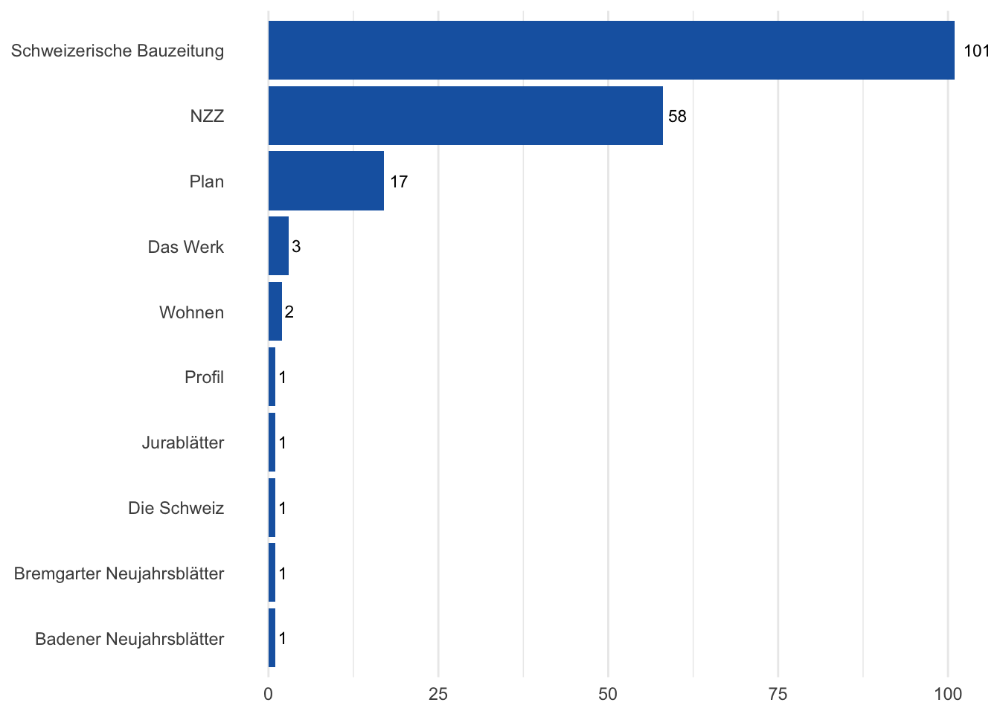
In Abbildung 9 ist die Publikationstätigkeit von Hans Marti auf einer Zeitachse dargestellt; jeder Punkt steht für einen veröffentlichten Artikel. Die Visualisierung zeigt, dass sich Martis Veröffentlichungen in der Schweizerischen Bauzeitung mehrheitlich auf den Zeitraum konzentrieren, in dem er dort als Redaktor angestellt war (1949–1962), wobei er auch nach dem Ende seiner Anstellung dort weitere Texte für diese Zeitschrift schrieb. Der Abgleich mit anderen beruflichen Stationen wie seiner Amtszeit als Stadtzürcher FDP-Gemeinderat (1958–1962) und im Anschluss als Delegierter des Zürcher Stadtrates für Stadtplanung (1962–1968) sowie seine Anstellung im VLP-Zentralbüro (1945–1948) legen keinen offensichtlichen Einfluss auf die Quantität seines publizistischen Outputs nahe.
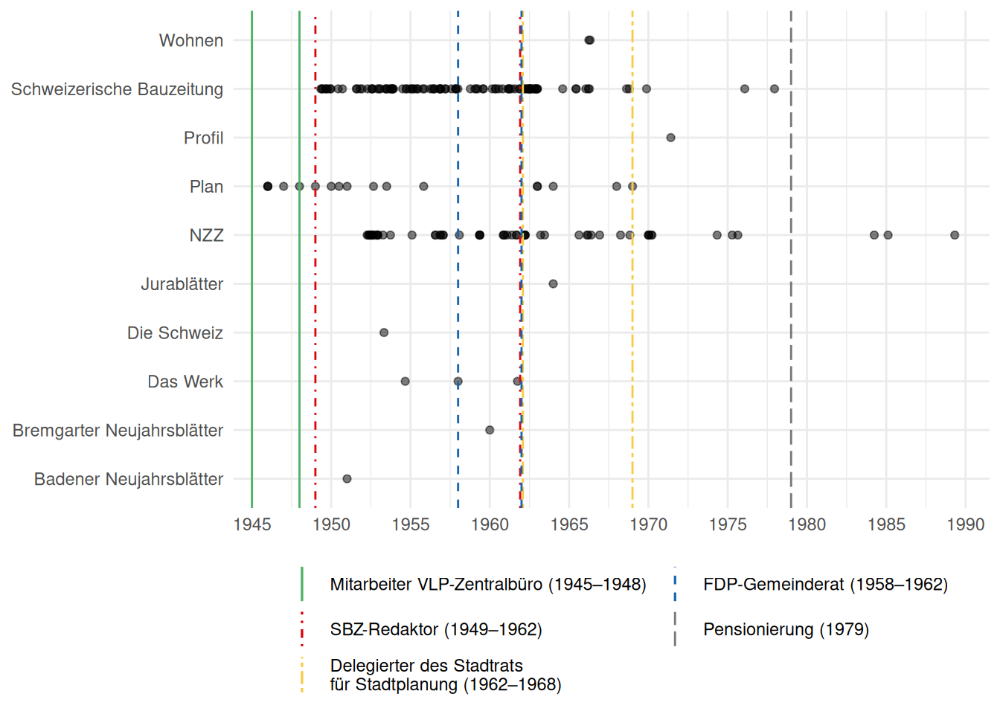
Die Länge der im Korpus enthaltenen Dokumente ist in Abbildung 10 visualisiert. Hierbei ist jedoch zu beachten, dass einige Texte in mehrere Artikel aufgeteilt publiziert worden sind und sich durch eine Gesamtschau noch mehr längere Artikel ergeben würden. Für einen ersten Einblick in den Korpus genügt jedoch die Ansicht auf corpus document-Level.
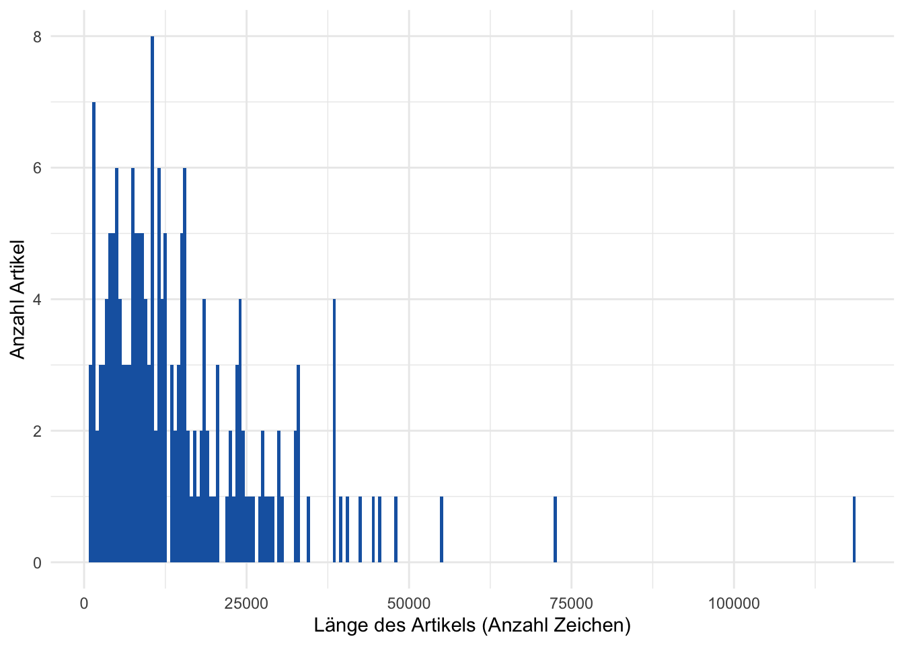
Die kürzesten Dokumente im Korpus sind Artikel, die redaktionelle Kommentare zu folgenden Inhalten, Korrigenda oder Ergänzungen enthalten. Erwähnt seien hier die beiden Korpuselemente mit den meisten Zeichen.
- Der mit Abstand längste an einem Stück publizierte Artikel, ‹Aus der Praxis der Ortsplanung› (Marti 1949a) schlägt mit 118373 Zeichen zu Buche. Auf dreissig Seiten erläutert Marti hier die grundsätzliche Notwendigkeit von Planung anhand eines Fallbeispiels im Kanton Zürich und beschreibt ausführlich die einzelnen Schritte im Planungsprozess sowie die Dokumente wie Bauordnungen, Verkehrslinien-, Baulinien- oder Zonenpläne, die das unmittelbar sichtbare Resultat des Prozesses darstellen. Dieser Artikel ist als ein Grundlagendokument zu sehen, das am Beginn des Institutionalisierungsprozesses in der Nachkriegszeit steht.
- Der mit 72661 Zeichen zweitlängste Artikel im Korpus ist eine von Marti vor dem Zürcher Stadtrat gehaltene und anschliessend abgedruckte Rede aus seiner Amtszeit als Delegierter für Stadtplanung (Marti 1964b). Er präsentiert eine Auslegeordnung der die Stadt Zürich betreffenden Planungsaufgaben und fokussiert auf Fragen der Verkehrsplanung, betont aber auch die Wichtigkeit planerischer Reaktionen auf Umweltverschmutzung, Wohnungsnot, altersgerechte Wohnformen und Landschaftsschutz (Marti 1964b, 556). Die Stadt Zürich wird hier bereits in einen regionalen Verflechtungsraum eingebettet gedacht und geplant, was Fragen der Gemeindeautonomie und damit sehr grundsätzliche Themen tangiert.
Export
Der Korpus wird zur Weiterverwendung als csv-Datei gespeichert.
2_create_corpus.R (Ausschnitt)
corpus_df <- convert(marti_corpus, to = "data.frame")
write.csv(corpus_df, here("build", "marti_corpus.csv"), row.names = FALSE)Der Korpus als csv-Datei wird entsprechend dem Metadaten-Standard für tabellarische Daten und Metadaten im Internet (W3C 2022) mit Metadaten versehen. Das Datenschema wird in einer json-Datei festgehalten, die durch eine Funktion auf Basis von ‹csvwr› (Gower 2022) erzeugt wird.
Datenaufbereitung
Um die Daten zur späteren Analyse vorzubereiten, werden die Texte im Korpus zunächst in tokens umgewandelt. In diesem Schritt werden auch Interpunktion, Ziffern und sonstige Symbole entfernt. Gleichzeitig werden alle tokens (mit Ausnahme von Abkürzungen) in Kleinbuchstaben transformiert.
marti_tokens_full <- tokens(marti_corpus,
remove_punct = TRUE,
remove_numbers = TRUE,
remove_symbols = TRUE) %>%
tokens_tolower(keep_acronyms = TRUE)Die Verknüpfung der Tokens zu den einzelnen Artikeln inkl. Metadaten ist weiterhin gegeben, wie die folgende Vorschau der ersten drei Texte zeigt:
Tokens consisting of 3 documents and 11 docvars.
ban-001_1951_26__90_d :
[1] "im" "jahre" "wurde" "in" "baden" "und"
[7] "seiner" "umgebung" "eine" "gruppe" "gegründet" "deren"
[ ... and 1,024 more ]
brn-001_1960_0__120_d :
[1] "die" "jährliche" "zunahme" "von" "rund"
[6] "einwohnern" "in" "der" "schweiz" "stellt"
[11] "nicht" "nur"
[ ... and 1,136 more ]
jub-002_1964_26__231_d :
[1] "sehr" "geehrte" "herren" "sie" "bitten"
[6] "mich" "einige" "fragen" "zu" "beantworten"
[11] "die" "mit"
[ ... and 2,795 more ]Stop Words
Im nächsten Schritt werden stop words aus den Inhalten entfernt – Wörter, die so häufig auftauchen, dass sie keine Rolle für die Identifikation von Themen spielen (Banks u. a. 2018, 453), wie zum Beispiel der bestimmte Artikel der/die/das. Dafür wird die in quanteda vorhandene Liste an stop words verwendet und manuell um zusätzliche Wörter erweitert. Diese zusätzlichen Begriffe können später nach einer Evaluation der Ergebnisse angepasst werden.
extra_stopwords <- c("ja", "dass", "müssen", "schon", "wäre", "würde", "worden", "wurde", "wurden", "sollen", "a", "h", "dr", "i", "s", "beim", "sei", "überhaupt", "gerade", "einfach", "nämlich", "wer", "dafür", "m", "gar", "ganz", "wären",
# additional stopwords added after modelling iterations
"stadt", "städte", "heute", "mehr", "nr", "jahren", "bild", "cm", "ca", "e", "etwa", "immer", "wohl", "viele", "sogar", "vielleicht", "grosse", "gross",
# French particles to be removed
"le", "les", "de")
marti_tokens_clean <- marti_tokens_full %>%
tokens_remove(pattern = c(stopwords("de"),
extra_stopwords))Compound Tokens/Kollokationen
Die einzelnen Artikel sind nun als tokens segmentiert. Jedes token steht einzeln für sich an einer Position im Dokument. Bei bestimmten Begriffen kann es jedoch inhaltlich sinnvoll sein, mehrere tokens zusammenzufassen, z.B. weil sie Teil einer Sinneinheit sind (‹compound token›). Auf diese Weise bleiben gewisse Zusammenhänge erhalten. Ein Beispiel dafür können Eigennamen sein, bei denen Vor- und Nachname zwar zwei tokens sind, aber inhaltlich eine Person bezeichnen. Diese tokens werden zu einem string zusammengesetzt und dann als Einheit analysiert. Die folgende Übersicht zeigt, dass aber nicht jede häufig auftretende Kombination zweier tokens inhaltlich relevant ist.
marti_tokens_collocations <- textstat_collocations(marti_tokens_clean,
min_count = 3)
head(marti_tokens_collocations, 10) collocation count count_nested length lambda z
1 erster linie 50 0 2 8.940681 32.39351
2 unseres landes 38 0 2 7.180497 31.40272
3 z b 39 0 2 8.121516 31.18487
4 davon überzeugt 39 0 2 7.959719 28.78626
5 preis fr 29 0 2 7.019928 28.19431
6 unserer zeit 47 0 2 4.516716 27.30812
7 verfügung stehenden 31 0 2 8.100800 26.20518
8 weite sicht 26 0 2 9.336658 25.63821
9 wege leiten 32 0 2 7.893685 25.58494
10 vereinigung landesplanung 24 0 2 7.839632 25.34928Abgesehen von einigen wenigen Personennamen spielen insbesondere die Toponyme eine Rolle, die gleichzeitig eine Stadt und einen Kanton bezeichnen. Um in der Textanalyse noch zwischen Erwähnungen von z.B. Stadt und Kanton Bern etc. unterscheiden zu können, werden u.a. die Kantone St. Gallen, Bern, Solothurn und Zürich als Kollokationen erfasst. Als Kollokationen auftretende tokens habe ich basierend auf den Ergebnissen einer Suche nach möglichen Toponymen identifiziert. Dabei hat sich u.a. herausgestellt, dass ‹Zürich› als isoliert auftretendes token in der Regel als Bezeichnung für die Stadt aufzutreten scheint, während für die anderen Massstabsebenen die Bezeichnungen ‹Kanton Zürich›, ‹Agglomeration Zürich› oder ‹Region Zürich› verwendet werden.
collocations <- c("kanton zürich", "agglomeration zürich", "region zürich",
"kanton solothurn", "kanton bern", "kanton st gallen",
"st gallen", "hans marti", "max frisch", "werner moser",
"rolf meyer", "vereinigung landesplanung",
"knonauer amt", "st margrethen") %>%
phrase()
marti_tokens_compounded <- tokens_compound(marti_tokens_clean,
pattern = collocations)Zum Schluss wird das tokens object in eine document-feature matrix (dfm) umgewandelt.
dfm_marti <- dfm(marti_tokens_compounded)Stemming
Stemming ist ein Verarbeitungsschritt, bei dem features automatisiert trunkiert und auf ihre ‹Wurzel› reduziert werden – ein «crude heuristic process» (Manning, Raghavan, und Schütze 2008, 32) basierend auf relativ simplen Regeln. Auf diese Weise können Begriffe, die aufgrund von Konjugation, Deklination o.ä. in verschiedenen Formen auftreten, als eine semantische Einheit erfasst und analysiert werden. Die features jahr, jahrs und jahren würden auf diese Weise alle als jahr verarbeitet werden können. Der Nutzen dieses Verarbeitungsschrittes variiert je nach Korpus und Ansprüchen an die Interpretierbarkeit der Analyseergebnisse, kann jedoch insbesondere für kleine Korpora wertvoll sein, um Nachteile geringer Datenmengen (ein Stück weit) zu kompensieren (Banks u. a. 2018, 453f.).
Quanteda bietet Stemming-Funktionen für tokens und document-feature-Matrizen an. Ich habe diese Funktionen testweise an verschiedenen Stellen im Datenverarbeitungsprozess testweise durchgeführt, um die unterschiedlichen Effekte zu vergleichen. Zunächst habe ich auf Stemming verzichet, da insbesondere bei Toponymen die Bereinigung morphologischer Unterschiede auf eine gemeinsame Wurzel nur bedingt hilfreich (z.B. bei Basel/Basler oder Zürich/Zürcherin) war. Schofield und Mimno (2016) argumentieren, dass Topic Modelling-Verfahren ohnehin relativ erfolgreich darin ist, verbreitete Begriffe mit der gleichen Wurzel zu gruppieren. Gemäss der Empfehlung der Autor*innen habe ich post-stemming durchgeführt – Stemming als Iterationsschritt in der Modellierung von topics nach einer ersten Zwischenevalution zur Verbesserung der Ergebnisse (Schofield und Mimno 2016, 298).
Begriffe wie plan bzw. planung treten (im trunkierter Form) überproportional häufig auf – was aufgrund des thematischen Zuschnitts des Korpus nicht verwunderlich ist. An dieser Stelle ist die Liste deutschsprachiger stopwords von quanteda nicht mehr hilfreich, da derartige Fachbegriffe nicht von einer general purpose-Liste gedeckt werden. Daher habe ich einige zusätzliche Stopwords manuell hinzugefügt.
dfm_marti <- dfm_wordstem(dfm_marti, language = "de")
# remove additional stopwords after stemming
stemmed_stopwords <- c("uns", "gross", "erst", "neu", "alt", "wohl", "abb",
"zurich", "plan", "bau", "gemeind", "planung")
dfm_marti <- dfm_remove(dfm_marti, pattern = stemmed_stopwords)Sparse Terms
Zusätzlich zu den häufig auftretenden stop words werden nun Begriffe entfernt, die nur in sehr wenigen Artikeln verwendet werden (‹sparse terms›). Diese können zwar vielfach auftreten und daher in absoluten Zahlen nicht zu den seltensten terms gehören, fallen aber trotzdem aus dem Korpus, sofern sie nicht in mindestens zwei oder mehr Artikeln vorkommen.
Beispiele für solche sparse terms sind die folgenden Begriffe:
pelikan suhr flughof schneidergass witikonerstrass
21 21 19 19 19
spalenberg bestuhl hauenstein wynenfeld nadelberg
17 17 17 16 14 Das token pelikan beispielsweise kommt zwar an 21 Stellen im Korpus vor, allerdings in nur einem Artikel (Marti 1949b) und scheint daher im Gesamtkontext betrachtet von vernachlässigbarer Relevanz zu sein. Durch die Entfernung dieser sparse terms wird die Verarbeitungszeit während der eigentlichen Analyse verringert. Inhaltlich betrachtet kann einer unpassenden Gewichtung von Begriffen vorgebeugt werden, die z.B. durch einen einzelnen langen, monothematischen Artikel entstehen könnte, der die Wichtigkeit eines Themas im Gesamtkorpus verzerren würde.
Die Anzahl Artikel, in denen ein feature mindestens vorkommen muss, um nicht als sparse term zu gelten, wird manuell festgelegt. Die verschiedenen Effekte möglicher Schwellenwerte auf die Dimensionen der document-feature matrix können mit ‹stm› (Roberts, Stewart, und Tingley 2019) visualisiert werden (Abbildung 11).
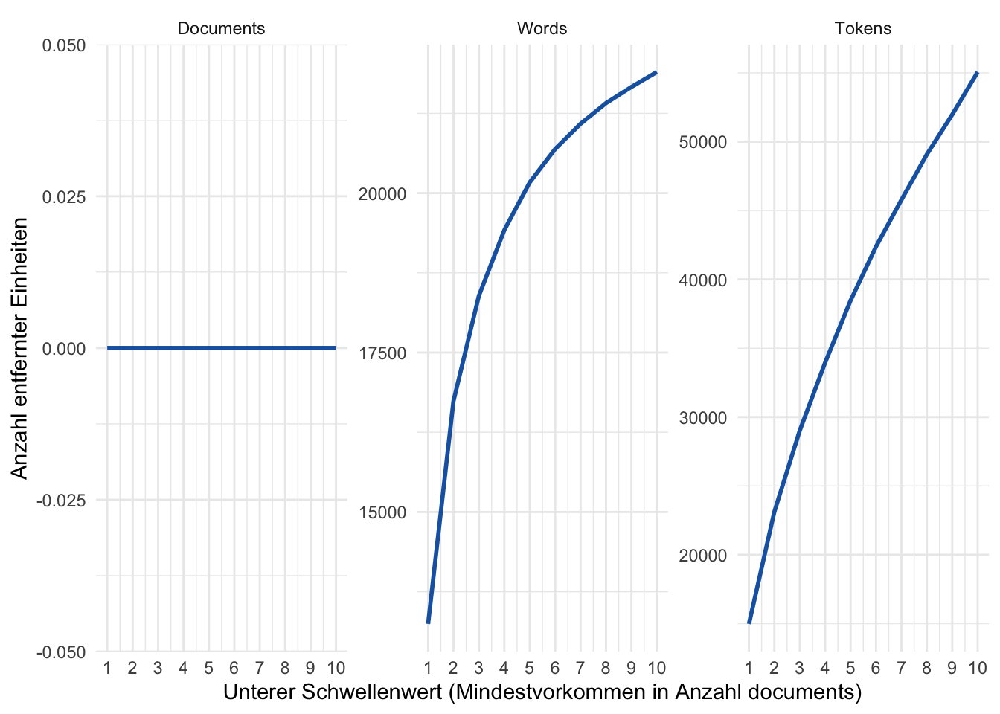
Lesebeispiel für Abbildung 11: Die Entfernung von features, die in weniger als vier Artikeln vorkommen, resultiert in der Entfernung von 0 vollständigen Artikeln (links), 19420 Wörtern (mittig) bzw. 33964 tokens (rechts) aus der document-feature matrix. Der auf Basis dieser Visualisierungen ausgewählte Schwellenwert von zwei Artikeln, in denen ein token mindestens vorkommen muss, um Teil der dfm_marti zu bleiben, folgt der Empfehlung von Banks u. a. (2018, 453) für vergleichsweise kleine Korpora.
dfm_marti <- dfm_trim(dfm_marti, min_docfreq = 2)Datenanalyse
Die wie beschrieben aufbereitete document-feature matrix enthält weiterhin alle (deutschsprachigen) im Korpus enthaltenen Texte. Dargestellt wird die Anzahl jedes tokens pro Texteinheit, hier wieder als Vorschauansicht für die ersten drei Artikel:
Document-feature matrix of: 3 documents, 11,240 features (95.47% sparse) and 11 docvars.
features
docs jahr bad umgeb grupp gegrundet der zweck baulich
ban-001_1951_26__90_d 3 16 2 3 1 2 3 3
brn-001_1960_0__120_d 2 0 0 0 0 0 0 0
jub-002_1964_26__231_d 2 0 3 0 0 1 2 0
features
docs entwickl verschied
ban-001_1951_26__90_d 8 2
brn-001_1960_0__120_d 4 0
jub-002_1964_26__231_d 2 0
[ reached max_nfeat ... 11,230 more features ]Im nächsten Schritt erfolgt die eigentliche Analyse der Artikel. Dazu werden zunächst einige Darstellungen zur Annäherung an die Inhalte erzeugt. Anschliessend werden Themen mit verschiedenen Parametern modelliert.
Explorative Visualisierungen
Einen ersten Einblick in die document-feature matrix ermöglichen Wordclouds und andere Visualisierungen. Abbildung 12 zeigt die hundert häufigsten Wörter, ähnlich häufig vorkommende tokens sind farblich und über die Schriftgrösse gruppiert.
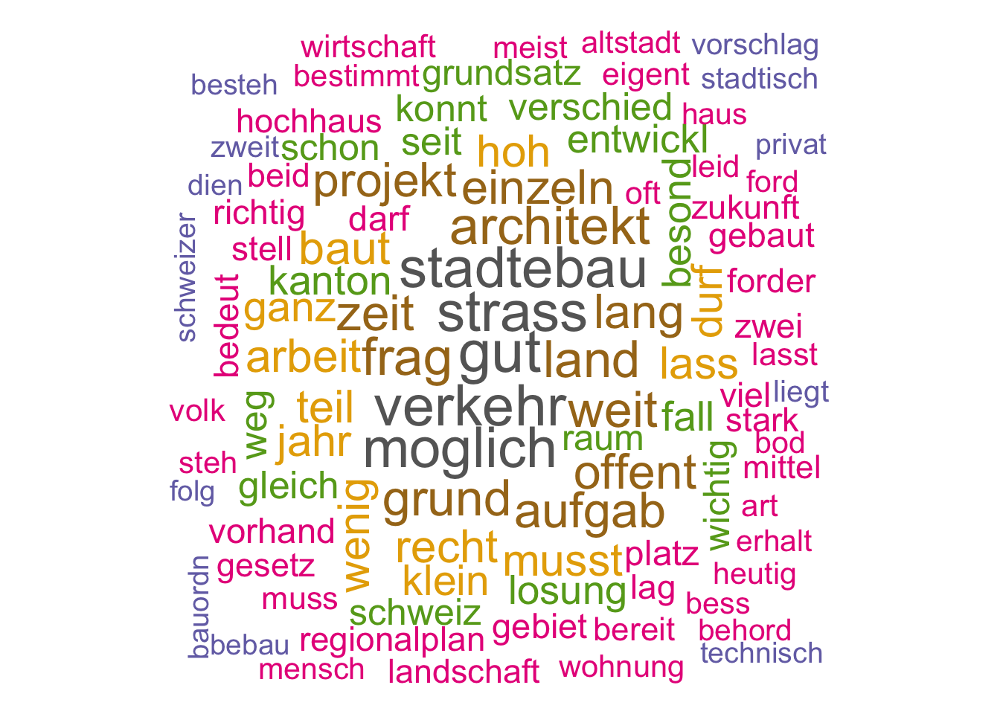
Bevor der Inhalt der Artikel mittels Topic Modelling untersucht wird, kann ein Dendrogramm eine Vorschau von Themen liefern. Dafür werden oft gemeinsam auftretende (co-occurring) Begriffe ermittelt. Abbildung 13, erstellt mit dendextend (Galili 2015), zeigt ein Dendrogramm mit dreissig tokens, die jeweils auf Basis der relativen Häufigkeit ihres Auftretens in den verschiedenen Artikeln gruppiert werden. Von rechts nach links gelesen nimmt die modellierte Ähnlichkeit der tokens ab, je weiter sie entlang der branches voneinander entfernt sind.
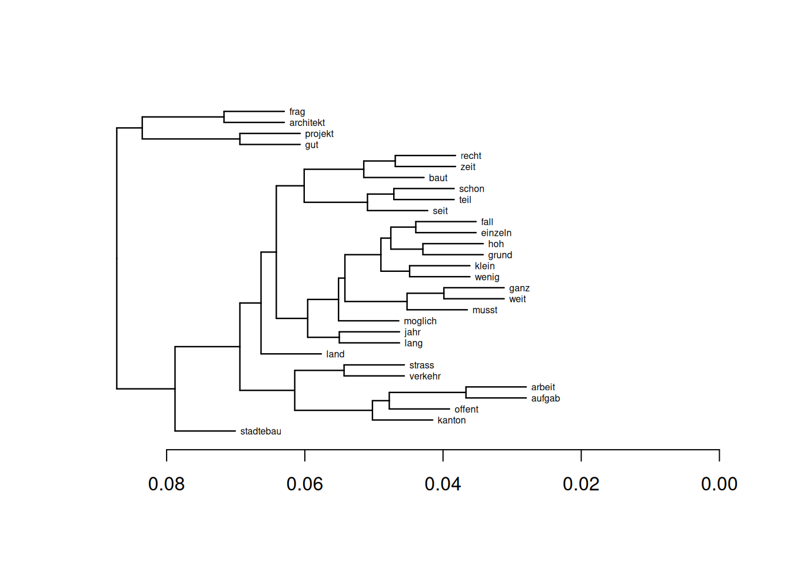
Ein Beispiel zur Interpretation16 von Abbildung 13 ist die Beobachtung, dass Strassen und Verkehr im Vergleich zum Städtebau offenbar eher als Aufgabe der öffentlichen Hand diskutiert werden – das suggerieren zumindest die Distanzen der jeweiligen Labels im Diagramm.
Eine weitere Form der Visualisierung zu explorativen Zwecken ist eine Netzwerkdarstellung. Die mit quanteda erstellte Abbildung 14 zeigt, wie ausgeprägt die Kombinationen der dreissig häufigsten features in der document-feature matrix sind.
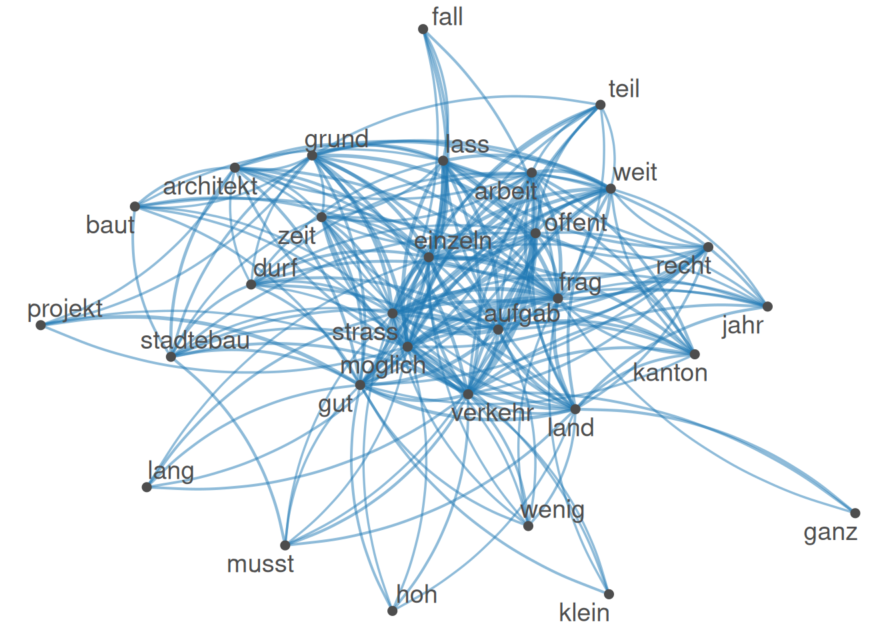
Topic Modelling: Baseline-Modell
Wie beschrieben (s. Abschnitt Methodik) nutze ich das Package ‹stm›, um eine erweiterte Variante der Latent Dirichlet Allocation anzuwenden, die es ermöglicht, weitere Variablen in die Modellierung einzubeziehen. Zunächst führe ich jedoch eine baseline-Modellierung durch, die ohne Kovarianten funktioniert.
Im ersten Schritt muss die aufbereitete document-feature matrix für die Verwendung mit stm nochmals bearbeitet werden. Die Funktion prepDocuments() nimmt auch das Entfernen von sparse terms vor; da dieser Schritt jedoch bereits erfolgt ist (s. Abschnitt Sparse Terms), wird hier keine weitere untere Grenze gesetzt.
stm_marti <- convert(dfm_marti, to = "stm",
docvars = docvars(marti_corpus))
stm_marti_prepped <- prepDocuments(stm_marti$documents, stm_marti$vocab,
stm_marti$meta, lower.thresh = 0)Auch wenn Topic Modelling ein stark automatisiertes Verfahren zur Textanalyse ist, muss die Anzahl der zu modellierenden Themen manuell festgelegt werden. Da es keine absolut ‹richtige› Anzahl an Themen für einen Korpus geben kann (vgl. Grimmer und Stewart 2013), ist auch dieser Teil des Verfahrens mit Iterationen verbunden.
Zur Auswahl eines sinnvollen Wertes für die Anzahl der zu modellierenden Themen habe ich Versuche mit fünf bis dreissig Themen ausgeführt. Im stm-Package wird eine Funktion searchK() angeboten (Roberts, Stewart, und Tingley 2019, 11), mit der Themen in unterschiedlicher Anzahl ausprobiert und verglichen werden können:
5_stm-baseline.R
K <- c(5, 9, 10, 11, 15, 20, 30)
kresult <- searchK(stm_marti_prepped$documents, stm_marti_prepped$vocab,
K,
data = stm_marti_prepped$meta,
max.em.its = 150,
init.type = "Spectral")
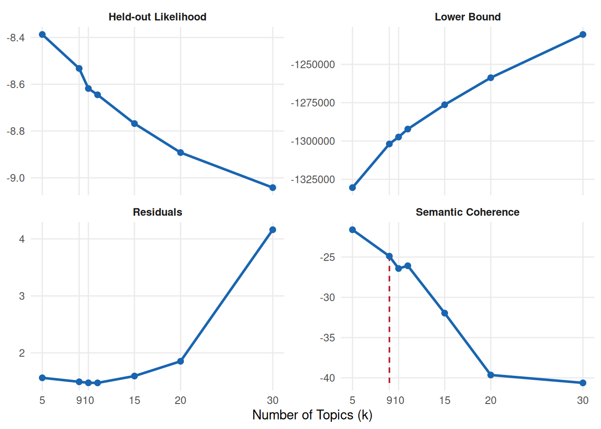
Das Ziel des Topic Modellings an dieser Stelle ist die Interpretation der Ergebnisse17, um Aussagen über Marti, seine Arbeit bzw. die Planungsgeschichte der Schweiz treffen zu können. In diesem Kontext ist insbesondere das Merkmal ‹Semantic Coherence› wichtig (Mimno u. a. 2011; Wesslen 2017). Ein höherer Wert wird erreicht, «when the most probable words in a given topic frequently co-occur together» (Roberts, Stewart, und Tingley 2019, 10). Die ersten Iterationen habe ich mit k = 10 topics erstellt. Wie der Plot zur semantischen Kohärenz nahelegt, liegt die (anhand dieser Kennzahl gemessene) Qualität der Ergebnisse bei zehn topics jedoch niedriger als bei neun topics. Nach einer Evaluation der Ergebnisse der Modellierungen mit neun bzw. zehn topics verwende ich im weiteren Verlauf k = 9 Themen.
Modellierte Themen
Als Ergebnis dieser Baseline-Modellierung produziert stm wie gewünscht 9 topics, die in Abbildung 16 ablesbar sind. Die topics sind nummeriert und tragen als Titel je ein Schlagwort, das ich nach einer inhaltlichen Auswertung bestimmt und nachträglich als Label eingefügt habe.
stmFit_baseline <- stm(stm_marti_prepped$documents, stm_marti_prepped$vocab,
K = k, max.em.its = 150,
data = stm_marti_prepped$meta,
init.type = "Spectral", seed = 300)
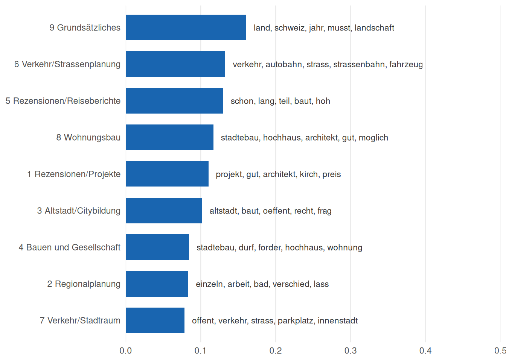
Die Themen sind von oben nach unten je nach erwarteter Verteilung im Korpus sortiert. Mit jedem identifizierten Thema werden die fünf features geplottet, die im berechneten Modell mit den höchsten Wahrscheinlichkeiten unter diesem Thema auftreten (‹word-topic probabilities›). Diese Methode führt jedoch dazu, dass generell häufig auftretende Begriffe bei mehreren topics geführt werden – und damit die Themen weniger trennscharf erscheinen. Deswegen bilde ich im Folgenden neben der Zuordnung auf Basis der errechneten Wahrscheinlichkeiten (PROB, wie in Abbildung 16) eine zweite Zuordnung von features zu topics ab: Unter dem Label FREX – für frequency-exclusivity scoring – sind features gelistet, die ebenfalls mit hoher Wahrscheinlichkeit zum Thema gehören. Diese Auswahl aber erfolgt nach einer Kombination von Kriterien, die zusätzlich eine Gewichtung nach der Exklusivität der features bezüglich des jeweiligen Themas beinhaltet. Features, die in einem topic überproportional oft im Vergleich zur Gesamthäufigkeit auftreten, werden höher gewichtet und damit prominenter dargestellt. So sollen die modellierten topics aus semantischer Perspektive intuitiver zu interpretieren und voneinander abzugrenzen sein (Roberts u. a. 2014, 1068).
Top Features für Topic "1 Rezensionen/Projekte":
PROB: projekt, gut, architekt, kirch, preis, arch, klein
FREX: ankauf, preisgericht, zimm, pfarrhaus, schwesternzimm, arch, marktplatz
Top Features für Topic "2 Regionalplanung":
PROB: einzeln, arbeit, bad, verschied, lass, frag, strass
FREX: ortschaft, ortsplan, bad, industriezon, aarberg, regionalplanungsgrupp, brugg
Top Features für Topic "3 Altstadt/Citybildung":
PROB: altstadt, baut, oeffent, recht, frag, stadtebau, architekt
FREX: ausnutzungskoeffizient, altstadt, altstadtsanier, citybild, freihalteflach, bahnhofstrass, oeffent
Top Features für Topic "4 Bauen und Gesellschaft":
PROB: stadtebau, durf, forder, hochhaus, wohnung, mensch, grund
FREX: schulzimm, schulhaus, titel, famili, menschlich, krank, bestuhl
Top Features für Topic "5 Rezensionen/Reiseberichte":
PROB: schon, lang, teil, baut, hoh, architekt, gut
FREX: abteil, paris, brasília, flughof, dach, hall, rio
Top Features für Topic "6 Verkehr/Strassenplanung":
PROB: verkehr, autobahn, strass, strassenbahn, fahrzeug, moglich, vorschlag
FREX: autobahn, strassenbahn, expresstrass, gutacht, pirath-feuchting, bellevu, untergrund
Top Features für Topic "7 Verkehr/Stadtraum":
PROB: offent, verkehr, strass, parkplatz, innenstadt, aufgab, grund
FREX: transportplan, parkhaus, autobahnring, parkraum, cityring, sihlraum, expressstrass
Top Features für Topic "8 Wohnungsbau":
PROB: stadtebau, hochhaus, architekt, gut, moglich, baut, hoh
FREX: ausnutzungsziff, quadratmet, bewill, baubewill, bauvorhab, ausnahm, erhoht
Top Features für Topic "9 Grundsätzliches":
PROB: land, schweiz, jahr, musst, landschaft, kanton, volk
FREX: raumplan, einwohn, holland, leitbild, bevolker, volk, landesplanEvaluation
Nicht alle vom Modell bestimmten topics sind gleich gut verständlich bzw. interpretierbar. Ein Ansatz, die inhaltliche Aussagekraft auch quantitativ zu bewerten, ist die semantische Kohärenz (Mimno u. a. 2011). Die Aussagekraft der verschiedenen topic-Definitionen kann über einen Plot abgebildet werden, der semantische Kohärenz eines Themas und die Exklusivität der tokens für das jeweilige topics in Beziehung setzt (Abbildung 17). Eine solche Darstellung bietet Hinweise auf die Aussagekraft der jeweiligen topics im Vergleich zueinander.
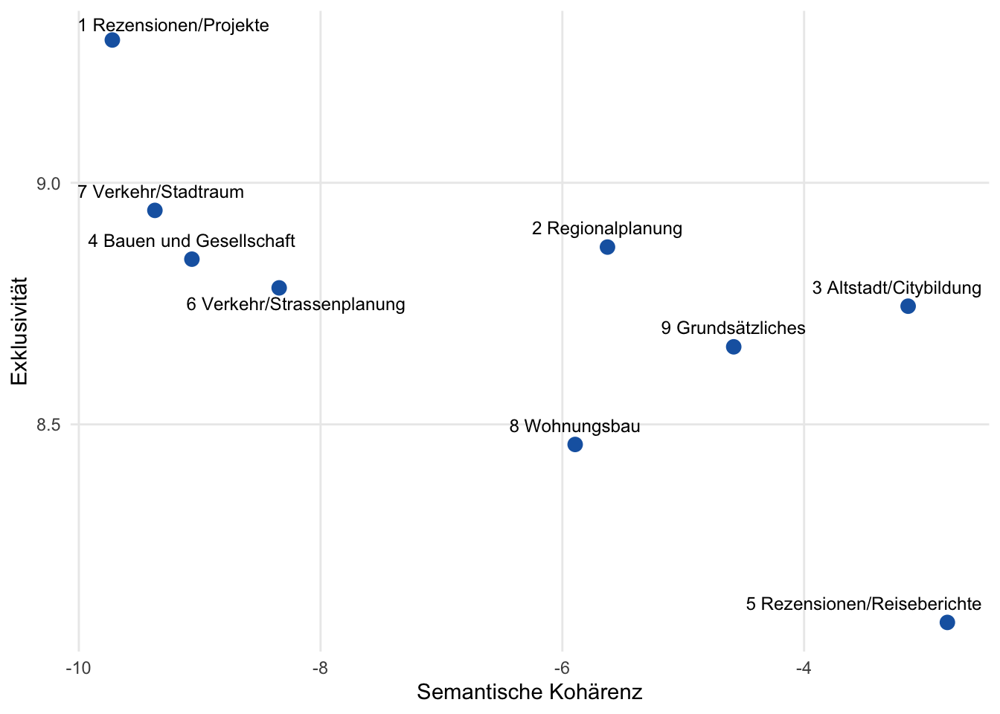
Ein höherer Wert auf der x-Achse entspricht höherer semantischer Kohärenz, was auf eine intuitivere Interpretierbarkeit des topics hindeutet. Auf der y-Achse wird die Exklusivität der tokens eines topics für ebendieses aufgetragen. Ein höherer Wert dort deutet darauf hin, dass dieses topic aus Begriffen gebildet wird, die tendenziell weniger bei anderen topics verwendet werden. Dagegen deutet ein niedriger Werte auf der y-Achse darauf hin, dass es sich um eine generische, zu allgemeingehaltene Themendefinition handelt (Wesslen 2017). Für topics, die hohe x- und y-Werte erzielen, kann dementsprechend eine konzisere Definition über die zugeordneten Begriffe erwartet werden. Die Variation auf der y-Achse halte ich in diesem Kontext allerdings für eher zweitrangig, da sich die Artikel im Grossen und Ganzen ja alle mit Planung und damit zwar einem einzelnen, aber dafür inhaltlich recht weitgefassten Themenkomplex beschäftigen, in dem hohe Überschneidungen im Vokabular der einzelnen topics erwartbar sind.
Die Aussagekraft dieser Darstellung ist meiner Einschätzung nach gering. Einerseits durch die grundsätzlich hohe thematische wie auch sprachliche Homogenität des Korpus an sich, die nur geringe Unterschiede erwarten lässt; sowie andererseits weil die Darstellung im Plot ohnehin nur Aussagen zur Kohärenz der topics im Vergleich untereinander ermöglicht.
Als Alternative erstelle ich für jedes der topics eine Tabelle, in der die zehn Artikel im Korpus aufgelistet sind, die am stärksten mit dem jeweiligen topic assoziiert werden können. Damit ergibt sich ein weiterer Indikator zur Aussagekraft bzw. Passgenauigkeit der topics und der von mir erstellten Bezeichnungen.
| Artikel | Wahrscheinlichkeit |
|---|---|
| Wettbewerb für kirchliche Bauten in Zürich-Witikon | 0.999 |
| Betrachtungen zum Wettbewerb für das Schwesternhaus des Zürcher Kantonsspitals | 0.998 |
| 25 Jahre Landesplanung | 0.997 |
| 25 Jahre Landesplanung | 0.997 |
| Basel und das Gellert-Areal | 0.997 |
| Ideenwettbewerb für die Gestaltung eines Kulturzentrums in Basel | 0.997 |
| Neues Bauen in Deutschland | 0.993 |
| Wettbewerb für ein Schwesternhaus des Kantonsspitals Zürich | 0.993 |
| Schweizerische Vereinigung für Landesplanung | 0.990 |
| Schweiz. Vereinigung für Landesplanung | 0.987 |
| Artikel | Wahrscheinlichkeit |
|---|---|
| Aus der Praxis der Ortsplanung | 0.999 |
| Kurs für Behördemitglieder und Beamte in Aarberg 15.–18. April 1947 | 0.998 |
| Die städtebauliche Entwicklung im Birrfeld | 0.995 |
| Die Industriezone Wynenfeld in Buchs und Suhr (Aargau) | 0.988 |
| Kantonsschulbauten in Zürich-Oerlikon | 0.981 |
| Kantonsschulbauten in Zürich-Oerlikon | 0.969 |
| Die Planung der Region Baden | 0.770 |
| Kantonsschulbauten in Zürich-Oerlikon: Projektauftrag an acht Architekten | 0.740 |
| Zürich wird Grossstadt: Die Bauordnung von 1947 | 0.700 |
| Regionalplanung Baden und Umgebung: die Aufgabe des Architekten | 0.583 |
| Artikel | Wahrscheinlichkeit |
|---|---|
| Bauen und Ordnen | 0.999 |
| Bauen und Ordnen | 0.999 |
| Die Entwicklung des Zürcher Stadtzentrums I | 0.999 |
| Zürich wird Grossstadt: Die Sanierung der Zürcher Altstadt I | 0.998 |
| Altstadtsanierung in Zürich und sonst: Vortrag | 0.998 |
| Die Entwicklung des Zürcher Stadtzentrums II | 0.998 |
| Zürich wird Grossstadt: Die Sanierung der Zürcher Altstadt II | 0.997 |
| Der Schattenwurf von Gebäuden | 0.997 |
| Zürich wird Grossstadt: City und Altstadt | 0.997 |
| Der Ausnutzungskoeffizient als Mitte zur Begrenzung der baulichen Abnutzung von Grundstücken | 0.995 |
| Artikel | Wahrscheinlichkeit |
|---|---|
| Städtebau, eine menschliche Aufgabe | 0.999 |
| Städtebau, eine menschliche Aufgabe | 0.999 |
| Fragen zum Schulhausbau | 0.997 |
| Es liegt was in der Luft | 0.997 |
| Kinderspielplätze in Städten | 0.989 |
| Achtung: die Schweiz | 0.987 |
| 7 ½ Prozent | 0.974 |
| Hygienische Forderungen an den Schulbau | 0.973 |
| Das neue Schulhaus: Ausstellung im Kunstgewerbemuseum Zürich vom 29. August bis 11. Oktober 1953 | 0.922 |
| Bauen und Wohnen. Vierteljahreszeitschrit, Herausgeber und Verleger Adolf Pfau, Zürich | 0.817 |
| Artikel | Wahrscheinlichkeit |
|---|---|
| Brasilia, die neue Hauptstadt Brasiliens: ein Reisebericht von Hans Marti | 0.998 |
| Betriebsaufnahme im Flughof Zürich-Kloten | 0.998 |
| Der Neubau des Warenhauses Globus in Zürich | 0.998 |
| Wettbewerb für einen Saalbau in Muttenz | 0.997 |
| Heimatschutz und ländliches Bauen | 0.994 |
| Interbau Berlin 1957 | 0.993 |
| Von der Gestaltung der Mustermesse-Stände im Wandel der Jahrzehnte | 0.993 |
| Überquerung des Aaretals durch die Autobahn N3 in der Gegend von Brugg | 0.992 |
| Die erste Etappe des Neubaus der Technischen Hochschule | 0.989 |
| Heimatschutz und Landesplanung | 0.988 |
| Artikel | Wahrscheinlichkeit |
|---|---|
| Die Zürcher Verkehrssanierung | 0.999 |
| Zu den Zürcher Verkehrsgutachten | 0.998 |
| Die Planung des schweizerischen Nationalstrassennetzes | 0.998 |
| Verkehrsprobleme der Zürcher Innenstadt | 0.998 |
| Die Planung des schweizerischen Nationalstrassennetzes | 0.998 |
| Offene Fragen an die Verkehrsplaner | 0.997 |
| Grundfragen der Zürcher Stadtplanung II | 0.996 |
| Zum Generalverkehrsplan für die Stadt Zürich | 0.996 |
| Kritik an der Zürcher Verkehrsplanung II | 0.996 |
| Die Expresstrasse im Stadtorganismus | 0.995 |
| Artikel | Wahrscheinlichkeit |
|---|---|
| Der Stand der Verkehrsplanung der Stadt Zürich | 0.999 |
| Der Stand der Verkehrsplanung der Stadt Zürich | 0.999 |
| Die Stadtplanung der Stadt Zürich | 0.999 |
| Die Stadtplanung der Stadt Zürich: Schlussbericht der Delegierten des Stadtrates für die Stadtplanung | 0.998 |
| Aufgaben der Stadtplanung Zürich | 0.996 |
| Die Expressstrasse im Sihlraum II: Die vier Varianten | 0.840 |
| Die Expressstrasse im Sihlraum III: Das Herz der Grossstadtregion | 0.739 |
| Zürich ist eine schöne Stadt | 0.738 |
| Die Expressstrasse im Sihlraum | 0.718 |
| Planung von Stadt und Land I–III | 0.660 |
| Artikel | Wahrscheinlichkeit |
|---|---|
| Probleme des Wohnungsbaus in den Vorortgemeinden der Region II | 0.998 |
| Fehlende Architekturkritik | 0.998 |
| Probleme des Wohnungsbaus in den Vorortgemeinden der Region I | 0.997 |
| Gedanken zur Beurteilung von Hochhausprojekten | 0.997 |
| Gedanken zur Beurteilung von Hochhausprojekten I | 0.997 |
| Das Geschäftshaus «Zum kleinen Pelikan» in Zürich | 0.997 |
| Keine Regel ohne Ausnahme | 0.997 |
| Quartierplan mit erhöhter Ausnützung in Zofingen: das Quartier Mühlabifang im Stadtteil Wiggerfeld | 0.997 |
| Erhöhte Ausnützung im Baugebiet | 0.996 |
| Die Kirchentürme von Uetikon | 0.995 |
| Artikel | Wahrscheinlichkeit |
|---|---|
| Bauaufgaben der Zukunft | 0.999 |
| Raumplanung und Umweltgestaltung: Stellungsnahme des SIA zum Entwurf des neuen Raumplanungsgesetzes | 0.997 |
| Besinnung auf die Landesplanung | 0.997 |
| Ist das Leitbild CK-73 nicht mehr aktuell? | 0.997 |
| Gedanken zur zürcherischen Regionalplanung III | 0.996 |
| Leitbilder im Rahmen der Raumordnung | 0.996 |
| Gedanken zur zürcherischen Regionalplanung II | 0.994 |
| Zürich – die werdende Grossstadt | 0.993 |
| Zürich wird Grossstadt: Planungsaufgaben der Zukunft | 0.992 |
| Das Volk wird nicht übergangen | 0.991 |
In dieser ersten Bestandsaufnahme wird sichtbar, dass sich im trainierten Modell grundsätzlich sinnvolle topics bestimmen lassen. Wo sich einzelne topics offensichtlich inhaltlich überschneiden, ergeben sich publizistische Schwerpunkte in den Bereichen Verkehrsplanung, Rezensionen (vermutlich Martis Position als Redaktor geschuldet) sowie die Diskussion planerischer Grundsatzfragen. Die Anzahl der topics könnte reduziert werden, um diese Überschneidungen zu vermeiden.
In einem zweiten Evaluationsschritt plotte ich ein Netzwerk (Abbildung 18), dass Korrelationen zwischen den modellierten topics darstellt.
Im Erarbeitungsprozess habe ich Abbildung 17 und die anderen Bewertungsmetriken jeweils mit dem entsprechenden Output von Modellerierungen in mehreren Iterationen mit anderen Werten für k und anderen stopwords verglichen. Das trainierte Topic Model ist dementsprechend ein Kompromiss aus verschiedenen Vor- und Nachteilen dieser Parameter und es scheint mir plausibel, dass die 9 topics und die dazu ausgewählten Labels ein repräsentatives Abbild des Korpus darstellen. Auf dieser Basis werden nun die Artikel-Metadaten einbezogen.
Topic Modelling mit Covariates
Um die Textproduktion von Hans Marti unter dem Licht der vorhandenen Metadaten zu analysieren, erstelle ich ein weiteres Modell, in das durch ‹stm› Metadaten inkludiert werden. Als Covariates für das Modell fungieren wie während der Korpuserstellung beschrieben Metadaten aus dem Korpus: publication, pol_mandat und fachpublikum. Abgesehen davon ändern sich die Parameter im Vergleich zum Baseline-Modell nicht:
k <- 9
stmFit_cov <- stm(stm_marti_prepped$documents, stm_marti_prepped$vocab,
K = k,
prevalence = ~publication + pol_mandat + fachpublikum,
max.em.its = 150,
data = stm_marti_prepped$meta,
init.type = "Spectral", seed = 300)Die bereits für das baseline-Modell durchgeführte Evaluation kann auch für dieses Modell durchgeführt werden. An den ursprünglichen Parametern für das topic modelling kann festgehalten werden. Die Ergebnise zwischen den Modellen unterscheiden sich nur geringfügig. Dies deutet darauf hin, dass der Einfluss der gewählten Metadaten auf die topics sehr klein ist, was nicht zuletzt auch durch den inhaltlich wie sprachlich ziemlich homogenen Korpus zu erklären ist. Zum Vergleich mit Abbildung 16 verändern sich die den topics zugeordneten features nur im Detail:
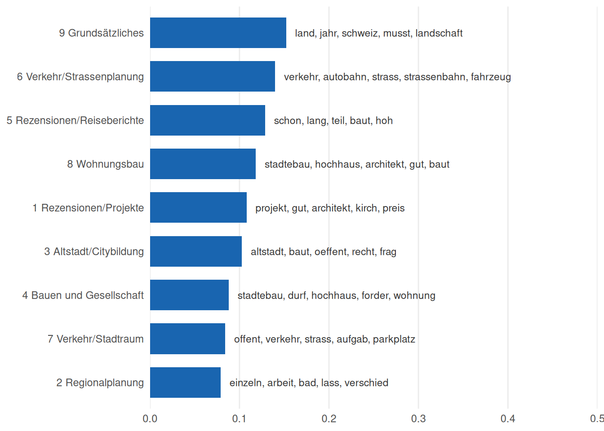
Verglichen mit der bereits für das baseline-Modell erzeugten Liste mit Topic-Labels ergeben sich ebenfalls keine gröberen Änderungen durch den Einbezug der Metadaten in das topic model:
Top Features für Topic "1 Rezensionen/Projekte":
PROB: projekt, gut, architekt, kirch, preis, arch, klein
FREX: ankauf, zimm, preisgericht, pfarrhaus, schwesternzimm, arch, marktplatz
Top Features für Topic "2 Regionalplanung":
PROB: einzeln, arbeit, bad, lass, verschied, frag, moglich
FREX: ortsplan, ortschaft, bad, industriezon, aarberg, stadtch, regionalplanungsgrupp
Top Features für Topic "3 Altstadt/Citybildung":
PROB: altstadt, baut, oeffent, recht, frag, stadtebau, architekt
FREX: ausnutzungskoeffizient, altstadt, altstadtsanier, citybild, freihalteflach, bahnhofstrass, oeffent
Top Features für Topic "4 Bauen und Gesellschaft":
PROB: stadtebau, durf, hochhaus, forder, wohnung, mensch, grund
FREX: schulzimm, schulhaus, titel, menschlich, famili, krank, bestuhl
Top Features für Topic "5 Rezensionen/Reiseberichte":
PROB: schon, lang, teil, baut, hoh, architekt, gut
FREX: paris, brasília, flughof, dach, hall, rio, hauptstadt
Top Features für Topic "6 Verkehr/Strassenplanung":
PROB: verkehr, autobahn, strass, strassenbahn, fahrzeug, moglich, vorschlag
FREX: autobahn, strassenbahn, expresstrass, gutacht, pirath-feuchting, bellevu, untergrund
Top Features für Topic "7 Verkehr/Stadtraum":
PROB: offent, verkehr, strass, aufgab, parkplatz, kanton, innenstadt
FREX: transportplan, parkhaus, sihlraum, cityring, parkraum, expressstrass, parkraumplan
Top Features für Topic "8 Wohnungsbau":
PROB: stadtebau, hochhaus, architekt, gut, baut, moglich, hoh
FREX: ausnutzungsziff, baubewill, bewill, quadratmet, ausnahm, erhoht, zofing
Top Features für Topic "9 Grundsätzliches":
PROB: land, jahr, schweiz, musst, landschaft, entwickl, kanton
FREX: raumplan, einwohn, landwirtschaft, leitbild, bevolker, holland, genfIm nächsten Schritt können dann mit diesem Modell der Effekt der Variablen auf das Auftreten der topics gemessen werden. Dazu müssen die als Booleans erfassten Werte noch als kategorische Variablen deklariert werden18.
cols_cov <- c("publication", "pol_mandat", "fachpublikum")
stm_marti_prepped$meta[cols_cov] <- lapply(
stm_marti_prepped$meta[cols_cov],
as.factor
)Effekte der einbezogenen Metadaten
In den nächsten Schritten werde ich die modellierten topics unter Einbezug der Artikelmetadaten – publication, pol_mandat und fachpublikum – analysieren und interpretieren. Als Ausgangspunkt dienen die eingangs formulierten Thesen:
- Die Themenverteilung unterscheidet sich je nach Zielgruppe der Publikationen. Projektrezensionen und Baubesprechungen sind eher in Fachmedien zu erwarten, grundsätzliche Erörterungen zu Raumplanung und Gesetzgebung als Teil einer fachübergreifenden politischen Debatte auch in der Tagespresse.
- Auch während seiner Arbeit als Gemeinderat und als Delegierter des Stadtrates der Stadt Zürich fährt Marti mit seiner publizistischen Arbeit fort. In diesem Zeitraum ist eine verstärkte Auseinandersetzung mit der Stadt Zürich bzw. umgekehrt ein Rückgang der Häufigkeit von Grundsatzfragen zu erwarten.
- Verkehrsplanung wird als Thema von Marti früh, d.h. vor der in den 1960er-Jahren aufkommenden Umweltbewegung, thematisiert und nimmt übergreifend eine prominente Rolle im Korpus ein.
- Die Auseinandersetzung mit der Typologie Hochhaus, die landesweit für Aufsehen sorgt, lässt sich ebenfalls im Korpus und damit als für Marti wichtiges Thema identifizieren.
Themenverteilung nach Zielpublikum (These 1)
Jeder Artikel, der Teil des Korpus ist, wurde dahingehend klassifiziert, ob sich das Medium, in dem der Text erschienen ist, zuvorderst an ein (planerisches/architektonisches) Fachpublikum richtet oder an die breite Öffentlichkeit. Als Fachzeitschriften gelten die Zeitschriften Plan, Schweizerische Bauzeitung, Das Werk sowie Wohnen (Tabelle 1).
In Fachzeitschriften sind 66% der Artikel im Korpus erschienen (Abbildung 20). Berücksichtigt man nicht die absolute Anzahl der Artikel, sondern den Anteil der Medien an der gesamten Textlänge (Zeichenzahl) des Korpus, wird der Anteil der Zeitschriften für das Fachpublikum noch grösser (Abbildung 21).
Die Frage ist nun, ob sich die Verteilung der Themen unterscheidet, je nach dem, ob Fachpublikum angesprochen wird oder nicht. Dazu kann der Einfluss der Variable fachpublikum auf die Verteilung der Themen berechnet und interpretiert werden:
topic_effect_fachpublikum <- estimateEffect(
1:k ~ fachpublikum,
stmFit_cov,
metadata = stm_marti_prepped$meta,
documents = stm_marti_prepped$documents
)
Call:
estimateEffect(formula = 1:k ~ fachpublikum, stmobj = stmFit_cov,
metadata = stm_marti_prepped$meta, documents = stm_marti_prepped$documents)
Topic 1:
Coefficients:
Estimate Std. Error t value Pr(>|t|)
(Intercept) 0.01460 0.03427 0.426 0.670608
fachpublikumTRUE 0.14846 0.04410 3.366 0.000927 ***
---
Signif. codes: 0 '***' 0.001 '**' 0.01 '*' 0.05 '.' 0.1 ' ' 1
Topic 2:
Coefficients:
Estimate Std. Error t value Pr(>|t|)
(Intercept) 0.03608 0.03193 1.130 0.2599
fachpublikumTRUE 0.07207 0.03879 1.858 0.0647 .
---
Signif. codes: 0 '***' 0.001 '**' 0.01 '*' 0.05 '.' 0.1 ' ' 1
Topic 3:
Coefficients:
Estimate Std. Error t value Pr(>|t|)
(Intercept) 0.08490 0.03810 2.229 0.027 *
fachpublikumTRUE 0.03261 0.04599 0.709 0.479
---
Signif. codes: 0 '***' 0.001 '**' 0.01 '*' 0.05 '.' 0.1 ' ' 1
Topic 4:
Coefficients:
Estimate Std. Error t value Pr(>|t|)
(Intercept) 0.07179 0.03227 2.225 0.0273 *
fachpublikumTRUE 0.02115 0.03871 0.546 0.5855
---
Signif. codes: 0 '***' 0.001 '**' 0.01 '*' 0.05 '.' 0.1 ' ' 1
Topic 5:
Coefficients:
Estimate Std. Error t value Pr(>|t|)
(Intercept) 0.10043 0.04038 2.487 0.0138 *
fachpublikumTRUE 0.02819 0.04863 0.580 0.5628
---
Signif. codes: 0 '***' 0.001 '**' 0.01 '*' 0.05 '.' 0.1 ' ' 1
Topic 6:
Coefficients:
Estimate Std. Error t value Pr(>|t|)
(Intercept) 0.18335 0.04291 4.273 3.09e-05 ***
fachpublikumTRUE -0.07825 0.05357 -1.461 0.146
---
Signif. codes: 0 '***' 0.001 '**' 0.01 '*' 0.05 '.' 0.1 ' ' 1
Topic 7:
Coefficients:
Estimate Std. Error t value Pr(>|t|)
(Intercept) 0.15260 0.03523 4.331 2.44e-05 ***
fachpublikumTRUE -0.09260 0.04140 -2.237 0.0265 *
---
Signif. codes: 0 '***' 0.001 '**' 0.01 '*' 0.05 '.' 0.1 ' ' 1
Topic 8:
Coefficients:
Estimate Std. Error t value Pr(>|t|)
(Intercept) 0.07889 0.03889 2.029 0.0439 *
fachpublikumTRUE 0.05844 0.04629 1.262 0.2084
---
Signif. codes: 0 '***' 0.001 '**' 0.01 '*' 0.05 '.' 0.1 ' ' 1
Topic 9:
Coefficients:
Estimate Std. Error t value Pr(>|t|)
(Intercept) 0.27698 0.04557 6.078 6.84e-09 ***
fachpublikumTRUE -0.19020 0.05532 -3.438 0.000724 ***
---
Signif. codes: 0 '***' 0.001 '**' 0.01 '*' 0.05 '.' 0.1 ' ' 1Als Lesebeispiel (ungeachtet der Signifikanzniveaus) fungiert Topic 8 (Wohnungsbau). Da fachpublikum als binäre Variable erfasst ist, stellt der y-Achsenabschnitt (Intercept) die prozentuale Häufigkeit von Topic 8 dar, wenn fachpublikum den Wert FALSE hat: Wenn der entsprechende Artikel also in keiner Fachzeitschrift publiziert wurde, ist zu erwarten, dass 7.8% der Artikelinhalte diesem Thema zugeordnet werden. Wenn nun der Wert von fachpublikum stattdessen den Wert TRUE annimmt, steigt der prozentuale Anteil von Topic 8 am Artikelinhalt um 5.8 Prozentpunkte auf 13.6%. Die Koeffizienten können auch in einem Plot inklusive 95%-Konfidenzintervall dargestellt werden (Abbildung 22).
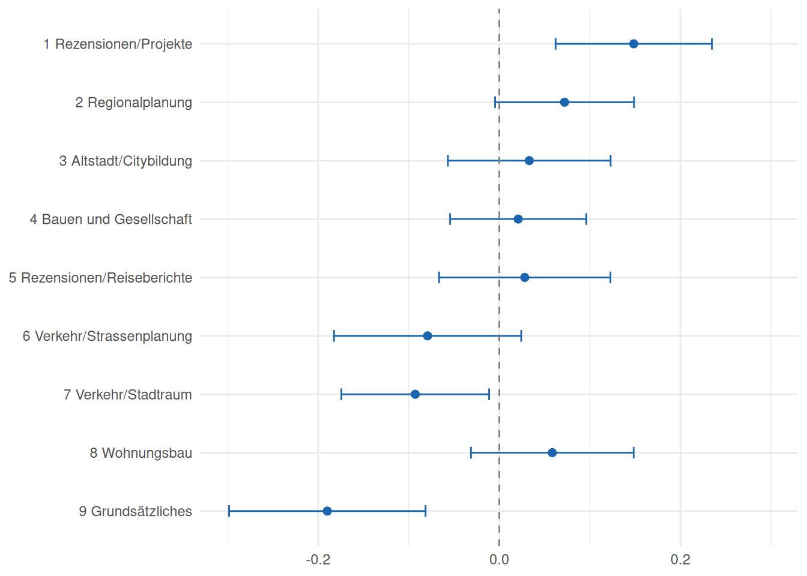
fachpublikum = TRUE auf die proportionale Verteilung der Themen im Vergleich zu fachpublikum = FALSE
Die Ergebnisse bestätigen im Allgemeinen die bereits beim Vergleich der Modelle mit bzw. ohne Covariates erkennbare Tendenz, dass die zusätzlichen Variablen keine grossen Veränderungen bezüglich der modellierten Verteilung der topics auslösen. Bei einigen Inhalten lassen sich jedoch Einflüsse auf die resultierenden topics feststellen, die auch statistisch signifikant sind. Damit kann die These, dass sich die von Marti bearbeiteten Themen je nach Zielpublikum unterscheiden, zumindest teilweise als bestätigt angesehen werden. Dies gilt jedoch nicht uneingeschränkt für alle modellierten topics. Erwähnt seien hier die Topics 1 (Rezensionen/Projekte) und 9 (Grundsätzliches), bei denen die Variable zum Zielpublikum im gewählten Modell einen messbaren Einfluss auf die Verteilung nimmt, der auf einem hohen Signifikanzniveau liegt.
Bezogen auf Topic 1 hat die Variable fachpublikum Einfluss auf einem hohen Signifikanzniveau von 0 < p < 0.001 (***). Von Inhalten, die nicht in Fachzeitschriften veröffentlicht wurden, fallen nur knapp 1.5% unter das Topic 1. Betrachtet man jedoch nur Artikel aus Fachzeitschriften, erhöht sich der Anteil von Topic 1 auf 16.3%. Ein Abgleich mit Abbildung 19 ergibt, dass Topic 1 mit dem Begriff Rezensionen/Projekte gelabelt wurde. Dass diese anteilsmässig deutlich häufiger in Fachzeitschriften auftreten als z.B. in Tageszeitungen, entspricht den Erwartungen.
Ein zunächst etwas überraschendes Ergebnis stellen die Koeffizienten für Topic 9 dar, das von Marti aufgeworfene Grundsatzfragen und übergreifende Fragestellungen zur Ausgestaltung der Planungsziele zusammenfasst (vgl. Abbildung 19). Hier sind – ebenfalls mit einer vergleichsweise hohen statistischen Signifikanz – fast 28% aller features eines Artikels, der nicht in einer Fachzeitschrift erschienen ist, diesem Thema zugeordnet. Verglichen damit sinkt der Anteil dieses Themas an den Inhalten, wenn fachpublikum den Wert TRUE annimmt, um 19 Prozentpunkte. Damit zeigt sich, dass grundsätzliche politische Debatten zum Wesen der Planung in der Schweiz – jedenfalls von Hans Marti – eher in der Tagespresse, und damit hier hauptsächlich in der NZZ, geführt wurde.
Politik und Publizistik (These 2)
Als weitere Variable ist in den Metadaten zum Korpus auch festgehalten, ob der jeweilige Artikel veröffentlicht wurde, als Marti ein politisches Amt im weiteren Sinne innehatte – dies betrifft den Zeitraum von 1958 bis 1968 (Tabelle 2). Die zu untersuchende Frage ist nun, ob sich die Verteilung der Themen mit Blick auf diese Phase verändert. Dazu kann, analog zum Vorgehen bei These 1, der Einfluss der Variable pol_mandat auf die Verteilung der Themen berechnet und interpretiert werden:
topic_effect_pol_mandat <- estimateEffect(
1:k ~ pol_mandat,
stmFit_cov,
metadata = stm_marti_prepped$meta,
documents = stm_marti_prepped$documents
)
Call:
estimateEffect(formula = 1:k ~ pol_mandat, stmobj = stmFit_cov,
metadata = stm_marti_prepped$meta, documents = stm_marti_prepped$documents)
Topic 1:
Coefficients:
Estimate Std. Error t value Pr(>|t|)
(Intercept) 0.12464 0.02893 4.308 2.67e-05 ***
pol_mandatTRUE -0.03179 0.04645 -0.684 0.495
---
Signif. codes: 0 '***' 0.001 '**' 0.01 '*' 0.05 '.' 0.1 ' ' 1
Topic 2:
Coefficients:
Estimate Std. Error t value Pr(>|t|)
(Intercept) 0.089648 0.024809 3.613 0.00039 ***
pol_mandatTRUE -0.007377 0.037602 -0.196 0.84468
---
Signif. codes: 0 '***' 0.001 '**' 0.01 '*' 0.05 '.' 0.1 ' ' 1
Topic 3:
Coefficients:
Estimate Std. Error t value Pr(>|t|)
(Intercept) 0.15100 0.03003 5.028 1.17e-06 ***
pol_mandatTRUE -0.10903 0.04263 -2.557 0.0114 *
---
Signif. codes: 0 '***' 0.001 '**' 0.01 '*' 0.05 '.' 0.1 ' ' 1
Topic 4:
Coefficients:
Estimate Std. Error t value Pr(>|t|)
(Intercept) 0.10343 0.02640 3.917 0.000126 ***
pol_mandatTRUE -0.03756 0.04049 -0.928 0.354754
---
Signif. codes: 0 '***' 0.001 '**' 0.01 '*' 0.05 '.' 0.1 ' ' 1
Topic 5:
Coefficients:
Estimate Std. Error t value Pr(>|t|)
(Intercept) 0.11420 0.03073 3.716 0.000269 ***
pol_mandatTRUE 0.01678 0.04668 0.359 0.719643
---
Signif. codes: 0 '***' 0.001 '**' 0.01 '*' 0.05 '.' 0.1 ' ' 1
Topic 6:
Coefficients:
Estimate Std. Error t value Pr(>|t|)
(Intercept) 0.11700 0.03217 3.637 0.000358 ***
pol_mandatTRUE 0.04026 0.04864 0.828 0.408894
---
Signif. codes: 0 '***' 0.001 '**' 0.01 '*' 0.05 '.' 0.1 ' ' 1
Topic 7:
Coefficients:
Estimate Std. Error t value Pr(>|t|)
(Intercept) 0.03623 0.02315 1.565 0.11936
pol_mandatTRUE 0.12931 0.04072 3.176 0.00175 **
---
Signif. codes: 0 '***' 0.001 '**' 0.01 '*' 0.05 '.' 0.1 ' ' 1
Topic 8:
Coefficients:
Estimate Std. Error t value Pr(>|t|)
(Intercept) 0.11262 0.02834 3.973 0.000102 ***
pol_mandatTRUE 0.00993 0.04607 0.216 0.829592
---
Signif. codes: 0 '***' 0.001 '**' 0.01 '*' 0.05 '.' 0.1 ' ' 1
Topic 9:
Coefficients:
Estimate Std. Error t value Pr(>|t|)
(Intercept) 0.150127 0.033035 4.544 9.95e-06 ***
pol_mandatTRUE -0.008141 0.051005 -0.160 0.873
---
Signif. codes: 0 '***' 0.001 '**' 0.01 '*' 0.05 '.' 0.1 ' ' 1Auch für diese Variable können die Effekte in einem Plot inklusive 95%-Konfidenzintervall dargestellt werden (Abbildung 23).
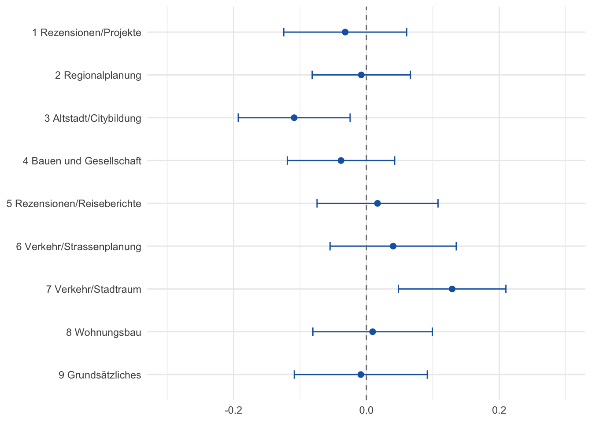
pol_mandat = TRUE auf die proportionale Verteilung der Themen im Vergleich zu pol_mandat = FALSE
Wie in Abbildung 23 abgelesen werden kann, hat der Wert der Variable pol_mandat einen statistisch messbaren Einfluss insbesondere auf das Auftreten von zwei topics: Altstadt/Citybildung (Topic 3) und Verkehr/Stadtraum (Topic 7).
Gemäss des Modells nimmt die Prävalenz von Topic 7 (Verkehr/Stadtraum) zu, wenn die Variable pol_mandat den Wert TRUE annimmt. In den Publikationen von Hans Marti, die er während seiner Zeit als Gemeinderat bzw. Delegierter verfasst hat, kommt das Thema also – verglichen mit ausserhalb dieses Zeitraums verfassten Texten – häufiger vor. Dies ist vor dem Hintergrund der vorhandenen Informationen zu erwarten gewesen: Einerseits wegen Martis persönlichem Einsatz für verkehrsplanerische Anliegen, andererseits (und spezifisch für diesen Zeitraum) wegen der konkreten Aufgabenstellung, die ihm als Delegiertem für Stadtplanung zu Beginn der 1960er-Jahre anvertraut wurde – die Suche nach verträglichen Lösungen für die Errichtung von Stadtautobahnen (genannt Expressstrassen) durch Zürich (Blanc 2018, 74) und der damit verbundene Auftrag, Verkehrsplanung als Teil der Stadtplanung zu entwickeln.
Im Gegensatz zu Topic 7 nimmt die Prävalenz von Topic 3 (Altstadt/Citybildung) ab, wenn die Variable pol_mandat den Wert TRUE annimmt. In den Publikationen von Hans Marti, die er während seiner Zeit als Gemeinderat bzw. Delegierter verfasst hat, scheint dieser Themenkomplex eine geringere Rolle zu spielen als während seines weiteren Berufslebens. Dieser Befund ist zunächst überraschend, spielte doch der Umgang mit vorhandenen städtischen Strukturen eine wichtige Rolle während der Zeit nach dem Zweiten Weltkrieg und insbesondere im Kontext der Planung von Stadtautobahnen bzw. den Expressstrassen, an der Marti beteiligt gewesen ist. Jedoch kann die im Vergleich geringere Prävalenz dieses topics in den 1960er-Jahren damit erklärt werden, dass die Stadtzürcher Debatte zum Umgang mit der Altstadt bereits anfangs der 1950er-Jahre geführt wurde und schon zu Beginn der 1960er-Jahre verbindliche Regelungen für den Erhalt von historischer Bausubstanz verabschiedet werden konnten (Fischli 2012, 181, 183). Die Debatte, an der sich Marti vor seiner Wahl in den Gemeinderat durchaus beteiligt hatte (Marti 1951a, 1951b), war mit der Einrichtung einer städtischen Denkmalpflege im Jahr 1958 (Fischli 2012, 182) damit bereits im Grundsatz abgeschlossen. Abbildung 24 zeigt darüber hinaus, dass das feature altstadt*, beispielhaft ausgewählt für diesen Themenkomplex, auch nach Martis Zeit als Delegierter für Stadtplanung in seinen Texten quasi keine Rolle mehr gespielt hat.
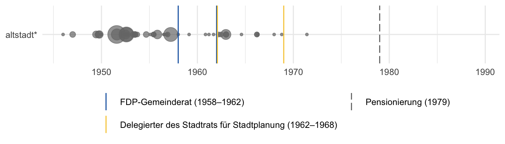
Martis Engagement im Bereich Verkehrsplanung (These 3)
Mit dem Wissen um Martis Engagement in der Verkehrsplanung erscheint es auch plausibel, dass gleich zwei von neun definierten topics diesem Bereich zuzuordnen sind – Topic 6 und Topic 7. Unterschiede zwischen beiden topics können z.B. mit stm visualisiert werden (Abbildung 25), indem features geplottet werden, die jeweils wahrscheinlicher einem von beiden topics zugeordnet werden können.
plot(stmFit_cov, type="perspectives", topics = c(6,7), plabels = c("Strassenplanung", "Stadtraum"))
Durch die Interpretation von Abbildung 25 habe ich schlussendlich den Topics 6 und 7 die unterschiedlichen Label zuweisen können. Bei den features, die Topics 6 (Verkehr/Strassenplanung) zugeordnet werden, scheint es sich eher um Inhalte zu handeln, die generell den Bau von Strassen, insbesondere auch der Nationalstrassen/Autobahnen, thematisieren. Dagegen ergibt sich aus den features, die eher auf der Seite von Topic 7 (Verkehr/Stadtraum) geplottet werden, ein tendenziell kleinmassstäblicherer Blick auf den Strassenbau, fokussiert auf den Umgang mit dem motorisierten Individualverkehr im Stadtraum, zum Beispiel Parkplätze betreffend.
Wie beschrieben, gilt Marti als langjähriger Kritiker vom Ausbau des Nationalstrassennetzes und engagierte sich bereits seit den 1950er-Jahren in dieser Sache, noch bevor der Strassenbau im Umweltschutz-Kontext ein vielbeachtetes Thema wurde (Knieza 2012; Koll-Schretzenmayr 2008b, 36). Dieser Befund kann auch anhand Martis Publikationstätigkeit überprüft werden: Abbildung 26 zeigt die Häufigkeit ausgewählter Schlagwörter mit Bezug zur Verkehrsplanung auf einer Zeitleiste. Zum Vergleich werden noch zwei weitere features ohne unmittelbaren Verkehrsbezug (gesetz*, altstadt*) geplottet.
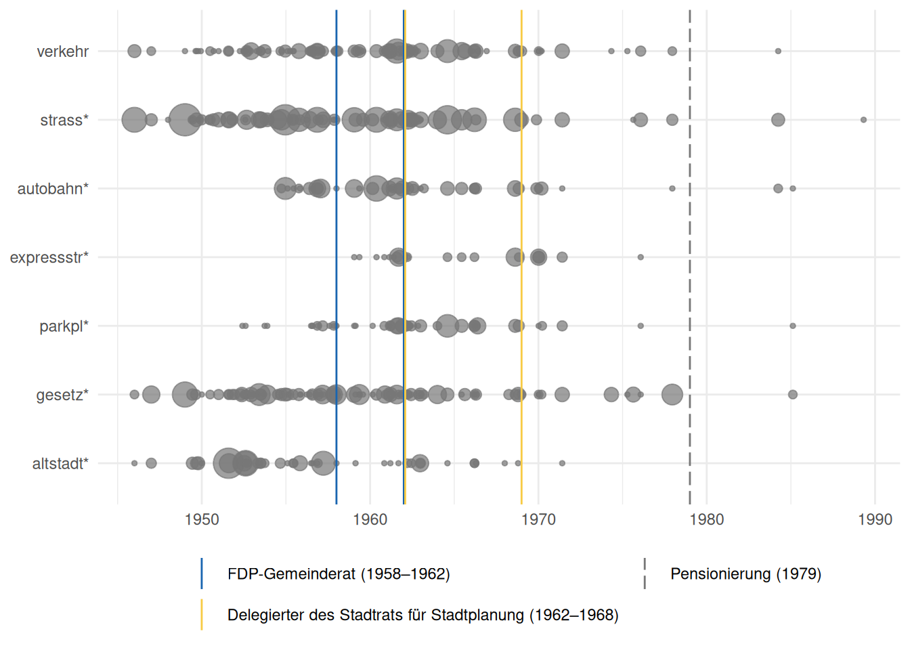
Diese Darstellung auf einer Zeitachse zeigt bezogen auf die ausgewählten features mit Verkehrsbezug, dass Marti dieses Thema durchaus sehr früh behandelt hat. In der direkten Gegenüberstellung zeigt sich weiterhin, dass ihn Verkehrsthemen über mehrere Jahrzehnte und damit länger als andere Handlungsfelder – hier verglichen mit altstadt* – begleitet haben.
Die Häufigkeitsverteilung anderer features lässt dagegen vermuten, dass bestimmte Aspekte der Verkehrsplanung nicht durchgehend relevant waren. So lässt sich die vergleichsweise geringe Häufigkeit des features expressstr* – die Zürcher Expressstrassen/Stadtautobahnen – damit erklären, dass diese zwar den grösseren Kontext seiner Tätigkeit für die Zürcher Stadtplanung in den 1960er-Jahren darstellten, aber deren Planung noch gar nicht entscheidungsreif war. Vielmehr hatte sich Marti hauptsächlich mit dem Umgang mit dem Wachstum der Verkehrsströme vom Umland nach Zürich hinein auseinanderzusetzen (Blanc 2018, 74; vgl. Eisinger 2004, 299f.): Wo sollen all diese Fahrzeuge abgestellt werden? Wie sollen die städtischen Strassen umgestaltet werden, um den Zielverkehr zu bewältigen? Es ist angesichts dieses zuvorderst eher städtebaulichen statt verkehrsplanerischen Handlungsdrucks nicht verwunderlich, dass zu dieser Zeit in Martis Publikationen mehr über die Parkplatzsituation als über das eigentliche Expressstrassennetz referiert wird. Die Auswertung der Artikel im Korpus stützt diese Interpretation.
Dreidimensionalität der Stadt (These 4)
Mit der Bauform ‹Hochhaus› sind – zunächst zwar nicht quantitativ, aber doch qualitativ – ab den 1950er-Jahren in der Schweiz die sichtbarsten Veränderungen im Stadtbild verbunden (Eisinger 2004, 199). Die Höhenentwicklung im Städtebau wird dementsprechend auch in der Architekturszene zum Thema und direkt zum Gegenstand umfassender Debatten; Hans Marti ist Teil einer Spezialkommission der Vereinigung für Landesplanung, die zu Beginn der 1950er-Jahre Richtlinien für die Planung von Hochhäusern erarbeiten sollte (Eisinger 2004, 203f.).
Gerade aufgrund dieser inhaltlichen Aktualität bin ich überrascht, dass Hochhäuser im trainierten Topic Model inhaltlich nicht besonders hervorstechen. Ist die Debatte um Hochhäuser bei Marti eine «Geschichte [der] Absenz» (Eisinger 2004, 199), wie in der Schweizer Architekturgeschichte allgemein? Einen Hinweis zur Einordnung liefert Hans Marti selbst, indem er fordert, für die Diskussion über Hochhäuser «die höhere Ebene zu besteigen, die Ebene, von der aus wir Architekten die bauliche Zukunft unseres Landes zu bestimmen haben.» (Marti 1957a, 143). Für ihn stellen Höhenvorgaben im Städtebau generell ein «volkswirtschaftliche[s] Problem erster Ordnung» (Marti 1957b, 726) dar. Hochhäuser seien ein «rationales Argument auf dem Weg zu einer besseren Stadt» (Eisinger 2004, 211), und daher als Teil umfassenderer Debatten über die Gestaltung des gemeinschaftlichen Zusammenlebens zu verorten. So kann auch das Auftauchen des einzelnen Begriffs ‹hochhaus› als einer der am wahrscheinlichsten den topics Bauen und Gesellschaft und Wohnungsbau zugeordneten features erklärt werden. Dass ‹Hochhaus› als topic nicht separat ausgeweisen ist, lässt sich dementsprechend trotz der belegten Aktualität und Bedeutsamkeit der Thematik schlussendlich nachvollziehen.
Ein weiterer Grund für das Fehlen eines eigenen topics ‹Hochhäuser› mag sein, dass das Thema Hochhaus bzw. Höhe rein begrifflich im Vergleich mit Begriffen aus z.B. der Verkehrsplanung – Autobahn, Parkplatz etc. – nicht so leicht abzugrenzen ist: Höhe als charakteristische Eigenschaft von Hochhäusern überschneidet sich in Abfragen nach features wie hoch* oder hoh* mit allen anderen adjektivischen oder übertragenen Verwendungen dieser Begriffe, z.B. im Zusammenhang von hohen Werten planerischer Kennziffern (Ausnützungsziffer etc.) oder auch im sonstigen Sprachgebrauch wie z.B. in ‹hoher Bedarf›. Die Darstellungen in Abbildung 27 zeigen, dass hoh* und hoch* zeitlich eine deutlich weitere Streuung aufweisen als das sprachlich spezifischere hochh*.
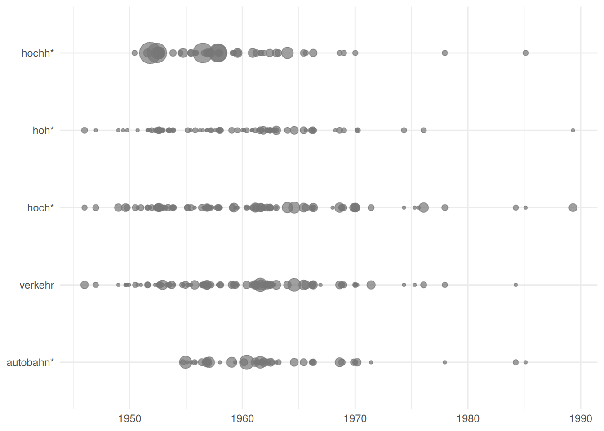
autobahn* und verkehr als Vergleichswerte)
Konzentriert man sich in Abbildung 27 ausschliesslich auf das feature hochh*, lässt sich eine Verteilung ablesen, die zeitlich durchaus zum Verlauf der Debatte in der Schweizer Architekturszene passt, die im Groben und Ganzen zwischen 1950 und 1970 ausgetragen wurde und in tendenzieller Ablehnung der Typologie ‹Hochhaus› mündete (Eisinger 2004, 227).
Die Auseinandersetzung mit Hochhäusern kann ausserdem als Teil des für Marti wie beschrieben wichtigen Themenkomplexes ‹kubisches Bild der Stadt› (Schlappner 1993) aufgefasst werden. In diesem Zusammenhang illustriert Martis Artikel ‹Erhöhte Ausnützung im Baugebiet›, wie er bzw. sein Büro dieses Thema abseits der Publizistik angegangen sind: Mit einem zuvorderst visuellen Zugang in Form von Modellstudien (Marti 1957c, 828f.). Die zahlreichen abgedruckten Fotos verleiten zu der Annahme, dass gerade bei diesem Thema die schriftliche Form und damit die für das Topic Modelling zugänglichen Inhalte nur unzureichend sind. Noch viel mehr als bei anderen Bereichen von Architektur bzw. Planung scheint hier auf visuelle Methoden der Vermittlung von Argumenten zurückgegriffen zu werden. Dieser Teil des Hochhausdiskurses bleibt mit der gewählten Methode grundsätzlich ein Stück weit aussen vor.
Diskussion
Zum Abschluss werde ich die Ergebnisse aus dem Topic Modelling anhand der Thesen zusammenfassen und darauf eingehen, welche inhaltlichen Schlüsse für die Arbeit von Hans Marti und für die Geschichte der Raumplanung in der Schweiz gezogen werden können. Anschliessend rekapituliere ich die Tauglichkeit der verwendeten Methode vor dem Hintergrund der zur Verfügung stehenden Daten sowie im Kontext des personenzentrierten Ansatzes.
Ergebnisse der Analyse
Die neun topics, die den Output des trainierten Topic Models darstellen (Abbildung 19), wirken sowohl inhaltlich wie auch strukturell plausibel. Allerdings ist es bei einigen topics einfacher, den Inhalt mit ein bis zwei Schlagworten zu beschreiben, so etwa bei Topic 9 (Grundsätzliches). Andere topics dagegen sind weniger eindeutig, weil die zugeordneten features auch zu anderen modellierten topics passen können. Die Topics 1 und 5 (Rezensionen/Projekte bzw. Rezensionen/Reiseberichte) sind zwei passende Beispiele: Für beide topics sind als Artikel mit der grössten statistischen Passgenauigkeit hauptsächlich Rezensionen von Bau- bzw. Planungsprojekten aufgeführt, eine trennscharfe Unterscheidung ist nur bedingt möglich. Da Texte, die aktuelle Projekte rezensieren, jedoch einen grossen Anteil am Korpus haben, ist es dennoch plausibel, dass eine solche Unterscheidung getroffen werden kann – als Gemeinsamkeit kann die Textgattung und (in begrenztem Masse) als Unterschied die inhaltliche Stossrichtung gesehen werden. Versuchsweise hatte ich auch die Anzahl der topics reduziert, aber in einer Gesamtschau hat sich die Interpretierbarkeit aller topics nicht verbessert. Zwei topics mit sich überschneidender inhaltlicher Ausrichtung zu behalten, hat sich auch an anderer Stelle, bei den Topics 6 und 7 (Verkehr/Strassenplanung bzw. Verkehr/Stadtraum) als gerechtfertigt erwiesen.
Themenverteilung nach Zielpublikum (These 1)
Hans Martis publizistische Tätigkeit fand sowohl in dezidierten Fachzeitschriften für Fachleute aus Architektur und Planung, als auch in Publikationen mit breiterem Adressat*innenkreis statt. Über eine Klassifizierung des Zielpublikums konnte ich untersuchen, ob sich die Prävalenz der topics zwischen diesen beiden Gruppen unterscheidet. Grundsätzlich lässt sich ein nur geringer Einfluss auf die Verteilung erkennen (Abbildung 22). Ausnahmen bilden die topics Rezensionen/Projekte und Grundsätzliches. Während erstere wenig überraschend überwiegend in Fachpublikationen auftauchen, beteiligt sich Marti an der Debatte über grundsätzliche Fragestellungen zu Planungsthemen (Gesetzgebung etc.) zwar auch in Fachmedien, seine Beiträge zu diesem Teil des Planungsdiskurses scheint er jedoch eher an ein breiteres Publikum (hier hauptsächlich in der NZZ) zu richten.
Politik und Publizistik (These 2)
Während seiner Amtszeit als Gemeinderat und anschliessend als Delegierter des Stadtrates für Stadtplanung führt Marti seine publizistische Tätigkeit fort. Ob die politische Tätigkeit einen Einfluss auf das Modell hatte, kann über einen Vergleich der Artikel aus den jeweiligen Zeiträumen eruiert werden. Es konnten relevante Unterschiede in der Prävalenz von zwei topics beobachtet werden (Abbildung 23): Erstens treten verkehrsplanerische topics vermehrt während seiner Amtszeit auf, darunter insbesondere Topic 7 (Verkehr/Stadtraum). Dies ist angesichts der Zunahme der Nutzung privater Autos und Martis Aufgabe, sich mit den daraus folgenden Problemen auseinanderzusetzen, auch zu erwarten gewesen. Die Feststellung, dass das Topic 3 (Altstadt/Citybildung) im gleichen Zeitraum weniger prominent vertreten ist, lässt sich dagegen nicht auf Martis persönliche Prioritätensetzung zurückführen, sondern eher darauf, dass diese Debatte bereits zu einem früheren Zeitpunkt geführt wurde. Der zunächst vermutete Effekt seiner Mandate auf die Prävalenz von Topic 9 (Grundsätzliches) konnte nicht bestätigt werden.
Martis Engagement im Bereich Verkehrsplanung (These 3)
Dass Verkehrsplanung und insbesondere der Kampf gegen die Führung von Autobahnen durch existierende Siedlungen eine wichtige Rolle in Martis Arbeit einnimmt, konnte erwartungsgemäss bestätigt werden. Die Darstellung des zeitlichen Verlaufs (Abbildung 26) bekräftigt den Befund, Marti habe sich schon vergleichsweise früh mit diesem Planungsproblem auseinandergesetzt. Die Unterscheidung verkehrsplanerischer Themen in zwei verschiedene (bei insgesamt zehn) topics unterstreicht die prominente Stellung erneut und bietet einen differenzierten Blick auf die unterschiedlichen Bereiche, die vom Aufkommen der Massenmobilität betroffen waren (Abbildung 25). Zusätzlich liefert die Zeitleiste ein Indiz dafür, dass für Marti als Delegiertem des Stadtrates die verkehrsplanerische Aufgabe, den Stadtraum unter den Vorzeichen wachsender Nutzung von PKWs zu gestalten, von höherer Bedeutung als der Bau von neuen Strassen an sich gewesen sein könnte.
Dreidimensionalität der Stadt (These 4)
Die These, dass Hochhäuser eines der für Marti wichtigen Themen in seiner Publikationstätigkeit sind, konnte anhand der Prävalenz im Korpus nicht bestätigt werden. Dies ist einerseits damit zu erklären, dass Marti die stattfindende Diskussion offenbar zum Anlass nahm, Themen zu bearbeiten, für die die Hochhäuserdebatte ‹nur› ein Aufschlagspunkt war (z.B. zur Ausnützungsziffer vgl. Marti 1954a). Andererseits könnte ein Grund auch darin liegen, dass Hochhäuser bzw. die Höhenentwicklung in Siedlungen tendenziell ein Thema ist, an dem Marti in/mit anderen Medien und an anderen Orten – etwa der erwähnten VLP-Spezialkommission oder in seinem Planungsbüro (vgl. Stadterweiterung Chur) – praktisch gearbeitet hat. Gleichzeitig kam bei der Analyse der Daten für diese These das Problem der semantischen Mehrdeutigkeit von Begriffen – Höhe, hoch etc. – auf, durch die die Aussagekraft der Datenbasis für diesen Bereich eingeschränkt wurde.
Daten: Umfang und Qualität des Korpus
Als generelle Einschränkung für alle Ergebnisse muss auf den geringen Umfang des Korpus hingewiesen werden, der 186 Volltexte aus 10 verschiedenen Publikationen enthält (Abbildung 8). Weiterhin ist der überwiegende Teil der Artikel relativ kurz (Abbildung 10). Die statistischen Auswertungen insbesondere der Effekte der ins Topic Model einbezogenen Metadaten sind dementsprechend cum grano salis zu interpretieren und dienen eher dazu, eine Tendenz anzuzeigen, als quantitativ belastbare Aussagen zu machen. Auch die Interpretation von Unterschieden im Zeitverlauf als Charakteristika von Martis inhaltlichem Fokus ist aufgrund der ab den 1960er-Jahren abnehmenden Publikationstätigkeit nur begrenzt möglich (vgl. Abbildung 9).
Die Qualität der erzeugten Textdateien aus den Artikeln – sowohl selbst aus PDF-Dateien generierte, als auch bereits als maschinenlesbarer Text bezogene Inhalte – ist bezogen auf den Verwendungszweck und den bag-of-words-Ansatz m.E. generell von adäquater Qualität. Transkriptionsfehler und Inhalte aus anderen Artikeln sind jedoch (auf Basis von Stichproben) in grosser Zahl auffindbar. Eine weitergehende Arbeit mit diesen Inhalten würde dementsprechend weiteres Data Cleaning nötig machen. Probleme bei der OCR-Verarbeitung der Artikel sind insbesondere in zwei Bereichen aufgefallen: Transkriptionsfehler im Vokabular aus dem Wortschatz von Architektur bzw. Planung konnten nicht automatisch durch den Abgleich mit Wörterbüchern eliminiert werden. In diesem Bereich sind daher noch viele Ungenauigkeiten im Korpus zu erwarten. Zweitens sind die zahlreichen Helvetismen (inkl. Toponyme, auch in den anderen Landessprachen) eine Fehlerquelle in der OCR-Transkription gewesen. Da eine Auswertung der Inhalte nach geografischen Bezügen o.ä. allerdings ohnehin nicht Teil dieser Arbeit ist, stellt dieses Manko keinen Stolperstein dar.
Methode: Quantitative Textanalyse
Die quantitative Textanalyse mittels Topic Modelling habe ich mit dem Ziel durchgeführt, einen Textkorpus automatisiert zu verarbeiten und die einzelnen Artikel inhaltlich zu klassifizieren. Dieses Vorhaben konnte im Grossen und Ganzen erfolgreich durchgeführt werden. Die neun topics, die Teil des trainierten Modells sind, scheinen vor dem Hintergrund der zu erwartenden Inhalte im Korpus plausibel.
Da Anzahl und Länge der Artikel insgesamt überschaubar sind, war es relativ einfach, eine oberflächliche Evaluation durchzuführen. Die im ‹stm›-Package angebotenen Evaluationsmöglichkeiten habe ich auch genutzt (Abbildung 15, Abbildung 17). Die Aussagekraft dieser Darstellungen scheint mir jedoch im Vergleich mit einer Evaluation der topics anhand der tatsächlichen Artikelinhalte gering. Schlussendlich wird in Abbildung 15 und Abbildung 17 die Qualität des trainierten Modells und nicht die Qualität der definierten topics quantifiziert (Chang u. a. 2009, 1). Um die passenden Parameter für das Topic Model zu finden, sind ohnehin mehrere Iterationen und Abwägungen durch Menschen nötig.
Generell kann Topic Modelling nur einen Zwischenschritt darstellen, etwa um sich einen Korpus zu erschliessen und/oder die Ergebnisse als Ausgangspunkt weiterer Forschung zu nehmen. Insbesondere bei umfangreichen Korpora ist maschinelle Unterstützung zur Erschliessung hilfreich und sinnvoll, aber kein Ersatz für das tatsächliche Lesen. «Automated content methods are incorrect models of language» (Grimmer und Stewart 2013, 268), da übertragene Bedeutungen eines features oder der semantische Kontext einer Formulierung nicht erfasst werden. Dieser Umstand hat vermutlich auf die in diesem Korpus vorhandenen Sachtexte weniger spürbare Auswirkungen als auf einen Korpus mit literarischen Texten, muss aber dennoch bei der Interpretation bedacht werden.
Weiterhin ist auch zu beachten, dass statistische Zusammenhänge keine Kausalität bedeuten müssen. Dies wurde im Zusammenhang von These 2 deutlich: Die Prävalenz von Topic 3 (Altstadt/Citybildung) ist im untersuchten Zeitraum zwar geringer als im restlichen Korpus (Abbildung 26), was aber eher mit der unabhängig von Marti verlaufenden Themenkonjunktur erklärt werden kann als mit dem Einfluss seiner parteipolitischen Arbeit.
Methode: Planungsgeschichte anhand von Biografien
Der hier verfolgte Ansatz, Einblicke in die Planungsgeschichte der Schweiz über die Publikationen eines Autors zu erlangen, ist nur einer von vielen möglichen Perspektiven. Für die Schweiz ist gerade Hans Marti in Form des häufig von mir zitierten Sammelbands (Ruedin und Hanak 2008) ein prominentes Beispiel für die Methode der biografischen Planungsgeschichtsschreibung. Lendi (2018, 274) attestiert der schweizerischen Planungsszene generell eine Vorliebe für grosse Persönlichkeiten, in die sich die Geschichtsschreibung entlang von Martis Berufsleben einfügt – eine Darstellung, die notabene grossteils von Planer*innen geprägt bzw. an Institutionen geschrieben wird, die selbst Teil der Szene sind.
Mit einer Geschichtsschreibung, die Biografien als roten Faden nutzt, ist die Gefahr verbunden, dass die Personen im Zentrum der Untersuchung als Genies dargestellt und bestimmte Themen mit einer bestimmten Person bzw. Gruppe verknüpft werden, ohne deren Arbeiten in den Kontext grösserer gesellschaftlicher Entwicklungen zu stellen (Freestone 2017, 61f.; Hein 2017, 7) sowie ohne den Einfluss lokaler Akteur*innen und Alltagspraktiken auf die räumliche Entwicklung adäquat zu berücksichtigen (Jonas und Ward 2007, 170). Wie in diesem Fall einen Planer mit eigenem Büro zum Thema einer Analyse zu machen, kann auch dazu führen, dass der Fokus auf dem Entwurf bzw. Ausführung bestimmter Projekte liegt und die Rolle der Verwaltung und anderer politischer oder wirtschaftlicher Institutionen zu kurz kommen.
Freestone (2017, 69f.) präsentiert eine Typologie biografischer Planungsgeschichtsschreibung seit 1980, in der er vier Kategorien unterscheidet: Cosmopolitans, Women, Planning Groups und ‹Planning Pairs› (direkte Gegenüberstellung zweier Planer*innen). Der von mir verfolgte Ansatz passt trotz der Ausrichtung auf eine Persönlichkeit nicht in diese Kategorien. Mit dem Fokus auf Publikationen, die nicht unbedingt im Zusammenhang mit zeitlich und räumlich parallel ablaufenden Planungs- bzw. Bauprozessen mit Beteiligung von Marti stehen müssen, versuche ich, in dieser Analyse zu vermeiden, ihn als die eine grosse Persönlichkeit darzustellen. Stattdessen liegt im Zusammenfallen von Martis Berufsleben und den währenddessen laufenden Institutionalisierungsprozessen die Chance, in der regen Publikationstätigkeit die Bandbreite der für die räumliche Entwicklung der Schweiz relevanten Themen abzubilden. Insbesondere als langjähriger Redaktor der Schweizerischen Bauzeitung tritt er de facto als Chronist auf. Die Identifikation der Themen im Korpus kann ein erster Schritt sein, nicht (mehr) die Person Marti, sondern die Bandbreite an Themen als repräsentativ für den betrachteten Zeitraum zu sehen: «[N]o longer concentrate mainly on planners but more on planning» (Avermaete 2017, 478). Wie sich in der Analyse gezeigt hat, sind die grossen planerischen Themen der Zeit durch den Korpus abgedeckt.
Fazit und Ausblick
Die Untersuchung der publizistischen Tätigkeit Hans Martis mithilfe quantitativer Textanalyse und Topic Modelling hatte das Ziel, thematische Schwerpunkte seines planerischen Denkens sichtbar zu machen und diese im Kontext der schweizerischen Planungsgeschichte zu verorten. Im Rückblick zeigt sich, dass sich durch die computergestützte Analyse bekannte inhaltliche Linien bestätigen:
Verfolgt man Martis Arbeit über die Jahrzehnte seiner publizistischen Tätigkeit, zeichnet sich das Bild eines vielseitig engagierten Planers. Die «schrittweise Entfaltung einer einem modernen Architektur- und Städtebauverständnis verpflichteten und an den Bedingungen des Industriezeitalters ausgerichteten Planungshaltung» (Eisinger 2008, 207) ist geprägt vom Wandel der Städte in der Nachkriegszeit. Marti hadert mit der Geschwindigkeit, die keine planerische Grundlagenarbeit erlaubt (Marti 1964a, 59). Im Angesicht der planerischen Herausforderungen ist keine Zeit für eine politische Debatte, keine Zeit «zu meditieren, wenn hupende Autokolonnen die Stadtplanung zu eiligem Handeln anspornen» (Marti 1957a, 143). Er wünscht sich «ein echtes Gespräch» (Marti 1964a, 61), eine tiefgreifende Diskussion über die Aufgaben und Werkzeuge von Stadt- und Raumplanung in der Schweiz. Seine Zeitungsartikel können als Teil einer solchen Diskussion gesehen werden: Neben den Inhalten, die als täglich Brot eines Redaktors gelten können (Rezensionen, Projektberichte) und tagesaktuellen Themen (z.B. Altstadt/Citybuilding), sind es wie beschrieben regelmässig die grossen Fragen, die Marti in seinen Texten aufruft (Grundsätzliche Fragen zu Planung, Bauen und Gesellschaft sowie langfristige Diskussionen über Verkehrsplanung oder Wohnungsbau).
Die Häufigkeit, mit der im Korpus Gesetzgebung, Leitbilder und Planungstheorie thematisiert werden, zeigt, wie Stadt, Architektur und konkrete Bauvorhaben häufig ‹nur› als Spiegel fungieren, um übergreifende Fragestellungen zu diskutieren. Damit steht er mit Zeitgenossen wie Max Frisch, Lucius Burckhardt und Markus Kutter für eine Debatte, in der «der Stadt kein Nebenschauplatz zugeordnet war, aber auch keine Hauptrolle: Diese hatte der öffentliche Diskurs zu übernehmen» (Herbst 2018, 91). Ohne die Perspektiven des Ingenieurwesens, der Architektur, der Gesetzgebung aus dem Blick zu verlieren, bleibt Planung für Marti eine «menschliche, gesellschaftliche oder gar kulturelle Aufgabe» (Marti 1961b, 159; vgl. Maissen 2014, 42).
Zu diesem Planungsverständnis passt auch, dass Marti für Fachzeitschriften und in der Tagespresse sowie vereinzelt in anderen Formaten (Abbildung 8) schreibt und dort nicht nur, wie etwa Frick und Schreiber (1969, 127) für die westdeutsche Presse bemängeln, Planungsergebnisse kommuniziert, sondern auch laufende Prozesse und Varianten diskutiert (beispielhaft Marti 1970, 1974). Er wird so zu einer Schlüsselfigur bezüglich der Verbreitung planerischen Wissens (vgl. Ward 2017) in der Schweiz und in begrenztem Masse auch als Berichterstatter aus dem Ausland (z.B. Marti 1961a, 1963; Marti und Bing 1957). Martis Texte machen sichtbar, wie eng fachliche, gesellschaftliche und politische Fragen der Planung in der Nachkriegszeit verwoben waren. Sein publizistisches Werk steht damit exemplarisch für eine Generation von Planer*innen, die zwischen Fachöffentlichkeit und breiter gesellschaftlicher Diskussion vermittelten.
Marti wie Steiner (1987, 6) als einen Rufer in der Wüste zu bezeichnen erscheint nach der Analyse seines publizistischen Outputs nicht treffend. Seine jahrzehntelange Mitwirkung an fachpolitischen Debatten in verschiedenen Foren – Planungspraxis, Fachzeitschriften, Massenmedien, Parteipolitik – ist nicht zuletzt durch eine enge Vernetzung mit anderen Akteur*innen gekennzeichnet. In Themen wie der Verkehrsplanung war er durchaus lange ein Einzelkämpfer, aber allein in einer Wüste ist Marti dennoch nicht. Passender verwendet Koll-Schretzenmayr (2010, 18) dieselbe Metapher, um die Gesamtheit der ersten Planer (sic) in der Schweiz zu bezeichnen, die über Jahrzehnte ‹rufen› mussten, um Gehör für ihre Anliegen zu finden. Marti war also, um im Bild zu bleiben, nicht der einzige Rufer in der Wüste. Seine fachpolitischen Äusserungen sind vielleicht auch nicht die lautesten, aber gekennzeichnet von «Konsequenz, eine[m] langen Atem und viel, viel Ausdauer» (Ruedin 1994, 47).
Anknüpfungspunkte und offene Fragen
Der hier verfolgte Ansatz beschränkt sich auf die Suche nach Erkenntnissen zur Planungsgeschichte anhand des Wirkens eines einzelnen Planers – und auch innerhalb dieses eingegrenzten Untersuchungsfeldes habe ich insofern noch eine weitere Einschränkung vorgenommen, indem ich mich nur auf schriftlichen Output konzentriert habe. Diese stellt nur einen, wenn auch wichtigen, Aspekt von Martis Berufleben dar. Als andere Perspektive sind Untersuchungen seiner realisierten Bau-/Planungsprojekte denkbar, um weitere Einblicke in sein Planungsverständnis und seine fachpolitischen Ansichten zu erlangen. Im Falle von Hans Marti, dessen Nachlass im gta Archiv an der ETH Zürich liegt (Knieza 2012), sind als eine weitere mögliche Quelle etwa von ihm verfertigte Handzeichnungen in einer Skizzensammlung zugänglich (Marti o. J.). Für eine Herangehensweise, die nicht auf Schriftsprache und quantitative Textanalyse, sondern auf einen visuellen Zugang setzt (vgl. Dühr 2014), können diese Skizzen Einblicke in Martis Entwurfsprozess, seine Gedanken «hinter dem Plan» (Twente und Grau 2025) bieten.
Auch aus der Arbeit mit dem Korpus selbst haben sich noch Fragen ergeben, die mit Topic Modelling oder anderen sprach-/textbezogenen Methoden bearbeitet werden könnten. Um stärker auf die Texte an sich einzugehen, bietet sich etwa eine Auseinandersetzung mit Martis Vokabular an. Sein Kampf gegen den Ausbau der Autobahnen, auch als «Autobahnkriege» (Schretzenmayr, Teuscher, und Casaulta-Meyer 2017, 63) tituliert, könnte ein Ausgangspunkt für eine Sentiment Analysis sein. Bezogen auf Städtebau- bzw. Planungstheorie könnte auch die Verwendung von biologischen Metaphern untersucht werden, mit denen Städte bisweilen beschrieben werden («Zellgewebe» (Meili 1933, 17); vgl. auch Hans Ernis ‹Tagebuchblatt eines Urbanisten›, dazu Moos (2021, 187)). Interessant wäre auch ein räumlicher Ansatz, um zu analysieren, über welche Städte, Regionen etc. Marti (wie) spricht. Ein Fokus auf Zürich ist zu erwarten, aber zeigen sich sonst geografische Schwerpunkte oder Auslassungen? Wie sich während der Korpusexploration gezeigt hat, ist für die Arbeit mit Toponymen ein ‹sauberer› Korpus nötig.
Eine Aufweitung der Untersuchung auf ganze Zeitschriften oder weitere Autor*innen könnte ein umfassenderes Bild der Planungsszene bieten, die insbesondere weniger auf Zürich fokussiert ist und ggfs. auch andere Sprachregionen einbezieht. Für eine digitalisiert verfügbare Zeitschrift wie die Schweizerische Bauzeitung, in ihrem Selbstverständnis das «Sprachrohr des gesamten Planungswesens» (Kündig 2004, 9) und ein «langfristiges Gedächtnis» (Furrer 2004, 11), scheint dies ein lohnenswerter Ansatz zu sein. Tatsächlich ist die Bauzeitung bzw. ihre Nachfolgerin Tec21 Teil einer korpuslinguistischen Untersuchung von Architekturzeitschriften an der ZHAW im laufenden Forschungsprojekt «Geschichte der ‹Öko-Architektur› in der Schweiz, 196X–199X. Eine architekturhistorische, korpuslinguistische und gendertheoretische Analyse» (Gerber und Krasselt 2025; vgl. Kuny und Bächtiger 2025).
Schliesslich ist noch Hans Martis FDP-Mitgliedschaft bzw. sein (partei)politisches Engagement ein Aspekt, an den weitere planungsgeschichtliche oder politikwissenschaftliche Fragestellungen geknüpft werden könnten: In den 1960er-Jahren war die Entstehung der Planungsgesetzgebung geprägt durch «liberal-bürgerliche Antwort[en] auf die parlamentarischen Vorstösse der Linken zur Bodenrechtsreform» (Martin Lendi in Koll-Schretzenmayr 2008a, 90.). Hans Martis Aktivitäten als Kommunalpolitiker sowie in zahlreichen Kommissionen auch auf Bundesebene (Marti 2008, 24) als Untersuchungsgegenstand können den Anfang einer Untersuchung von Aktivitäten im Planungskontext durch die verschiedenen politischen Parteien, auf den unterschiedlichen politischen Ebenen oder z.B. in den verschiedenen Regionen der Schweiz darstellen.
Bibliografie
Althaus, Eveline. 2018. Sozialraum Hochhaus: Nachbarschaft und Wohnalltag in Schweizer Großwohnbauten. Bielefeld: transcript Verlag. https://doi.org/10.1515/9783839442968.
Aregger, Hans. 1953. „10 Jahre Landesplanung“. Wohnen 28 (8): 225–26. https://doi.org/10.5169/SEALS-102557.
Avermaete, Tom. 2017. „Death of the Author, Center, and Meta-Theory: Emerging Planning Histories and Expanding Methods of the Early 21st Century“. In The Routledge Handbook of Planning History, herausgegeben von Carola Hein, 1. Aufl., 9. Routledge. https://doi.org/10.4324/9781315718996-41.
Bächtold, Hans-Georg. 2010. „Mehr Mut zum Eingriff“. Tec21 136 (10): 23–27. https://doi.org/10.5169/SEALS-109573.
Banks, George C., Haley M. Woznyj, Ryan S. Wesslen, und Roxanne L. Ross. 2018. „A Review of Best Practice Recommendations for Text Analysis in R (and a User-Friendly App)“. Journal of Business and Psychology 33 (4): 445–59. https://doi.org/10.1007/s10869-017-9528-3.
Benoit, Kenneth, Kohei Watanabe, Haiyan Wang, Paul Nulty, Adam Obeng, Stefan Müller, und Akitaka Matsuo. 2018. „quanteda: An R package for the quantitative analysis of textual data“. Journal of Open Source Software 3 (30): 774. https://doi.org/10.21105/joss.00774.
Berchtold, Simone Maria, und Martin Hannes Graf. 2025. „Marti“. Schweizerisches Idiotikon. Zürich. https://familiennamen.ch/name/Marti.
Blanc, Jean-Daniel. 2018. „Mit "Lawinenverbauungen" gegen Stadtautobahnen“. In Reformen jenseits der Revolte. Zürich in den langen Sechzigern, herausgegeben von Erika Hebeisen, Gisela Hürlimann, und Regula Schmid, 85:69–81. Mitteilungen der Antiquarischen Gesellschaft in Zürich. Zürich: Chronos. https://doi.org/10.5169/seals-1045768.
Blei, David M. 2012. „Probabilistic topic models“. Communications of the ACM 55 (4): 77–84. https://doi.org/10.1145/2133806.2133826.
Böcker, Dagmar. 2007. „Marti, Hans“. Historisches Lexikon der Schweiz (HLS). https://hls-dhs-dss.ch/de/articles/027384/2007-10-22/.
Bridel, Laurent. 2011. „Raumplanung“. Historisches Lexikon der Schweiz (HLS). https://hls-dhs-dss.ch/de/articles/007844/2011-05-19/.
Burckhardt, Lucius. 1962. „Brown-Boveri-Wohnsiedlung "In den Wyden" in Birr“. Das Werk: Architektur und Kunst 49 (3): 89–91. https://doi.org/10.5169/SEALS-38396.
Burckhardt, Lucius, Max Frisch, und Markus Kutter. 2016. achtung: die Schriften. Reprint. Zürich: Triest Verlag.
Capol, Jan. 1994. „Was heute gilt, ist morgen falsch: 40 Jahre Zürcher Studiengesellschaft für Bau- und Verkehrsfragen (ZBV)“. Hochparterre 7 (10): 42–44. https://doi.org/10.5169/SEALS-120024.
Chang, Jonathan, Jordan Boyd-Graber, Chong Wang, Sean Gerrish, und David M. Blei. 2009. „Reading Tea Leaves: How Humans Interpret Topic Models“. In Neural Information Processing Systems. Vancouver, BC. http://cs.umd.edu/~jbg//docs/nips2009-rtl.pdf.
Comet Photo AG. 1968. „Aarau, Buchs (AG), Übersicht, Blick nach Ostnordosten (ENE)“. https://doi.org/10.3932/ETHZ-A-000023280.
Danielzyk, Rainer, und Angelika Münter. 2018. „Raumplanung“. In Handwörterbuch der Stadt- und Raumentwicklung, herausgegeben von Akademie für Raumforschung und Landesplanung, Ausgabe 2018, 1931–42. Hannover: Akademie für Raumforschung und Landesplanung.
De Alban, Don. 2017. „Learning Structural Topic Modeling“. https://github.com/dondealban/learning-stm.
Degen, Hans. 1999. „50 Jahre Raumplanung in der Schweiz mit spezieller Betrachtung des Kantons Zurich“. disP - The Planning Review 35 (139): 49–56. https://doi.org/10.1080/02513625.1999.10556725.
Diener, Roger, Jacques Herzog, Marcel Meili, Pierre de Meuron, und Christian Schmid. 2006. Die Schweiz: Ein städtebauliches Porträt. Basel: Birkhäuser. https://doi.org/10.1515/9783764376611.
Diller, Christian. 2018. „Raumordnung“. In Handwörterbuch der Stadt- und Raumentwicklung, herausgegeben von Akademie für Raumforschung und Landesplanung, Ausgabe 2018, 1889–1900. Hannover: Akademie für Raumforschung und Landesplanung.
Drout, Michael, und Leah Smith. 2012. „How to Read a Dendrogram“. https://wheatoncollege.edu/wp-content/uploads/2012/08/How-to-Read-a-Dendrogram-Web-Ready.pdf.
Dühr, Stefanie. 2014. „Analysing Cartographic Representations in Spatial Planning“. In The Routledge Handbook of Planning Research Methods, 192–201. New York: Routledge.
Eisinger, Angelus. 2004. Städte bauen: Städtebau und Stadtentwicklung in der Schweiz 1940-1970. Zürich: gta Verlag.
———. 2008. „Hans Marti und die Frage nach der Stadt: Diagnosen, Positionsbezüge, Akzente und Manifestationen“. In Hans Marti – Pionier der Raumplanung, herausgegeben von Claude Ruedin und Michael Hanak, 207–15. Zürich: gta Verlag.
Fischli, Melchior. 2012. Geplante Altstadt: Zürich, 1920-1960. Mitteilungen der Antiquarischen Gesellschaft in Zürich 79. Zürich: Chronos. https://doi.org/10.5169/seals-1045713.
Freestone, Robert. 2017. „Biographical Method“. In The Routledge Handbook of Planning History, herausgegeben von Carola Hein, 1. Aufl., 60–75. Routledge. https://doi.org/10.4324/9781315718996-7.
Frick, Dieter, und Folker Schreiber. 1969. „Planung und Presse: Stadt- und Regionalplanung in der überregionalen Tagespresse“. StadtBauwelt 1969 (25/26): 125–27.
Friedli, Werner. 1963. „Birr, Brown Boveri Werk“. https://doi.org/10.3932/ETHZ-A-000365261.
Fuchs, Felix, und Michael Hanak. 1998. „Die Wohnsiedlung Telli in Aarau: ein 25jährige Grossüberbauung im planerischen und städtebaulichen Kontext“. Aarauer Neujahrsblätter 72: 131–60. https://doi.org/10.5169/SEALS-559260.
Furrer, Bernhard. 2004. „Die Zeitung als "Erinnerungsort"“. Tec21 130 (Dossier (47/04): Jubiläumsausgabe 130 Jahre): 10–11. https://doi.org/10.5169/SEALS-108471.
Fürst, Dietrich. 2018. „Planung“. In Handwörterbuch der Stadt- und Raumentwicklung, herausgegeben von ARL – Akademie für Raumforschung und Landesplanung, 1711–19. Hannover: Verlag der ARL.
Galili, Tal. 2015. „dendextend: an R package for visualizing, adjusting and comparing trees of hierarchical clustering“. Bioinformatics 31 (22): 3718–20. https://doi.org/10.1093/bioinformatics/btv428.
Gerber, Andri, und Julia Krasselt. 2025. „Geschichte der „Öko-Architektur“ in der Schweiz, 196X–199X. Eine architekturhistorische, korpuslinguistische und gendertheoretische Analyse“. https://data.snf.ch/grants/grant/10003075.
Gerosa, Pier Giorgio. 1983. „Die Anfänge des Städtebaus und der Raumplanung im Kanton Tessin“. Schweizer Ingenieur und Architekt 101 (20): 551–52. https://doi.org/10.5169/SEALS-75137.
Gisler-Jauch, Rolf. 2015. „Automobil“. Historisches Lexikon der Schweiz (HLS). https://hls-dhs-dss.ch/de/articles/013901/2015-01-21/.
Gower, Robin. 2022. „csvwr: Read and Write CSV on the Web (CSVW) Tables and Metadata“. https://robsteranium.github.io/csvwr/.
Graf, Manuel. 2010. „Sozialdemokratisches Vorsprechen findet keine Unterstützung“. In Handbuch der eidgenössischen Volksabstimmungen 1848–2007, herausgegeben von Wolf Linder, Christian Bolliger, und Yvan Rielle, 295–96. Bern: Haupt-Verlag. https://swissvotes.ch/vote/214.00.
Grau, Victoria, und Max Welch Guerra. 2024a. Histories of Urban Planning and Political Power: European Perspectives. 1. Aufl. New York: Routledge. https://doi.org/10.4324/9781003475224.
———. 2024b. „Investigating urban planning in various forms of rule“. In Histories of Urban Planning and Political Power, 1. Aufl., 1–10. New York: Routledge. https://doi.org/10.4324/9781003475224-1.
Grimmer, Justin, und Brandon M. Stewart. 2013. „Text as Data: The Promise and Pitfalls of Automatic Content Analysis Methods for Political Texts“. Political Analysis 21 (3): 267–97. https://doi.org/10.1093/pan/mps028.
Hanak, Michael. 2008a. „Regionalplanung Birrfeld: neue Bebauung auf grüner Wiese“. In Hans Marti – Pionier der Raumplanung, herausgegeben von Claude Ruedin und Michael Hanak, 166–69. Zürich: gta Verlag.
———. 2008b. „Wohnsiedlung Telli, Aarau: Arealüberbauung nach gesamthafter Planung“. In Hans Marti – Pionier der Raumplanung, herausgegeben von Claude Ruedin und Michael Hanak, 108–11. Zürich: gta Verlag.
Hanak, Michael, und Claude Ruedin. 2008a. „Planen heisst schützen“. In Hans Marti – Pionier der Raumplanung, herausgegeben von Claude Ruedin und Michael Hanak, 175–77. Zürich: gta Verlag.
———. 2008b. „Stadtplanung Chur: Gemischte Bauweise zur Stadterweiterung“. In Hans Marti – Pionier der Raumplanung, herausgegeben von Claude Ruedin und Michael Hanak, 100–103. Zürich: gta Verlag.
———. 2008c. „Stadtplanung Zofingen: Anreize zur Stadtgestaltung mittels Bonus“. In Hans Marti – Pionier der Raumplanung, herausgegeben von Claude Ruedin und Michael Hanak, 96–99. Zürich: gta Verlag.
Hartmann Schweizer, Rahel, und Jakob Zweifel. 2004. „Zwischen Heimatstil, "weicher" und "harter" Moderne“. Tec21 Dossier 47 (04): 20–22. https://doi.org/10.5169/SEALS-108474.
Hasenöhrl, Ute. 2010. „Koll-Schretzenmayr, Martina (2008): Gelungen – Misslungen? Die Geschichte der Raumplanung Schweiz“. Raumforschung und Raumordnung Spatial Research and Planning 68 (4). https://doi.org/10.1007/s13147-010-0032-8.
Hein, Carola. 2017. „The What, Why, and How of Planning History“. In The Routledge Handbook of Planning History, herausgegeben von Carola Hein, 1. Aufl., 1–10. Routledge. https://doi.org/10.4324/9781315718996-1.
Hengstermann, Andreas. 2022. „Country Profile of Switzerland“. ARL Country Profiles. Hannover: ARL. https://www.arl-international.com/knowledge/country-profiles/switzerland/rev/3757.
Herbst, Marcel. 2018. „Wir selber bauen unsre Stadt“. Merkur 72 (828): 91–97. https://www.merkur-zeitschrift.de/artikel/wir-selber-bauen-unsre-stadt-a-mr-72-5-91/.
Herzog, Jacques, Pierre de Meuron, Lisa Euler, Metaxis Markaki, Charlotte von Moos, und Martino Tattara, Hrsg. 2016. achtung: die Landschaft. Lässt sich die Stadt anders denken? Zürich: Lars Müller Publishers.
Hildebrand, Sonja. 2006. „Urbane Schweiz. Urbanistische Konzepte für die Schweiz von 1930 bis heute“. In Das Ende der Urbanisierung? Wandelnde Perspektiven auf die Stadt, ihre Geschichte und Erforschung, herausgegeben von Karsten Borgmann, Matthias Bruhn, Sven Kuhrau, und Marc Schalenberg, 69–83. Historisches Forum 8. Berlin: Clio-Online und Humboldt-Universität zu Berlin. https://doi.org/10.18452/17823.
Hodgson, Petra Hagen. 2023. Gebaute Beziehungen: Max Frisch und Franz Bruno Frisch – Zwei Architekten im Kontext ihrer Zeit. Zürich: Scheidegger & Spiess.
Hotz, Stefan. 2009. „Die vorläufige Korrektur einer Fehlplanung“. Neue Zürcher Zeitung, April, 23. https://www.nzz.ch/die_vorlaeufige_korrektur_einer_fehlplanung-ld.560576.
Johannesson, Mikael Poul. 2019. „stmprinter: Print multiple stm model dashboards to a pdf file for inspection“. https://github.com/mikajoh/stmprinter.
———. 2020. „tidystm: Extract effects from estimateEffect in the stm package“. https://github.com/mikajoh/tidystm.
Jonas, Andrew E. G., und Kevin Ward. 2007. „Introduction to a Debate on City‐Regions: New Geographies of Governance, Democracy and Social Reproduction“. International Journal of Urban and Regional Research 31 (1): 169–78. https://doi.org/10.1111/j.1468-2427.2007.00711.x.
Kast, Hans. 1983. „Hans Marti zum 70. Geburtstag“. Schweizer Ingenieur und Architekt 101 (27/28): 748–49. https://www.e-periodica.ch/digbib/view?pid=sbz-003%3A1983%3A101%3A%3A2931#2976.
Kissling, Samuel, und Damian Jerjen. 2023. „Ein langer Weg mit unerfreulichem Ende“. EspaceSuisse – Im Fokus. https://www.espacesuisse.ch/de/im-fokus/ein-langer-weg-mit-unerfreulichem-ende.
Knieza, Marta. 2012. „Bestandesbeschrieb Hans Marti“. Website des gta Archivs. Zürich: gta Archiv. https://archiv.gta.arch.ethz.ch/de/bestaende/hans-marti.
Knoepfel, Peter, Patrick Csikos, Jean-David Gerber, und Stéphane Nahrath. 2012. „Transformation der Rolle des Staates und der Grundeigentümer in städtischen Raumentwicklungsprozessen im Lichte der nachhaltigen Entwicklung“. Politische Vierteljahresschrift 53 (3): 414–43. https://doi.org/10.5771/0032-3470-2012-3-414.
Koch, Michael. 1992. Städtebau in der Schweiz 1800–1990: Entwicklungslinien, Einflüsse und Stationen. ORL-Bericht. Zürich: vdf Hochschulverlag AG an der ETH Zürich.
———. 2008a. „Orts-, Regional- und Landesplanung – Planen mit gesamtheitlicher Sicht“. In Hans Marti – Pionier der Raumplanung, 113–15. Zürich: gta Verlag.
———. 2008b. „Städtebau – Entwickeln planerischer Werkzeuge“. In Hans Marti – Pionier der Raumplanung, 39–41. Zürich: gta Verlag.
Koll-Schretzenmayr, Martina. 2008a. Gelungen - misslungen? die Geschichte der Raumplanung Schweiz. Zürich: NZZ Libro.
———. 2008b. „Hans Marti und die Jugendjahre der schweizerischen Landesplanung – eine Zeitreise“. In Hans Marti – Pionier der Raumplanung, herausgegeben von Claude Ruedin und Michael Hanak, 32–37. Zürich: gta Verlag.
———. 2010. „Rufer in der Wüste“. Tec21 136 (10): 18–22. https://doi.org/10.5169/SEALS-109572.
Kündig, Daniel. 2004. „Eine starke Stimme für die Planer“. Tec21 130 (Dossier 47/04: Jubiläumsausgabe 130 Jahre): 9. https://doi.org/10.5169/SEALS-108469.
———. 2010. „Mehr Dimensionen in der Raumplanung“. Tec21 136 (10): 33. https://www.e-periodica.ch/cntmng?pid=sbz-004:2010:136::627.
Kuny, Tamino, und Marcel Bächtiger. 2025. „«Sprache konstruiert auch etwas»“. Hochparterre 38 (3): 20–25. https://www.hochparterre.ch/nachrichten/architektur/sprache-der-architekturkritik.
Lendi, Martin. 1983. „Stadtplanung als politische Aufgabe“. disP - The Planning Review 19 (71): 5–11. https://doi.org/10.1080/02513625.1983.10708348.
———. 2006. „Zur Geschichte der schweizerischen Raumplanung“. disP – The Planning Review 42 (167): 66–83. https://doi.org/10.1080/02513625.2006.10556969.
———. 2007. „Die Politik bewegt die Raumplanung: Novellierung des Planungsrechts umfassend prüfen“. disP - The Planning Review 43 (170): 71–79. https://doi.org/10.1080/02513625.2007.10556990.
———. 2010. „Raumplanung neu denken“. Tec21 136 (10): 28–31. https://doi.org/10.5169/SEALS-109574.
———. 2016. „Erlebte Raumplanungsgeschichte“. disP - The Planning Review 52 (3): 82–109. https://doi.org/10.1080/02513625.2016.1235892.
———. 2018. Geschichte und Perspektiven der schweizerischen Raumplanung: Raumplanung als öffentliche Aufgabe und wissenschaftliche Herausforderung. Zürich: vdf Hochschulverlag AG an der ETH Zürich.
Levin-Keitel, Meike, und Lukas Behrend. 2022. Die Topologie der Planungstheorien: Eine Systematisierung planerischen Wissens. Berlin, Heidelberg: Springer. https://doi.org/10.1007/978-3-662-65224-4.
Lezzi, Maria. 2018. „Stadt- und Raumentwicklung Schweiz“. In Handwörterbuch der Stadt- und Raumentwicklung, herausgegeben von Akademie für Raumforschung und Landesplanung, Ausgabe 2018, 2325–33. Hannover: Akademie für Raumforschung und Landesplanung.
Mähr, Moritz, und Moritz Twente. 2025. „One Template to Rule Them All: Interactive Research Data Documentation with Quarto“. Anthology of Computers and the Humanities 2: 54–67. https://doi.org/10.63744/X90VnKkYV5Hb.
Maissen, Carmelia. 2014. Hochhaus und Traktor: Siedlungsentwicklung in Graubünden in den 1960er- und 1970er-Jahren. Zürich: Scheidegger & Spiess.
Malfroy, Sylvain. 2014. „Städtebau“. Historisches Lexikon der Schweiz (HLS). https://hls-dhs-dss.ch/de/articles/007877/2014-03-04/.
Manning, Christopher D., Prabhakar Raghavan, und Hinrich Schütze. 2008. Introduction to Information Retrieval. 1. Aufl. Cambridge University Press. https://doi.org/10.1017/CBO9780511809071.
Marti + Kast. 1973. „Wohnbebauung für 4500 Einwohner“. Bauen + Wohnen 27 (5): 193–96. https://doi.org/10.5169/SEALS-334720.
Marti, Hans. 1949a. „Aus der Praxis der Ortsplanung“. Plan: Zeitschrift für Planen, Energie, Kommunalwesen und Umwelttechnik 6 (1): 1–30. https://doi.org/10.5169/seals-783399.
———. 1949b. „Das Geschäftshaus ’Zum kleinen Pelikan’ in Zürich“. Schweizerische Bauzeitung 67 (34): 459–64. https://doi.org/10.5169/seals-84119.
———. 1950. „Die Planung der Region Baden“. Plan: Zeitschrift für Planen, Energie, Kommunalwesen und Umwelttechnik 7 (4): 108–26. https://doi.org/10.5169/SEALS-781812.
———. 1951a. „Die Entwicklung des Zürcher Stadtzentrums I“. Schweizerische Bauzeitung 69 (31): 425–32. https://doi.org/10.5169/seals-58901.
———. 1951b. „Die Entwicklung des Zürcher Stadtzentrums II“. Schweizerische Bauzeitung 69 (33): 455–61. https://doi.org/10.5169/seals-58907.
———. 1951c. „Es liegt was in der Luft“. Schweizerische Bauzeitung 69 (43): 603–9. https://doi.org/10.5169/SEALS-58949.
———. 1952. „Zürich – die werdende Grossstadt“. Neue Zürcher Zeitung, April. https://www.e-newspaperarchives.ch/?a=d&d=NZZ19520427-01.2.59.
———. 1953a. „Methode und Technik der Regionalplanung am Beispiel von Baden: Vortrag“. Schweizerische Bauzeitung 71 (22): 314–19. https://doi.org/10.5169/SEALS-60561.
———. 1953b. „Ideenwettbewerb für die Gestaltung eines Kulturzentrums in Basel“. Schweizerische Bauzeitung 71 (45): 662–65.
———. 1954a. „Der Ausnützungskoeffizient als Mitte zur Begrenzung der baulichen Abnutzung von Grundstücken“. Schweizerische Bauzeitung 72 (27): 396–98. https://doi.org/10.5169/SEALS-61218.
———. 1954b. „Freifläche und Ausnützung“. Schweizerische Bauzeitung 72 (39): 580–81. https://doi.org/10.5169/SEALS-61262.
———. 1957a. „Das Projekt für das Geschäftshaus ’Zur Palme’ in Zürich: Vorwort der Redaktion“. Schweizerische Bauzeitung 75 (10): 143–48. https://doi.org/10.5169/seals-63320.
———. 1957b. „Gedanken zur Beurteilung von Hochhausprojekten“. Schweizerische Bauzeitung 75 (46): 725–27. https://doi.org/10.5169/SEALS-63446.
———. 1957c. „Erhöhte Ausnützung im Baugebiet“. Schweizerische Bauzeitung 75 (52: 75 Jahre SBZ): 828–31. https://doi.org/10.5169/SEALS-63473.
———. 1960. „Die städtebauliche Entwicklung im Birrfeld“. Schweizerische Bauzeitung 78 (8): 127–32. https://doi.org/10.5169/SEALS-64841.
———. 1961a. „Brasilia, die neue Hauptstadt Brasiliens“. Schweizerische Bauzeitung 79 (12): 177–85. https://doi.org/10.5169/SEALS-65486.
———. 1961b. „Städtebau, eine menschliche Aufgabe“. Schweizerische Bauzeitung 79 (11): 159–63. https://doi.org/10.5169/SEALS-65481.
———. 1961c. „L’urbanisme, un devoir humain“. Habitation : revue trimestrielle de la section romande de l’Association Suisse pour l’Habitat 33 (9): 13–18. https://doi.org/10.5169/SEALS-125181.
———. 1961d. „Brasilia, la nouvelle capitale du Brésil“. Bulletin du ciment 28-29 (24): 1–8. https://doi.org/10.5169/SEALS-145581.
———. 1962. „Quartierplan mit erhöhter Ausnützung in Zofingen“. Schweizerische Bauzeitung 80 (45): 765–69. https://doi.org/10.5169/seals-66264.
———. 1963. „Studienreise der Regionalplanungsgruppe Nordwestschweiz nach Norddeutschland“. Plan: Zeitschrift für Planen, Energie, Kommunalwesen und Umwelttechnik 20 (5): 145–49. https://doi.org/10.5169/SEALS-783048.
———. 1964a. „Die Begrenzung der Stadt“. In Beiträge zum Thema Stadt und Umwelt. Festschrift zum siebzigsten Geburtstag von Ernst Egli, herausgegeben von Werner Aebli, Rolf Meyer, und Ernst Winkler, 58–66. Erlenbach ZH: Eugen Rentsch Verlag.
———. 1964b. „Die Stadtplanung der Stadt Zürich“. Schweizerische Bauzeitung 82 (32): 551–58. https://doi.org/10.5169/SEALS-67550.
———. 1964c. „L’homme et son habitat“. Habitation : revue trimestrielle de la section romande de l’Association Suisse pour l’Habitat 36 (10): 21–22. https://doi.org/10.5169/SEALS-125672.
———. 1968. „25 Jahre Landesplanung“. Schweizerische Bauzeitung 86 (42): 743–45. https://doi.org/10.5169/SEALS-70159.
———. 1970. „Die Expressstrasse im Sihlraum II: Die vier Varianten“. Neue Zürcher Zeitung, Januar, 13. https://www.e-newspaperarchives.ch/?a=d&d=NZZ19700106-01.2.23.1.
———. 1974. „Leitbilder im Rahmen der Raumordnung“. Neue Zürcher Zeitung, Mai, 23. https://www.e-newspaperarchives.ch/?a=d&d=NZZ19740503-01.2.25.21.
———. 2008. „Autobiografische Notizen“. In Hans Marti – Pionier der Raumplanung, herausgegeben von Claude Ruedin und Michael Hanak, 9–29. Zürich: gta Verlag.
———. o. J. „Zwei Collagen“. Zugegriffen 4. Juli 2025. https://archiv.gta.arch.ethz.ch/de/katalog?SystemID=757422&ObjectID=115405.
Marti, Hans, und W. Bing. 1957. „Interbau Berlin 1957“. Schweizerische Bauzeitung 75 (31): 496–500. https://doi.org/10.5169/SEALS-63398.
Marti, Hans, Christian Trippel, und Hans Kast. 1955. „Die Stadtplanung Zofingen“. Plan: Zeitschrift für Planen, Energie, Kommunalwesen und Umwelttechnik 12 (11–12): 201–3. https://doi.org/10.5169/SEALS-783199.
Marti Partner. o. J. „Bürogeschichte“. Firmenwebseite. Marti Partner Architekten & Planer AG. Zugegriffen 20. April 2025. https://www.martipartner.ch/de/ueber-uns/pionier-der-raumplanung/.
Meili, Armin. 1933. „Allgemeines über Landesplanung“. Die Autostrasse 2 (2): 17–21.
———. 1944. „Die Zeitschrift "Plan" wird offizielles Organ der Schweiz. Vereinigung für Landesplanung (VLP)“. Plan: Zeitschrift für Planen, Energie, Kommunalwesen und Umwelttechnik 1 (2): 25–26. https://doi.org/10.5169/SEALS-781722.
———. 1958. „25 Jahre Landesplanung in der Schweiz“. Werk 45 (9): 308–11. https://doi.org/10.5169/SEALS-35073.
———. 1964. „Vergeudung der Schweizer Erde: Gedanken eines alten zornigen Mannes“. Neue Zürcher Zeitung, Oktober, 29–30. https://www.e-newspaperarchives.ch/?a=d&d=NZZ19641004-01.2.62.
Mimno, David, Hannah M. Wallach, Edmund Talley, Miriam Leenders, und Andrew McCallum. 2011. „Optimizing semantic coherence in topic models“. EMNLP ’11: Proceedings of the Conference on Empirical Methods in Natural Language Processing, 262–72. https://dl.acm.org/citation.cfm?id=2145462.
Moos, Stanislaus von. 2021. Erste Hilfe: Architekturdiskurs nach 1940: eine Schweizer Spurensuche. Zürich: gta Verlag.
Mossdorf, Carl. 1949. „Bodenfrage, Baugesetze und Planung“. Plan: Zeitschrift für Planen, Energie, Kommunalwesen und Umwelttechnik 6 (3): 75–84. https://doi.org/10.5169/SEALS-783412.
Müller, Kirill, und Jenny Bryan. 2020. „here: A Simpler Way to Find Your Files“. https://doi.org/10.32614/CRAN.package.here.
Nahrath, Stéphane. 2002. Les effets de la mise en place du régime institutionnel de l’aménagement du territoire sur les plans de zones dans la région lausannoise entre 1969 et 1985. Bd. 16/2002. Working paper de l’IDHEAP. Lausanne: Université de Lausanne. https://core.ac.uk/download/pdf/141525469.pdf.
Oelek, Sambal. 2005. „Querulantenklub wird Fachgremium“. Hochparterre 18 (Beilage zu Heft 11): 12–15. https://doi.org/10.5169/SEALS-122751.
Ooms, Jeroen. 2025a. „hunspell: High-Performance Stemmer, Tokenizer, and Spell Checker“. https://docs.ropensci.org/tabulapdf/.
———. 2025b. „qpdf: Split, Combine and Compress PDF Files“. https://docs.ropensci.org/qpdf.
Photoramacolor AG. 1987. „Faido“. https://doi.org/10.3932/ETHZ-A-001316175.
———. 1993. „Chur“. https://doi.org/10.3932/ETHZ-A-001312553.
Ritter, Markus. 2025. „Räume in Bewegung: Die automobile Stadt“. In Stadträume. Offen und begrenzt, gestaltet und umkämpft, herausgegeben von Esther Baur und Lina Gafner, 9:224–28. Stadt.Geschichte.Basel. Basel: Christoph Merian Verlag. https://doi.org/10.21255/sgb-09.03-874521.
Ritter, Markus, und Martin Schmitz. 2019. „achtung: die Schweiz – die Idee“. In achtung: die Schweiz. Der Urtext von Lucius Burckhardt über die Idee einer neuen Stadt, 9–38. Berlin: Martin Schmitz Verlag.
Roberts, Margaret E., Brandon M. Stewart, und Edoardo M. Airoldi. 2016. „A Model of Text for Experimentation in the Social Sciences“. Journal of the American Statistical Association 111 (515): 988–1003. https://doi.org/10.1080/01621459.2016.1141684.
Roberts, Margaret E., Brandon M. Stewart, und Dustin Tingley. 2019. „stm: An R Package for Structural Topic Models“. Journal of Statistical Software 91 (2). https://doi.org/10.18637/jss.v091.i02.
Roberts, Margaret E., Brandon M. Stewart, Dustin Tingley, Christopher Lucas, Jetson Leder‐Luis, Shana Kushner Gadarian, Bethany Albertson, und David G. Rand. 2014. „Structural Topic Models for Open‐Ended Survey Responses“. American Journal of Political Science 58 (4): 1064–82. https://doi.org/10.1111/ajps.12103.
Ruedin, Claude. 1994. „Hans Marti zum Gedenken“. Schweizer Ingenieur und Architekt 112 (4): 47.
———. 2008. „Regionalplanung Baden: Erprobung des Planungsablaufes“. In Hans Marti – Pionier der Raumplanung, herausgegeben von Claude Ruedin und Michael Hanak, 162–65. Zürich: gta Verlag.
Ruedin, Claude, und Michael Hanak, Hrsg. 2008. Hans Marti – Pionier der Raumplanung. Zürich: gta Verlag.
Schlappner, Martin. 1993. „Zum Tode von Architekt Hans Marti“. Neue Zürcher Zeitung, Dezember, 40. https://www.e-newspaperarchives.ch/?a=d&d=NZZ19931223-01.2.52.8.
Schnell, Dieter. 2005. Bleiben wir sachlich! Deutschschweizer Architekturdiskurs 1919–1939 im Spiegel der Fachzeitschriften. Basel: Schwabe.
Schofield, Alexandra, und David Mimno. 2016. „Comparing Apples to Apple: The Effects of Stemmers on Topic Models“. Transactions of the Association for Computational Linguistics 4 (Dezember): 287–300. https://doi.org/10.1162/tacl_a_00099.
Schretzenmayr, Martina, Andreas Teuscher, und Simona Casaulta-Meyer. 2017. Die Schweiz plant. Dokumente zur Geschichte der Raumplanung. Zürich: Netzwerk Stadt und Landschaft der ETH Zürich.
Schwemmer, Carsten. 2024. „stminsights: A Shiny Application for Inspecting Structural Topic Models“. https://cschwem2er.github.io/stminsights/.
Sepulveda, Mauricio Vargas. 2024. „tabulapdf. Extract Tables from PDF Documents“. https://github.com/ropensci/tabulapdf.
Steiner, Robert. 1987. „Doch der Rufer in der Wüste hatte recht: Hans Marti“. Heimatschutz 82 (4): 6–7. https://doi.org/10.5169/SEALS-175318.
The Turing Way Community. 2024. „The Turing Way handbook for reproducible, ethical and collaborative research“. https://book.the-turing-way.org/.
Thorenz, Nico. 2024. „Die Geschichte hinter dem «Ypsilon»“. Unterwegs – der ASTRA-Blog. https://blog.astra.admin.ch/die-geschichte-hinter-dem-ypsilon/.
Twente, Moritz, und Victoria Grau. 2025. „Hinter dem Konzept und vor dem Plan: Stadtvorstellungen in Hans Martis Skizzensammlung“. In Schweizerische Geschichtstage. Universität Luzern. https://mtwente.github.io/geschichtstage25/docs/abstracts/marti.html.
Ushey, Kevin, und Hadley Wickham. 2025. „renv: Project Environments“. https://rstudio.github.io/renv/.
Vatter, Adrian. 1996. „Politikwissenschaftliche Thesen zur schweizerischen Raumplanung der Nachkriegszeit (1950–1995)“. disP – The Planning Review 32 (127): 28–34. https://doi.org/10.1080/02513625.1996.10556624.
W3C. 2022. „Model for Tabular Data and Metadata on the Web“. https://w3c.github.io/csvw/syntax/.
Ward, Stephen W. 2017. „Planning Diffusion: Agents, Mechanisms, Networks, and Theories“. In The Routledge Handbook of Planning History, herausgegeben von Carola Hein, 1. Aufl., 76–90. Routledge. https://doi.org/10.4324/9781315718996-8.
Wesslen, Ryan S. 2017. „Replication Materials: A Review of Best Practice Recommendations for Text Analysis in R (and a User-Friendly App)“. https://github.com/wesslen/text-analysis-org-science.
Wickham, Hadley. 2023a. „httr: Tools for Working with URLs and HTTP“. https://httr.r-lib.org/.
———. 2023b. „stringr: Simple, Consistent Wrappers for Common String Operations“. https://stringr.tidyverse.org/.
———. 2024. „rvest: Easily Harvest (Scrape) Web Pages“. https://rvest.tidyverse.org/.
Wickham, Hadley, Jim Hester, und Jeroen Ooms. 2025. „xml2: Parse XML“. https://xml2.r-lib.org.
Wiechmann, Thorsten. 2019. „Einleitung – Zum Stand der deutschsprachigen Planungstheorie“. In ARL Reader Planungstheorie Band 1, herausgegeben von Thorsten Wiechmann, 1–11. Berlin, Heidelberg: Springer Berlin Heidelberg. https://doi.org/10.1007/978-3-662-57630-4_1.
Wyrsch, Melanie. 2017. „Das Sichtbarmachen des Zukunftsraums: die Schweizer Raumplanung auf der Suche nach einem nationalen Leitbild in den 1970er Jahren“. Schweizerische Zeitschrift für Geschichte 67 (2): 186–205. https://doi.org/10.5169/SEALS-696987.
Wyrsch, Melanie, und Paul Schneeberger. 2018. Von der VLP zu EspaceSuisse. Herausgegeben von EspaceSuisse. Bern: EspaceSuisse. https://www.espacesuisse.ch/sites/default/files/documents/espacesuisse_geschichtsbroschuere_D_ANSICHT.pdf.
Zurfluh, Lukas. 2023. „Vom Werden eines Denkmals“. Hochparterre 36 (Themenheft 7): 4–6. https://doi.org/10.5169/SEALS-1050361.
Zweifel, Jakob. 1994. „Nachruf: Hans Marti“. werk, bauen + wohnen 81 (3): 72.
Fußnoten
Die Zürcher Stadtautobahnen wurden auch als Expressstrassen bezeichnet und sind heute unter der Projektbezeichnung ‹Zürcher Ypsilon› bekannt (vgl. Blanc 2018; Hotz 2009). Vorgesehen war die innerstädtische Führung der heutigen Autobahnen A1 und A3 und ihre Verknüpfung am Zürcher Letten. Das geplante Expressstrassen-Y wurde erst 2024 aus dem Nationalstrassennetz gestrichen (Thorenz 2024).↩︎
Andere Quellen nennen die Gründung des Zweckverbandes Luzern als ersten privatrechtlich organisierten Zusammenschluss mehrerer Gemeinden zur übergreifenden Planung (Koch 1992, 172f.; Mossdorf 1949, 80).↩︎
Beispiele für solche Statistiken finden sich bei Schretzenmayr, Teuscher, und Casaulta-Meyer (2017, 94f.), wo z.B. eine Übersichtstafel demografischer Kennwerte der Region Solothurn oder eine Visualisierung vorherrschender Windrichtungen in Schinznach abgebildet sind.↩︎
Polemisch dazu Lendi: «Diese vorrangig von Architekten entwickelte Sicht der Schweiz wirkt enorm anregend, bewegt sich aber souverän ausserhalb tradierter wissenschaftlicher Methoden und ist deshalb bei aller Luzidität des Dargestellten und Darstellbaren letztlich schwer nachvollziehbar.» (2007, 78).↩︎
Ich werde durchgehend den Begriff Raumplanung als Überbegriff für diese Disziplin benutzen.↩︎
Ich beziehe mich hier auf Aufgabenstellungen, die spezifisch für die räumliche Entwicklung der Schweiz ab ca. 1945 relevant wurden und Reaktionen innerhalb der institutionellen Landschaft der Schweiz erforderlich machten. Für eine übergeordnete theoretische Auseinandersetzung mit Raumplanung als Glied einer übergeordneten Gesellschaftspolitik, «as an expression, a result, and an instrument of the continuously changing economic, political, and social determinants of spatial development» (Grau und Welch Guerra 2024b, 1) siehe auch weitere Beiträge in dies. (2024a).↩︎
Widerstand gegen vermeintliche Eingriffe in persönliche Freiheiten hat es freilich schon vor dem Kalten Krieg gegeben (vgl. Koll-Schretzenmayr 2010, 18). Für Deutschschweizer Architekturzeitschriften zeigt Schnell (2005, 42), wie bereits in der Zwischenkriegszeit politische Vereinnahmungen bestimmter fachlicher Positionen als ‹bolschewistisch› bezeichnet und damit delegitimiert werden sollten.↩︎
Auch eine Annäherung an ‹amerikanische› Verhältnisse wurde kritisch beäugt (vgl. Koch 1992, 211).↩︎
Eine Darstellung historischer Wurzeln der Schweizer Raumplanung avant la lettre bis zurück ins 19. Jahrhundert findet sich bei Lendi (2018, 117–22) sowie mit einem städebaulichen Fokus bei Koch (1992, z.B. 172f.).↩︎
Zu einer Revision des Raumplanungsgesetzes kam es erstmals im Jahr 2014 (Hengstermann 2022; Lezzi 2018, 2329f.).↩︎
Eine direkte Verbindung zwischen Meilis Kritik aus den 1960er-Jahren und zeitgenössischen Beurteilungen ist jedoch nur bedingt möglich, hat sich doch das Verständnis, was Planung mit welchen Methoden leisten kann und soll, im 20. Jahrhundert stark verändert, vgl. Fürst (2018) und für die Schweiz Wyrsch und Schneeberger (2018, 27).↩︎
Martis Berufslaufbahn fällt in die Zeit, in der Öffentlichkeitsbeteiligung in Planungsprozessen generell zum Thema wird. Seine Zeitgenossen Frick und Schreiber (1969) weisen in diesem Zusammenhang die wichtige Rolle von Tageszeitungen im Planungsprozess (in der Bundesrepublik) hin. Lendi (2018, 294) sieht die Bedeutung journalistischer Auseinandersetzungen auch im 21. Jahrhundert noch als zentral für die öffentliche Meinungsbildung in planerischen Fragen und sieht schweizspezifische Ursachen dafür u.a. in der direkten Demokratie und im Verbandswesen.↩︎
Es handelt sich um den Text L’homme et son habitat (1964c), da dieses Manuskript eines Vortrags in Genf offenbar nicht auf Deutsch publiziert wurde.↩︎
In einigen Fällen konnte kein genaues Veröffentlichungsdatum eruiert werden, z.B. bei jährlich erscheinenden Publikationen wie Neujahrsblättern. In diesen Fällen ist als Datum nur die Jahreszahl
%Yangegeben.↩︎Einen einzelnen Artikel, bei dem die auf e-newspaperarchives.ch erfasste Transkription besonders lückenhaft war, habe ich dabei manuell über die Korrekturfunktion der Plattform korrigiert.↩︎
Siehe z.B. Drout und Smith (2012) für eine kurze Anleitung.↩︎
Etwa im Gegensatz zu Fragestellungen, für die ein Datensatz zu Trainingszwecken benutzt wird, um anschliessend Voraussagen für neue Datenpunkte zu machen.↩︎
Siehe Kommentare zu den issues #186 und #16 im stm-Repository.↩︎